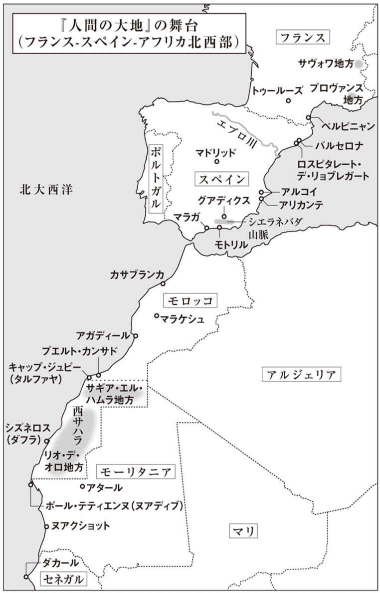
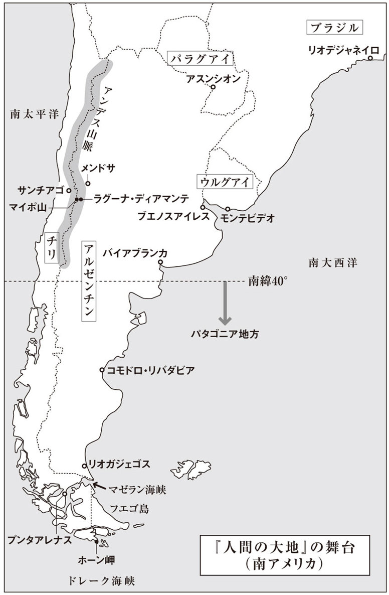
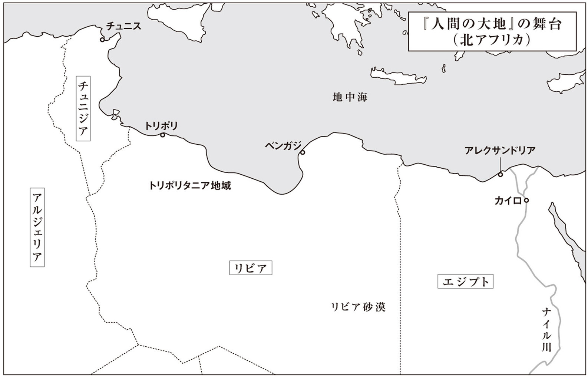

| 人間の大地 (光文社古典新訳文庫) | |
| サン＝テグジュペリ | |
| (2015) | |
人間の大地
サン゠テグジュペリ
渋谷豊訳
Title: TERRE DES HOMMES
1939
Author: Antoine de Saint-Exupéry



僚友アンリ・ギヨメにこの書物を捧げる。
大地は僕ら自身について万巻の書よりも多くを教えてくれる。なぜなら大地は僕らに抗うからだ。人間は障害に挑むときにこそ自分自身を発見するものなのだ。ただし、障害にぶつかるには道具が要る。犂や鍬が要る。農夫は土を耕しながら、自然の神秘を少しずつ暴いていく。そうやって手にする真実は、普遍的な真実だ。それと同じように、定期航空路線の道具、つまり飛行機も、古くから存在するありとあらゆる問題に人間を直面させる。
アルゼンチンでの最初の夜間飛行中に見た光景が、今でも僕の目に浮かぶ。暗い夜の中に、平原に散らばる数少ない灯火の光だけが星のように煌めいていた。
闇の大海原に瞬く光の一つ一つが、今、そこに人間の意識という名の奇跡が存在していることを教えていた。あの家では、誰かが本を読んだり、瞑想したり、打ち明け話を続けたりしていた。別の家では、たぶん誰かが宇宙空間を測定しようとして、アンドロメダ星雲にかんする計算に神経をすり減らしていた。あそこでは、誰かが誰かを愛していた。詩人、小学校教師、大工の家の灯と思しき、この上なく慎ましい灯もあって、平原にぽつぽつと点るそんな光の一つ一つが、それぞれの生きる糧を求めているように見えた。だが、そうした生きた星々の傍らで、どれだけ多くの窓が閉ざされていたことだろう。どれだけ多くの星が光を失い、どれだけ多くの人間が眠り込んでいたことだろう。
絆を取り戻そうとしなければならない。平原のそこここに燃える灯のいくつかと、心を通わせようとしなければならない。
一九二六年。僕はラテコエール社に入社したばかりだった。ラテコエール社というのはアエロポスタル社、そしてその後のエール・フランス社に先んじてトゥールーズ─ダカール間に定期便を飛ばしていた会社だが、そこで僕は新米の定期路線パイロットとして仕事を習っていたのだ。新入りは郵便機の操縦桿を預かる栄誉に浴する前に、研修を受けるのが慣わしで、パイロット仲間の誰もが通ったその道を、僕も歩みはじめたところだった。試験操縦、トゥールーズ─ペルピニャン間の短距離飛行、凍てつく格納庫の隅で行われる陰鬱な気象学の授業......。あの頃、僕らはまだ見ぬスペインの山々に怯えながら、ベテラン・パイロットへの畏敬の念を胸に毎日を過ごしていた。
ベテラン・パイロットたちは食堂で僕らと顔を合わせると、ぶっきらぼうで、ちょっとよそよそしい態度をとりながらも、仰ぎ見るような高みから僕らに助言してくれるのが常だった。アリカンテ（１）やカサブランカから帰還したパイロットの一人が、雨に濡れた革の操縦服を脱ぎもしないで、先に食事を始めていた僕らのテーブルに加わる。そんなときは、僕らのうちの誰か一人が、どんなフライトでしたか、とおずおずと訊ねる。するとパイロットはきまって言葉少なに答えたが、もしそれが嵐の日でもあろうものなら、その短い言葉からまるで御伽の国のような世界が立ち現れた。実際、それは罠や落とし穴があちこちに仕掛けられた不思議な世界で、切り立った崖がふいに現れるかと思えば、杉の木を根こそぎにするような乱気流が吹き荒れ、谷間の入口には黒いドラゴンが立ちはだかり、山の尖峰は無数の稲妻で飾られていた。今にして思えば、パイロットたちは僕らに畏敬の念を抱かせるのに長けていた、ということかもしれない。ただ、ときには彼らのうちの誰かが飛行中に連絡を絶って、永遠に変わらない尊敬の対象になることもあった。
僕は思い出す、ビュリーが帰還した晩のことを。そう、その後、コルビエール山地で命を落とすことになるあのビュリーだ。あの晩、経験豊富なパイロットの彼は僕らの真ん中に腰を下ろして、何も言わずにのろのろと食べていた。両肩はまだフライト中の風圧に押しつぶされたままだった。路線の最初から最後まで雨が降りつづく日には、操縦席から眺める山々が霧の中でのたうちまわっているように見えることがある。言ってみれば、昔の帆走軍艦の甲板の上で、縄索の切れた大砲が床板を傷つけながらごろんごろんと転げまわっているような感じだ。あの日もそんな悪天候の晩だった。僕はビュリーをじっと見つめてから、唾を飲み込んで、思いきって訊いてみた。辛いフライトだったのですか、と。彼は額にしわを寄せたまま、皿に顔を突っこんでいた。僕の言葉は彼の耳に届いていなかった。当時、無蓋の飛行機を操縦していて悪天候に見舞われると、パイロットは前方をもっとよく見ようとして風防ガラスから身を乗り出したものだが、そうすると、地上に戻ってからも、激しい風の音が耳の中で延々と鳴りつづけることになる。ようやくビュリーが顔を上げた。僕の質問に気づいたらしかった。彼はしばらく何か思い出しているようだったが、ふいに晴れやかに笑いだした。この笑いは感動的だった。何しろビュリーはめったに笑わない男だったし、それに、この一瞬の笑いは、いわば彼の疲労を隅々まで照らしだすような笑いだったのだ。彼はこの日の勝利について他に何の説明もせずに、また俯いて無言のまま口を動かしはじめた。くすんだ灰色の食堂では、空港勤務の下級官吏たちがどうということもない一日の疲れを癒していた。その連中に交じって、背を丸くして座っているこの僕らの僚友が、僕には不思議な高貴さをまとっているように思えてきた。彼の無骨な外見の下から、一人の天使が姿を現した。邪悪なドラゴンに打ち勝った天使だった。
ある晩、ついに僕も部長室に呼ばれた。部長はただ一言こう言った。
「明日、きみに行ってもらう」
僕は背筋を伸ばして立っていた。さがってよろしい、と言われるのを待ちながら。だが、部長はしばらく沈黙した後にこう付け加えた。
「服務規程は分かっているね」
今とはちがって、この頃のエンジンはとうてい信頼の置ける代物ではなかった。何の前触れもなく、いきなり食器が割れるようなけたたましい騒音を立てはじめてパイロットを途方に暮れさせるのだ。そんなときは、おとなしく降参してスペインの大地に救いを求めるほかないのだが、スペインの岩だらけの大地が不時着用の地面を提供してくれることはまずなかった。「あそこでエンジンが故障したら」と僕らは仲間同士でよく言ったものだ。「まちがいなくその飛行機はおじゃんだね」。もちろん、飛行機だけなら、代わりがきくからまだいいのだが......。肝要なのは、軽率に岩場に近寄らないことだった。当然、山岳地帯の上空に広がる雲海の上を飛行することは禁止されていて、この規則を破れば最も重い罰が科されることになっていた。雲海の上を飛んでいる最中に何か故障が起これば、パイロットは白い麻屑のような雲の中に突っ込んで、そのまま山影を目にする間もなく尖峰に激突するほかないのだ。
あの晩、ゆっくりした声が念を押すようにして服務規程の話を始めたのには、そんな事情があったのだ。
「スペインの雲海の上で、コンパス頼りに飛行機の操縦を楽しむのはいいものだ。じつに気の利いた楽しみだ。だが......」
ここで声はさらにテンポを緩めた。
「......だが、覚えておきたまえ。雲海の下にあるのは......あの世だ」
雲の上に浮かび出たパイロットの前には、穏やかで、どこまでもなだらかな世界が広がっている。まさにシンプルそのものといった趣きだ。だが、部長にこう言われると、そのシンプルな世界がにわかに新たな意味を持ちはじめ、その穏やかさが罠に思えてきた。僕は想像してみた。今、この足元には白い罠が果てしなく広がっているのだと。すると、雲海の下に慌ただしい人の動きや、喧噪や、潑剌とした街の賑わいがあると思うのはまちがいで、じつは雲の上よりもさらに絶対的な沈黙、最終的な平和があるばかりだということが、実感としてよく分かるような気がした。このとき以来、僕にとっては、鳥もちのようなこの白い罠が現実と非現実を分かつ境界、既知のものと知り得ないものとを分かつ境界になった。また、このときすでに、僕は教養、文化、職業といったフィルターを通して眺めなければ、どんな風景も意味を持たないのだということに気づいていた。なるほど、山岳地帯の住民も雲海のことはよく知っているだろう。だが、彼らは雲海を前にしても、あの世に開かれた窓を覆い隠すカーテンをそこに見てとりはしないのだ。
部長室を出たとき、僕は子供っぽい誇りを感じていた。夜が明ければついに僕の出番だ。僕のこの手に乗客という名の積荷とアフリカ向けの郵便物が委ねられるのだと。だが、僕は同時に、ひどくみじめな思いを味わってもいた。まだ十分に準備ができていないと感じていたのだ。僕が心配していたのは緊急避難場所のことだった。スペインには緊急避難場所が少ないから、何か重大な故障が生じても、どこに不時着すればいいのか分からないかもしれない......。いくら無味乾燥な地図とにらめっこしてみても、僕の求めている答は見つからなかった。そこで、僕は自負心と不安で胸をいっぱいにしながら、僚友であるギヨメの部屋に戦いの前夜を過ごしに行くことにした。あの頃、いつも僕の前を歩いていたギヨメ。スペインを解く鍵のありかを熟知していたギヨメ。そのギヨメに僕は手ほどきしてもらう必要があった。
僕が部屋に入ると、彼は微笑んだ。
「聞いたよ。満足かい？」
彼は戸棚にポートワインの瓶とグラスを取りにいった。戻ってくるとき、やはり彼の顔には微笑みが浮かんでいた。
「一杯やろう。大丈夫、うまくいくさ」
まるでランプが光を放つように、彼の体は一緒にいる人間を安心させる雰囲気を漂わせていた。数年後にアンデス山脈越えと南大西洋横断の郵便飛行の記録（２）を打ち立てることになるこの僚友は、この日の晩、シャツ一枚のラフな姿で、ランプの下で腕組みしながら、最高に優しい微笑みを絶やさずにポツリと言った。「嵐や霧や吹雪が君の行く手を阻むこともあるだろう。そんなときは、君と同じような目にあった連中のことを考えて、自分にただ一言こう言うんだ。他の者にできたことなら俺にもできるってね」僕は地図を広げて、そうは言っても、やはり明日の航程を少しだけでも一緒に見てほしいと頼んだ。ランプの明かりのもとに身をかがめて先輩の肩に寄りかかると、学生時代の安らぎが戻ってきた。
それにしても、あの晩、僕はなんと風変わりな地理の授業を受けたことだろう。ギヨメは僕にスペインについて教えたりはしなかった。そうではなく、スペインを僕の友だちにしてくれたのだ。彼は河川学の話も、人口や家畜数の話もしなかった。グアディクス（３）の話もしなかった。その代わり、グアディクス近郊の畑のへりに生えている三本のオレンジの木の話をしてくれたのだ。「あれには用心しろ。地図に印をつけておけよ」こうして僕の地図の上では、三本のオレンジの木がシエラ・ネバダ山脈よりも大きなスペースを占めることになったのだ。彼はロルカ（４）の話もしなかった。その代わり、ロルカ近郊にある何の変哲もない一軒の農家の話をしてくれた。生命の灯を点す一軒の農家と、そこの主人と妻の話を。こうして、僕らから一五〇〇キロも離れた僻地にひっそりと暮らす夫婦が、僕にはとてつもなく大事な存在になったのだ。山の斜面にしっかりと根を下ろしたこの夫婦は、言ってみれば灯台守のようなものだった。星空の下で、いつでも遭難した者に手を差し伸べる用意ができているのだ。
僕らはこんなふうに世間から忘れられ、想像を絶するほど遠くで暮らしている人々にスポットライトを当てながら、細かなデータを拾いあげていった。いずれも世の地理学者たちの知らないデータばかりだった。そもそも地理学者ときたら、大都市を潤すエブロ川（５）にばかり気を取られていて、モトリル（６）西郊の草むらの下をひっそりと流れる小川、三〇本ほどの草花を養っているだけのあの小川には何の興味も示さないのだ。「この小川も要注意だ。こいつのおかげで、不時着にもってこいの野原が台なしだ......こいつも地図に書き込んでおけよ」ああ！ 僕はぜったいに忘れない、あの蛇のような小川のことを！ ギヨメは僕に教えてくれた。あいつはふだん何食わぬ顔をしている。せいぜい、かすかにせせらぎの音を立てて、カエルを幻惑するのが関の山のように見える。ところが、じつはあいつは眠るときも片目しかつぶらない抜け目のないやつなのだ、と。あの晩、僕とモトリル西郊とのあいだには二〇〇〇キロの距離があったが、それでも僕はじっと蛇に睨まれているような気がしてならなかった。あの蛇はパイロットにとっては楽園にも等しい緊急着陸地の草陰に潜んでいる。ちょっとでも隙を見せれば、たちまち僕の飛行機を炎上させてしまうだろう。
僕はまた、気の荒い三〇頭の羊に敢然と立ち向かう覚悟を決めさせられた。丘の中腹に陣取って、いつでも敵を攻撃してやろうと手ぐすねを引いている羊たちだ。「この草原に不時着したとしよう。君はきっと人っ子一人いないと思うだろうな。ところがね、そこで、ドン！ さ。三〇頭の羊がタイヤの下にタックルしてくるんだ」こんな油断のならない話を聞かされて、僕の頰には感嘆の笑みが浮かんだ。
僕の地図の中のスペインは、ランプの光のもとで、少しずつ御伽の国に変わっていった。僕は緊急避難所と罠に十字の印をつけた。農家の主人と、三〇頭の羊と、小川にも印をつけた。地理学者たちがなおざりにした羊飼いの娘に正確な位置を与えた。
ギヨメと別れた後、僕は凍てつくような冬の夜道が歩きたくなって、コートの襟を立てると、僕のことなど何も知らない通行人に交じって、若者特有の情熱を胸に街をさまよい歩いた。心に秘密を抱えて見ず知らずの人と一緒に歩いていると、何だか誇らしい気持ちになってきた。この連中は僕に見向きもしない。何てがさつな連中だろう。夜明けとともに、彼らの不安や情熱の詰まった郵便袋を積んで飛び立つのはこの僕なのに。皆、僕の手に希望を託し、それで心安らかに一日を過ごすくせに......。コートにすっぽりと身を包んだ僕はそんなことを考えながら、彼らの保護者のような足どりで歩いた。通行人たちは僕の思いやりにはまるで気づいていなかった。
彼らは空模様にもおかまいなしで、僕一人が夜空から送られてくるメッセージを受けとめていた。ひょっとすると、このとき、どこかで吹雪の兆しが生じているかもしれず、もしその吹雪が僕の初フライトをじゃましにくるようなら、僕にとってそれはまさに死活問題だったのだ。星が一つ、また一つと消えていったが、もちろん通行人たちがそれに気づくはずもなかった。僕だけが夜空の内緒話に耳を傾けていた。戦闘開始の直前に、敵軍の配置をそっと耳打ちされているような気分だった。
ところで、僕にとって切実きわまりないこの一連の暗号文を受けとったのは、あかあかと灯の点ったショーウインドーの前を通りかかったときだった。ショーウインドーの奥にはクリスマスの贈物が輝いていた。地上のすべての財宝が夜の中にずらりと並べられているみたいだった。それを見て、僕は「諦める」という行為につきものの、傲慢な、酔ったような気分を味わった。そう、僕は危険に曝された戦士だ。その僕に、夜会用の煌めくガラス細工、ランプのシェード、あれこれの本がいったい何の役に立つだろう......このとき、僕はすでに霧雨に濡れていた。すでに定期路線のパイロットとして、夜間飛行の苦い果実をかじっていた。
僕は朝の三時に起こされた。窓の鎧戸をさっと手で押し上げると、街は雨に煙っていた。僕はおごそかな気持ちで服を着た。
三十分後、僕は雨に光る歩道で小さなトランクに腰を下ろし、空港行の路面電車を待っていた。とうとう僕の出番だった。僕より先に、どれだけ多くの僚友がこの神聖な一日を迎えたことだろう。いったいどれだけ多くの僚友が、いくらか胸を締めつけられる思いで、こんなふうにして路面電車を待ったことだろう。やがて曲がり角に路面電車が現れた。屑鉄の騒音を辺りにまき散らしながら走る旧式の電車だった。多くの僚友たちに続いて、僕もとうとう寝ぼけまなこの税関吏や事務屋の役人たちのあいだの狭い座席に腰かける権利を得たわけだ。車内には嫌な臭いがこもっていた。埃っぽい役所の臭い、人生を停滞させる古びた事務所の匂いだった。路面電車が五〇〇メートルごとに停まるたびに、役人の補佐なり、税関吏なりが一人ずつ増えていった。中には僕らのお目付け役の監督もいた。先に乗車して居眠りしていた者は、新たに乗りこんできた者に声をかけられると、返事代わりに愚痴をこぼした。新たに乗りこんできた方も、もしシートに隙間があればそこに尻を押し込んで、すぐに居眠りを始めた......。トゥールーズのでこぼこの敷石の上を走るこの電車は、何だか哀れな荷車みたいだった。定期路線のパイロットもここでは乗客の中に埋もれてしまって、隣席の役人とほとんど見分けがつかない。少なくとも、最初のうちはそうだ。だが、立ち並ぶ街灯が後方に流れ去り、空港が近づくと、がたがた揺れる路面電車が灰色のさなぎの繭に化けるのだ。そこから、じきに蝶に変わった男が飛び出してくるだろう。
僕の僚友の誰もが皆、一度はこんな朝を迎えたのだ。そのとき、彼らはまだ横柄な監督の指揮下にある無力な下っ端に過ぎなかったはずだが、それでも彼らは、スペインとアフリカの定期路線を背負って立つ男が自分の内部に生まれつつあるのを感じたのだ。三時間後、その男は稲妻の走るロスピタレート（７）上空でドラゴンに戦いを挑むだろう。そして四時間後、ドラゴンを打ち負かした後、誰にも指図されずに自分自身の裁量でもって、海上に迂回するか、それともまっすぐアルコイ（８）の山塊を越えていくかを決定し、風雨と山脈、あるいは大海と渡り合うだろう。
そう、僕の僚友は誰もが皆、トゥールーズの薄暗い冬空の下で月並みな人間の集団の中に埋もれながら、自分の内部に王者が頭をもたげるのを感じたのだ。五時間後、この王者は北国の雨と雪を背後に捨て去り、きっぱり冬と縁を切ってから、飛行機のエンジンの回転数を落とすだろう。そして、スペイン南東部の眩い陽光を浴びながら、真夏のアリカンテに降下するだろう。
今はもうあの古くさい路面電車を目にすることもなくなった。だが、あのいかめしい雰囲気と居心地の悪さはいまだに僕の記憶に焼きついている。パイロットという職業に特有の厳しい喜びを味わうには、やはりそれなりの準備が必要なのだが、その準備のすべてを象徴するのがあの路面電車なのだ。車内で起こることは何もかも驚くほどシンプルだった。僕は思い出す、初フライトの日から三年が経ったある日、やはりあの路面電車に乗っていて、十語にも満たない短い言葉で一人のパイロットの死を告げられたことを。霧の深い日の日中に、あるいはその夜に、死出の旅路についた定期路線の僚友は数知れないが、そのうちの一人がレクリヴァンだった。
あれは朝の三時だった。いつもと同じ沈黙が車内を支配していた。突然、奥の方に座っていて姿の見えない我が社の部長が監督に話しかけるのが聞こえてきた。
「昨夜、レクリヴァンがカサブランカに着陸しなかった」
「はあ」と監督は答えてから訊き返した。「はあ？」
夢の世界から呼び戻された監督は、ちゃんと目を覚まして仕事熱心なところを見せようとした。つまり、こう付け加えたのだ。
「はあ、そうですか。難しかったんですかね。で、引き返したんですか？」
すると、路面電車の奥から「いや」という短い言葉が聞こえた。僕らはその続きを待ったが、それ以上、何も聞こえてこなかった。一秒、また一秒と時間が流れるにつれて、徐々に明らかになってきた。この「いや」にはどんな言葉も続きはしないのだということが。この「いや」は決定的で、レクリヴァンはカサブランカに着陸しなかっただけでなく、もうどこにも着陸しないのだ。
あの朝──僕の最初の郵便飛行の日の明け方──、僕もついにパイロット業の聖なる儀式に参加して、路面電車の窓から、砕石を敷き固めた道路に街灯が反射しているのを眺めていた。すると、しだいに自信がなくなってきた。水たまりには、風が大きな椰子の葉のような波紋を広げていた。「せっかくの初舞台だというのに──と僕は思った──まったく......ついてないな」僕は監督を見つめて訊ねた。「荒れ模様でしょうか？」監督は疲れたような視線を窓の方に向け、しばらくしてから「これだけじゃ何も分からんよ」と口ごもりながら言った。それならどんな兆しがあれば天気が荒れると分かるのだろう、と僕は胸の内で呟いた。昨夜、ギヨメはただ微笑んでみせただけだった。微笑んでみせるだけで、彼は僕らがベテラン連中からさんざん聞かされてきた凶兆をすべて払いのけたのだ。だが、僕の耳にまたベテラン連中の言葉が甦ってきた。「小石の一つまで自分の路線を知り尽くしていない奴が吹雪に遭おうものなら......俺はそいつに同情するね。ああ、まったく同情するよ！」ベテラン・パイロットたちは自分たちの威信を保とうとしていたのだろう。かぶりを振りながら僕らをじろりと見るとき、彼らはきまって顔に憐憫の情を浮かべていた。まるで僕らの心の内に潜んでいる初心な無邪気さを憐れんでいるかのように。それが僕らにはちょっと煩わしかった。
それにしても、これまで僕らの中には、この路面電車を最後の避難場所として不帰の客となった者もいるわけだ。いったいどのくらいの数に上るのだろう。六十人？ それとも八十人？ いずれにしても、皆、雨の朝に無口な運転手が運転するこの電車に乗り込んだのだ。僕は車内を見まわした。闇の中に光の点がぽつぽつと灯っていた。いずれも瞑想に句読点を打つ煙草の火だった。年取った月給取りたちがそれぞれいじましい物思いに耽っては、それに区切りをつけるように煙草に火をつけるのだ。いったい僕らの中の何人が、この連中に見送られて死出の旅路についたことだろう。
ときおり役人たちが低い声でぼそぼそ打ち明け話を交わすのが聞こえた。話題は病気か金のこと、でなければ家庭内のしょぼくれた心配事だった。そんな話をそばで聞いていると、彼らが幽閉されている灰色の牢獄の壁を目の当たりにしているような気がした。僕が突如として運命とは何かを悟ったのも、彼らの話を聞かされているときだった。
ああ、年老いた役人よ。そう、そこにいる親愛なるお役人さんよ。君は今まで一度も牢獄から逃げ出すよういざなってくれるものに出会わなかったのだね。もとよりそれは君のせいじゃない。君は光の通り道をせっせとセメントでふさいで、今の平和を築きあげた。まるで白蟻みたいに勤勉に。君が体を丸めて潜りこんだのは、平穏なブルジョワ生活、型通りの思考と行動、田舎暮らしの息詰まるような慣習の中だった。君は星の光と風と潮を遮断するためにいじましい城壁を建設したのだ。今では重要な問題にはいっさい関心を持とうとしない君だが、その君も、人間らしく生きるための条件を忘れ去るのにはずいぶん苦労したにちがいない。君はもはやさまよえる惑星の住人ではない。君は答のない問を自分自身に投げかけることができない。君は一介のトゥールーズの小市民だ。それというのも、まだ間に合うときに誰かが君の肩をつかんで引き戻してやらなかったからだ。君の心と体を形作っている粘土はすっかり乾燥して、固まってしまっている。ひょっとすると、もともとは君の内部にも眠れる音楽家や詩人、天文学者が潜んでいたのかもしれないが、今となっては誰も彼らを目覚めさせることなどできやしない。
もう僕は激しく吹きつける風雨を嘆くまい。パイロットという職業が魔法の力を使って、僕を未知の世界へと導いてくれるのだから。僕はその未知の世界で、今から二時間以内に黒いドラゴンと対決し、無数の青白い稲妻を髪のようになびかせる山頂に戦いを挑むだろう。そして夜が来て、戦いから解放されれば、星々を解読しながら進むべき道を探るだろう。
僕らの職業的洗礼はこんな具合に執り行われ、そして僕らは定期路線のパイロットとして旅を始めた。旅はたいていの場合、無事に終わった。海底に潜るときも落ち着きはらっているプロのダイバー同様、僕らも落ち着いて自分たちの領域の深淵に降りていった。今日ではもう、この深淵は隅々まで探索しつくされている。パイロット、機関士、無線技師の三人組はもう運任せの冒険に身を投じたりはしないで、実験室に籠っている。彼らにとって重要なのは、眼前に繰り広げられる風景の変化ではなく、計器の針の動きなのだ。もちろん、操縦室の外ではあいかわらず山々が暗闇に身を潜めている。だが、それはもはや山というより、どの程度接近しているのか計算しておく必要のある、実体のない不可視の勢力のようなものだ。無線技師がランプの下で慎重に数字をメモする。機関士は地図に航路を記入する。パイロットの役目は、実際の山の位置がずれていたり、左に避けるはずだった尾根が正面に現れたりした場合、つまり敵がこっそり作戦を変更した場合に、機首の向きを修正することだ。
地上にいる当直の無線技師たちも、同じ時刻に、やはり慎重に同僚の言葉をノートに書き留めている。「零時四十分、方向二三〇度。機内に異常なし」
今日の定期路線の搭乗員はこんなふうに旅をする。彼らには移動の感覚がない。地上のあらゆる目印から隔絶されているからだ。いわば夜の海にいるようなものだ。ただし、明るく照らされた操縦室にエンジンの振動が伝わってくると、卑金属でできているはずのその操縦室にある変化が生じる。時間がまわる。目盛盤、真空管式無線機、計器の針の内部で、目には見えないある種の錬金術が行われる。ひそやかな手の動き、抑えた声、張りめぐらされた注意が着々と奇跡の到来を準備する。だからこそ、約束の時刻になったら、パイロットは臆することなく操縦室のガラス窓に額を押しあてて、下界を眺めることができるのだ。彼は虚無から黄金が生じたのを目にするだろう。空港の灯火もまた黄金の輝きを放っているのだ。
だが、僕の仲間は昔の旅を経験してきた者ばかりだ。かつて僕らは目的地の空港まであと二時間のところまで来ていながら、不意に特殊な錯覚に捉われ、たとえインドに行っても感じないような途方もない距離の感覚に襲われたものだ。そんなときは、旅を終えて無事に帰還することなど考えられもしなかった。
メルモーズが水上機による初の南大西洋横断飛行を成し遂げたときもそうだった。日没が迫った時刻に赤道低圧帯（９）に差しかかったメルモーズは、数本の竜巻が互いに尾を絡ませて縒り合わさり、徐々に一つになっていくのを目の当たりにした。ちょうど目の前で壁ができていくのを眺めているような感じだった。それは敵の戦闘準備だったのだが、やがて夜の帳が下りてきて、相手の手の内を覆い隠してしまった。その一時間後、雲の下に滑りこんだ彼は、そのまま、この世のものとも思われぬ夢の王国に突入することになる。
そこには海面から立ち昇る無数の竜巻がずらりと並んでいた。一見したところ、どの竜巻もまるで神殿の黒ずんだ石柱のようにどっしりしていて、微動だにしない。竜巻の先端は大きくふくらんでいて、それが重くのしかかる円形の天井を支えていた。黒い嵐がその天井だ。ただし、この嵐の天井にはそこかしこに裂け目があって、そこから光の裳裾が垂れていた。折しも満月の晩だったのだ。月光は石柱と石柱のあいだを縫って、海面の冷たい敷石を照らしていた。メルモーズはこの人気のない廃墟の中に突入し、光の通い路から光の通い路へと蛇行しながら、巨大な石柱を回避して進んだ。石柱の内部では、おそらく、噴き上げられた海水がうなりをあげていたにちがいない。こうして彼は月光から月光へと渡り歩くように飛びながら、神殿の出口を探して四時間ものあいださまよったのだ。この廃墟の光景はあまりに圧倒的だったので、どうにか赤道低圧帯を脱け出したとき、彼は自分が恐怖すら感じていなかったことに気がついたという。
これはまさに人が現実世界の境を越えた瞬間だったと言えるだろうが、この話をしていると、僕自身が身をもって経験したある出来事が脳裏に甦ってくる。あの夜は、最初から最後まで無線方位測定がでたらめだった。サハラ砂漠に点在する空港が、そろいもそろって誤った数値ばかり送ってくるのだ。おかげで僕ら、つまり無線電信技師のネリと僕は、とんでもない誤りを犯してしまった。ようやく霧の裂け目の奥に海が光っているのに気づいた僕は、急旋回して機首を陸地の方に向けたが、いったいいつから沖に向かって飛びつづけていたのかは知る由もなかった。
無事に陸地に戻れるという保証はなかった。燃料切れになる恐れがあったのだ。それに、たとえ陸地の上空まで辿りついたとしても、そこからさらに空港を探さなければならなかった。月が沈む時刻だった。方角を指示する無線連絡が途絶えてからというもの、僕らは耳の聞こえない状態に置かれていたわけだが、そのうえ、徐々に目も利かなくなっていった。雪の吹き溜まりを思わせる濃霧の中で、ちょうど青白い燠火が消えるように月が消えた。上空は雲が覆っているので、僕らは雲と霧のあいだを飛びつづけた。確かな実体を持つものが何一つない闇の世界だった。
各地の空港は僕らに応答してくれないわけではなかったが、僕らが今どこを飛んでいるのかということについて僕らに有益な情報を提供することは諦めてしまっていた。実際、僕らのもとに届くのは「方位測定不能......方位測定不能......」だけなのだ。それというのも、彼らには僕らの声があらゆるところから、つまり、どことも知れないところから届いていたからだ。
僕らがすでに絶望的な気分に浸りかけていると、突然、左前方の水平線上に、きらりと輝く光の点が現れた。僕は激しい喜びを感じた。ネリが僕に身を寄せてきた。何と彼は歌を歌っていた！ それはまちがいなく中継基地だった。中継基地の航空灯台以外の何ものでもなかった。何しろ夜のサハラ砂漠は真っ暗で、広大な死の領土と化すのだから、他に光を放つものなどあるはずがないのだ。ところが、光の点はしばらくまたたいてから、ふっと消えてしまった。僕らが航空灯台だと思って機首を向けたのは、じつは今しも消えようとする星だったのだ。その星は、ほんの数分間だけ、雲と霧の狭間に見える水平線上に姿を現したのだった。
その後も光の点が出現するたびに、僕らは密かな期待を胸に、機首をその方角に向けた。そして、もし光がいつまでも消えずに輝いているようなら、のるかそるかの賭けに出た。ネリが「前方に灯火発見」とシズネロス（10）の中継基地に伝えてから、こう指示を出すのだ。「貴港はいったん航空灯台の明かりを消し、それから三度続けて点滅されよ」シズネロスの中継基地は言われたとおりに灯台を消し、点灯したはずだった。だが、僕らが操縦席から見守っている硬質の光は、ウインク一つしてくれない。まったく愛想のない星ばかりだった。
燃料は尽きかけていた。それでも僕らは性懲りもなく金色の餌に食いつきつづけた。それは毎回、最初は本物の航空灯台の光であり、中継基地と生命の証しだと思われた。こうして僕らは目標とする星を変えつづけたのだ。
そんなことを続けているうちに、僕らは広大な宇宙空間をさまよっているような感覚に捉われた。到達不可能な無数の惑星のただ中で、僕らはたった一つしかない本当の惑星を探していた。つまり、僕ら自身の惑星を。そこにしか、僕らの慣れ親しんだ風景、僕らの懐かしい家、僕らの愛情は存在しないはずだった。
このとき、僕らの惑星にしか存在しないものとして僕が具体的には何を思い浮かべていたか──それをここに告白したら、あなた方は幼稚なやつだと笑うかもしれない。だが、人は危険のまっただ中にあっても人間の欲というやつからは解放されないもので、あの夜、とにかく僕は喉が渇いて、腹ぺこだったのだ。僕らはもしシズネロスに無事に着けば、そこで燃料を満タンにして、すぐにまた飛び立つことになっていた。そうすれば、夜明けのすがすがしい時刻にカサブランカに辿りつける。そこで仕事は終わりだ。僕とネリは二人で街に繰り出すだろう。あそこなら、早朝から店を開けている小さなビストロがいくつかあるはずだ。くつろいだ気分でテーブルに着いたら、前夜の出来事についてネリと冗談を言い合おう。目の前には焼きたてのクロワッサンとカフェオレ。これが人生からの朝の贈物だ。年とった農家のおかみさんに神さまのことを理解させたければ、小難しい説教をするより、聖像画を見せたり、聖母マリアを刻んだ素朴なメダルを首にかけてやったり、数珠をいじらせたりするのがいい。それと同じで、僕らに何かを分からせたければ、単純な言葉で話してくれないとだめだ。僕に生きる喜びを教えてくれるもの、それは香ばしくて、舌が焼けるほど熱い朝食の最初の一口だ。牛乳とコーヒー豆と小麦の入り混じったあの味だ。人は牛乳とコーヒー豆と小麦の味を通して、のどかな牧場、エキゾチックなプランテーション、刈り入れどきの麦畑と結ばれる。人はこの味を通して、自分の惑星の大地と結ばれる。なるほど、この宇宙には無数の星がある。だが、夜明けの食事の香り高い一碗に姿を変えて、僕らに歩み寄ってきてくれる星はただ一つだ。
それなのに、あの日、僕らの乗った飛行機と人々の暮らす大地とのあいだには、踏み越えることのできない溝が生じていた。しかも、その溝は深まる一方だった。この世のすべての富を宿した大地は、まるで小さな砂粒のように満天の星の中に迷いこんでいた。その砂粒を見つけ出そうとして、占星術師ネリは星々に助力を請いつづけた。
突然、ネリのこぶしが僕の肩をドンと突いた。それに続いて手渡された紙切れには「いい感じだ。今、すばらしいメッセージを受信した」と記されていた。僕は彼がそのメッセージを紙に書き写すのをどきどきしながら待った。五つか六つの単語が僕らを救ってくれるだろう......まもなく僕は天の贈物を手渡された。
それはカサブランカ発のメッセージだった。僕らは前日の晩、カサブランカの空港を飛び立ったのだが、その後、同港が僕らにメッセージを送っていたのだ。ただ、それが伝送に手間取って、メッセージがようやく受取人に届いたときには、受取人ははるか二〇〇〇キロ先の海の上空で、霧と雲の狭間をさまよっていた、というわけだ。差出人はカサブランカ空港のフランス政府の駐在員だった。「サン゠テグジュペリ殿、カサブランカ空港離陸に際し、格納庫から至近距離の地点で方向転換を行ったかどにより、本官は貴殿が懲戒処分を受けるようパリに申し立てをせざるを得ません」僕が格納庫のすぐそばで方向転換をしたのは事実だ。また、腹を立てるのがこの男の仕事だというのもよく分かる。もし空港の事務所内でこんなふうに叱責されたのなら、僕も頭を低くして耳を傾けただろう。だが、このメッセージは届いてはいけないところに届いてしまった。この男の言葉は、僕らの周囲のごくわずかな星の光や、層をなす濃霧や、海の不穏な気配とはあまりにも不釣り合いだった。僕らは僕ら自身の運命を、また郵便物と愛機の運命を背負って、必死の思いで舵取りをしていた。その僕らにこの男はちっぽけな恨みごとを投げつけてきたのだ。だが、ネリと僕はそれに苛立つどころか、逆に、突然の大きな歓喜に見舞われた。この空の上では僕らが主人だ──そうこの男は教えてくれたのだ。この男は、言ってみれば軍曹のようなものだった。相手の袖章の星の数を数えもしないで横柄な口をきく軍曹。空の上では僕らが大尉だということを知らずにいるのだ。それにしても、よりによって僕らが厳粛な面持ちで大熊座と射手座のあいだを行きつ戻りつしているときに、僕らの夢想をじゃましにくるとは！ 僕らの尺度から言えば、唯一問題になり得るのは月が僕らを裏切って姿を消したことだけなのに......。
地球はこんな男にでしゃばった真似をさせておかずに、直ちに己の義務を果たすべきだった。地球が果たすべき唯一の義務、それは星空をさまよいながら、なんとか現在地を割り出そうとしている僕らに、正確な数字を提供することだった。ところが、送られてくるのはでたらめな数字ばかりときている。それなら、せめて当分のあいだ黙っていてほしかった。ネリが紙片に何か書き足した。「やつら、バカなことを言っている暇があったら、僕らをどこかに誘導してくれればいいのに......」この「やつら」は地球上のすべての住民を指していた。この一言には、あらゆる国の国会、元老院、海兵隊、軍隊、皇帝が含まれていた。僕らは、僕らにかまってもらえると思い込んだ大馬鹿野郎のメッセージをもう一度読み返しながら、旋回して機首を水星に向けた。
僕らが命拾いをしたのは、まったく思いがけない偶然のおかげだった。もう、いつかシズネロスに辿りつけるかもしれないという希望は捨てるときが来ていた。機首を海岸線に対して垂直に向け、燃料が尽きるまでひたすらまっすぐ飛びつづける決心を固めるときだった。ひょっとすると、海の上に墜ちずにすむかもしれない。ただ、不幸なことに、だまし絵のような航空灯台の光におびき寄せられつづけた僕は、もう自分が今どこにいるのか見当もつかなくなっていた。それに、たとえ陸地の上空まで辿りつけたとしても、真夜中にこんなに厚く霧が立ちこめていては、大惨事とならずに着陸できる可能性はごくわずかだった。それでも、他に選択肢はなかった。
明白すぎるほど明白なこの状況を前に、僕がぞっとしない気持ちで肩をすくめると、ネリが僕の手にまた紙片を握らせた。そこには、もしもう一時間早ければ僕らを救ってくれたかもしれない文句が記されていた。「シズネロス空港がやっと僕らを誘導する気になってくれた。二一六度の方角を指示してきた。真に受けていいものかどうか......」とにもかくにも、闇の中に埋もれていたシズネロスが姿を現したというわけだ。方角は僕らの左側。手を伸ばせば届きそうな気もした。だが、本当はどのくらい離れているのだろう。ネリと僕は短く言葉を交わした。遅きに失した、というのが二人の一致した意見だった。今さら無理してシズネロスまで行こうとすれば、海岸線にすら辿りつけない危険が増す。ネリはこう返事をした。「一時間分の燃料を残すのみ。九三度の向きを維持する」
そうこうするうちに、サハラ砂漠に点在する各地の空港が一つ一つ眠りから覚めていった。僕らの会話に、アガディールの、カサブランカの、ダカールの声が混じりはじめた。各地の無線受信局が空港に急を告げ、空港の責任者が同僚に号令をかけたのだ。少しずつ、ちょうど病人の枕元に人が集まるように、僕らの周りに人が集まってきた。彼らが示してくれる情熱は何の役にも立たなかったが、情熱であることに変わりはなかった。彼らの助言はどれも的外れだったが、それにしても、なんと心のこもった助言だったことか！
突然、トゥールーズが舞台に登場した。定期路線の基点であるトゥールーズは、それまで四〇〇〇キロの彼方に姿をくらましていたのだが、そのトゥールーズがいきなり僕らのあいだに割り込んできて、前置きもなしにこう訊いたのだ。「貴殿の操縦機の登録番号はF×××（もうこの番号は僕も忘れてしまった）か？」「その通り」「であれば、まだ二時間分の燃料が残っている。その機種の燃料タンクは規格外の大きさだ。機首をシズネロスに向けろ」
＊
人が職業上の義務を果たそうとすると、世界はこんな具合に変貌して豊かになる。もっとも、定期路線のパイロットが昔ながらの光景に新たな意味を見出すのに、本当はこんな危険な夜を過ごす必要もない。機上の乗客をうんざりさせるような単調な風景でも、搭乗員にはまるで違ったふうに見えるのだから。雲のかたまり一つとっても、もしそれが地平線を遮るようなら、それはもう搭乗員にとってはただの背景ではなく、筋肉の反応を呼び起こす何かであり、さまざまな問を突きつけてくるのだ。搭乗員はいち早くその雲を考慮に入れ、雲の持つ力を測定する。そのとき、ある種の真の言語が搭乗員と雲を結びつける。あるいは、はるかかなたに山影がぼんやり見えたとする。もっと近づいたら、あの山はどんな顔を見せるだろう、と搭乗員なら自問する。月の明るい晩なら、山の尖峰は格好の道しるべになってくれる。だが、もし視界が閉ざされていて、パイロットが針路の修正に苦労したり、自分の現在位置に疑いを抱いていたりするようなら、その同じ山が、どこに仕掛けられたとも知れない爆発物に早変わりする。夜の隅々まで脅威が行き渡る。ちょうど潮の流れに漂うたった一つの浮沈機雷のせいで、海全体が変質してしまうのと同じだ。
大海原もまた姿を変える。機上の乗客は海上に吹き荒れる嵐に気づかない。はるか上空から眺めると、海のうねりは立体感を欠き、大量の波しぶきも静止しているように見えるからだ。せいぜい、葉脈が浮き出て、ところどころに染みのある巨大な椰子の葉のような模様が、ジェル状の水面に白く広がっているのが見えるくらいのものだ。だが、搭乗員ならそれを見て、ここはぜったいに着水してはならない海域だと判断する。搭乗員にとって、この椰子の葉は有毒植物の咲かせる大輪の花にほかならない。
たとえ万事順調に進んでいるとしても、定期路線のどこかを飛んでいるパイロットの前にのどかな景勝地が広がることはない。この大地と空の色、海面に白く残る風の足跡、落日に染まる金色の雲が、パイロットの目を楽しませることはない。彼にとって、それは解読の対象なのだ。パイロットは農夫に似ている。農夫は自分の耕地の見回りをするとき、そこに散らばっている無数のサインを感受して、春の歩み、霜害の危険、雨の訪れを察知する。それと同じように、プロのパイロットは吹雪のサイン、濃霧のサイン、幸福な夜のサインを解読しつづける。飛行機という機械仕掛けの乗物は、一見したところ人間を自然から遠ざけるようだが、じつは昔よりもっと厳格に人間を自然の根本問題に向き合わせるものだ。パイロットは一人きりで暴風雨の空という巨大な法廷の真ん中に立ち、託された郵便物を守るために自然界の三柱の神、すなわち山、海、嵐と争うのだ。
１ スペイン南東部、バレンシア州の県。地中海に面し、北部は山がちの地形。気候は温暖。
２ アンリ・ギヨメ（一九〇二～一九四〇）はラテコエール社入社後まずカサブランカ─ダカール路線に配属され、次いで南米で新路線開拓にあたる。アンデス山脈越えの飛行回数は三〇〇回を超え、南大西洋横断飛行も一九三四年以降繰り返し行っている。
３ スペイン南部、アンダルシア州東部、グラナダ県の町。交通の要地。
４ スペイン南東部、ムルシア州、ムルシア県の長い歴史を持つ町。
５ イベリア半島の五大河川の内の一つ。スペインの国土の約六分の一にもおよぶ流域面積を持つ。
６ スペイン南部、アンダルシア州東部、グラナダ県の地中海に面する都市。
７ スペイン、バルセロナ南西にある工業都市。正式名称はロスピタレート・デ・リョブリガート。
８ スペイン南東部、アリカンテ県の都市。ペニベティカ山脈のふもとに位置する。
９ 赤道付近の気圧の低い地域。南東・北東両貿易風が収束し、上昇気流が盛ん。
10 当時のスペイン領サハラの中心地。現在の西サハラのダフラ。フランス領の二つの都市を結ぶカサブランカ─ダカール路線は、燃料補給のためにスペイン領内に中継基地を設けていた。その一つがシズネロス。
1
サハラ砂漠の不帰順地域（１）を経由してカサブランカとダカールを結ぶフランスの航空路線を確立したのは、メルモーズを含む数人の僚友たちだった。それはまだ飛行機がすぐに壊れる柔なエンジンしか積んでいなかった頃の話だ。エンジンの故障のおかげでメルモーズがムーア人の手に落ちたこともある。ムーア人は彼を殺すのをためらい、十五日間監禁した後、身代金と引き換えに彼を解放した。すると、メルモーズはまた同じ土地の上を飛びまわりはじめた。
南米の航空路線が確立されたときも、やはりメルモーズは最前線にいた。このとき彼が任されたのはブエノスアイレス─サンチアゴ間の調査だった。サハラの上空に橋を架けたら次はアンデス、というわけだ。彼にあてがわれたのは五〇〇〇メートルの高さまで飛べる飛行機で、一方、アンデスの高峰は標高七〇〇〇メートル。それでも彼は突破口を探しに飛び立った。砂漠に続いて山塊に挑んだ彼を待ちかまえていたのは、風が吹くと雪のスカーフをなびかせる尖峰、嵐の前の万象の静けさ、それに凄まじい乱気流だった。岩壁に左右両側を挟まれているときに乱気流に襲われると、パイロットはナイフ片手の決闘さながらの命がけの勝負を強いられる。メルモーズは敵の手の内を知らず、乱気流に羽交い絞めにされて死なずにすむのかどうかも分からないような状態で戦いに臨んだ。他の者のために「試験飛行」する人間、それがメルモーズだった。
試験飛行をしつづけた挙句、ある日、気づいてみれば彼はアンデス山脈に捕まっていた。
垂直に屹立し、周囲を奈落に取り囲まれた標高四〇〇〇メートルの高台に不時着していたのだ。メルモーズと機関士はそこから脱出しようと二日間あがきつづけたが、滑走するスペースがないのでどうにもならなかった。そこで、彼らは最後の賭けに出た。飛行機を奈落に向かって走らせたのだ。彼らを乗せた飛行機はでこぼこの地面を激しくバウンドしながら前進し、断崖の縁からまっさかさまに落下した。虚空を落ちていく途中で十分なスピードを得た飛行機は、ふたたびパイロットの言うことを聞くようになり、メルモーズは正面に迫る山塊の手前で機首を起こすと、辛うじてその尖峰と同じ高さまで機体を上昇させた。ところが、夜間に凍結して裂けていたチューブから、溶けた水が花火のように噴き出し、虚空に身を投じて七分ほどでもう操縦不能の状態になった。だが、そのとき、彼は眼下にチリの平原を見出した。それはまさに「約束の地」だった。
「約束の地」に降り立った日の翌日、彼はまた試験飛行を再開した。
アンデス山脈の調査が進み、その一帯を飛行する手はずが整うと、メルモーズは自分の担当区間を僚友ギヨメの手に託し、夜間飛行の可能性を探りはじめた。
当時、空港にはまだ今日のような照明装置は備わっていなかった。闇の中を降下してくるメルモーズのためにしてやれるのは、貧弱な光を放つガソリン灯を三台並べることくらいだった。
そんな状況も乗り切って、彼は道を切り開いた。
ひとたび夜を手なずけることに成功すると、今度は彼は大洋にチャレンジした。その結果、早くも一九三一年にはトゥールーズの郵便物がわずか四日でブエノスアイレスに届くようになっていた。ブエノスアイレスからの復路、メルモーズは南大西洋のど真ん中でエンジンオイルのトラブルに見舞われた。折しも海は大しけだった。一隻の船が彼の命と、郵便物と、同乗していた仲間の命を救った。
メルモーズはこんな具合に砂と山と夜と海を開拓した。一度ならず砂や山や夜や海の中に姿を消したが、その彼が生還するのはつねにまた出発するためだった。
結局、メルモーズは十二年間にわたって働きつづけ、最後にもう一度南大西洋の上を飛んだとき、飛行中に「右後部のエンジンを切る」と短いメッセージを送ってよこした。そして、その後、音信が途絶えた。
メッセージ自体はさして憂慮すべきものではなかった。だが、彼の沈黙が十分間続くと、不安に駆られたパリ─ブエノスアイレス間の路線上のすべての無線受信局が警戒態勢に入った。日常生活においては十分の遅れなど取るに足りないが、郵便飛行の現場では深刻な意味を持つ。この死を思わせる時間にはいわば核と呼べるものがあって、その核にはまだ詳らかではない事件が潜んでいる。それが他愛のないものなのか、それとも悲惨なものなのかは待っている者たちには分からない。ただ、すでに何かが起きてしまったということだけははっきりしている。運命の女神はすでに判決を下したのだ。その判決に不服があっても、誰にも控訴する権利はない。搭乗員たちの命運を握る鉄の手は、はたして彼らを大事には至らぬ着水へといざなったのか、それとも墜落へと導いたのか。その判決は、待っている者たちには知らされない。
僕らの中に、あの徐々に薄れていく希望のはかなさ、致命的な病気のように刻々と悪化していくあの沈黙を、これまで一度も味わったことのない者がいるだろうか。あのとき、僕らは希望を抱いていた。だが、時間が経過し、少しずつ夜が更けていって、もう受け入れないわけにはいかなかった。メルモーズとその同乗者は二度と戻ってはこないのだという事実を。そう、彼らは、自らの手でその上空を何度も耕した南大西洋の懐に抱かれて、永遠の眠りについたのだ。メルモーズは自分の作品の背後に永久に引きこもったのだ。ちょうど農夫が刈り取った収穫物をきっちりと束ねた後、畑に身を横たえるように。
こんなふうに僚友が死んだ場合、その死は職業上の一つの行為のように思えなくもないので、少なくとも当座は、普通の死よりも残された者の心を傷つけることが少ないと言えるかもしれない。つまり、彼がいなくなったのは最後の転勤命令が下ったからだ、という気がしないでもないのだ。だから、もちろん仲間が遠くに行ってしまったのは寂しいには寂しいが、その寂しさは、例えばパンにこと欠くようには身に応えないのだ。
というのも、僕らは再会の日を長年待ちつづけるのには慣れっこだからだ。定期路線の僚友たちは世界各地に散っていて、互いにほとんど声をかけ合うことのない歩哨のように、それぞれパリとチリのサンチアゴのあいだのどこかにぽつんと立っている。世界中に散らばった職業上の大家族のメンバーが、それでもときどき顔を合わせることができるのは、ひとえに旅の偶然のおかげだ。カサブランカで、ダカールで、あるいはブエノスアイレスで一晩限りのテーブルを囲めば、僕らは数年のあいだ中断していた会話を再開し、昔の思い出を介してふたたび結ばれる。そして、僕らはまた飛び立つ。だから、この大地は殺風景だが、同時に豊かでもある。秘密の花園があちこちに潜んでいるからだ。そう簡単に花園を訪れることができるわけではないが、それでも、この職業に携わっていれば、いつかきっとまためぐり合える。たしかに人生の成り行きが僕らを僚友たちから引き離し、僕らは忙しさにかまけてあまり彼らのことを考えなくなっている。だが、彼らはどこかにいる。それがどこなのかはよく分からないが、とにかくどこかにかならずいる。何も言わず、皆に忘れられているが、限りなく友情に厚い男たちだ。もし僕らの道と彼らの道が交差すれば、彼らは喜びに目を輝かせながら僕らの肩を揺さぶってくれる。そうだ、僕らは待ちつづけるのには慣れっこなのだ......。
だが、それでも少しずつ悟らざるを得ない。彼の明るい笑い声を聞くことはもうないのだ、と。あの花園には永遠に足を踏み入れることができないのだ、と。そう悟って初めて、本当の喪の悲しみが始まる。それは胸を引き裂くような悲しみではない。むしろほろ苦い悲しみだ。
実際、死んだ僚友の代わりになり得るものなど何もない。古い僚友というのは、作ろうと思って作れるものではない。あんなに多くの共通の思い出、一緒に過ごした辛い時間、仲たがい、仲直り、感動......そうした宝物以上に価値のあるものなど何もない。そんな友情は今から築くことはできない。樫の若木を植えて、すぐにその木陰で憩おうとしてもむりな話だ。
人生とはそうしたものだ。最初、僕らの人生は豊かになっていった。僕らは何年もかけて一本一本木を植えた。だが、人はいつかかならず、時がその努力を打ち砕き、木々を切り払ってしまう年齢に達する。僚友たちの影が僕らのそばから一つ一つ消えていく。僕らの喪の悲しみに、年をとることに対する密かな愁いが入り込んでくる。
これがメルモーズや他の僚友たちが与えてくれた教訓だ。職業というものの尊さは、何よりもまず、人と人を結びつけることにある。この世に本当の贅沢は一つしかない。人間の関係という贅沢がそれだ。
物質的な富を蓄えることだけのために働けば、自分で自分の牢獄を築くことになる。生甲斐を何も与えてくれない灰のような金を抱えて、孤独の中に閉じこもることになる。
もしかずかずの思い出の中から永続的な味わいを持つものをピックアップして、過去の大切な時間の総ざらいをすれば、僕の手元にはまちがいなく、どんなに金を積んでも手に入れられなかったような時間がたくさん残るはずだ。メルモーズのような人間、ともに経た試練によって永遠に結ばれた人間との友情は、金では買えない。
あの夜間飛行の夜と十万の星、あの静謐さ、数時間だけ僕らに委ねられた至上の権利、そうしたものは金では買えない。
困難な行程を乗り切った僕らの前に立ち現れる世界の新たな相貌。あの木、あの花、あの女たち。夜明けとともに僕らの手に返された生命によって瑞々しく彩られた微笑み。僕らが褒美として授かったあれこれの些細な出来事が織りなすハーモニー、そうしたものは金では買えない。
そして、不帰順地域で過ごしたあの夜も。今、あの夜の記憶が僕の脳裏に甦る。
夕暮れ、僕らアエロポスタル社の三機の搭乗員は、リオ・デ・オロ（２）の沿岸地帯に不時着していた。まず僚友リゲルの機がコンロッドの破損のために不時着し、僚友ブルガがリゲルたちを救出しようと着陸したが、ちょっとした損傷のために彼の機も地面に釘づけになった。最後に着陸したのは僕だが、僕が駆けつけたときにはすでに夜が迫っていた。僕らはブルガの機を救うことに決め、修理に万全を期すために朝を待つことにした。
その前年、僕らの僚友のグールとエラーブルがまさに同じ場所で故障を起こし、不帰順部族に虐殺されていた。小銃三〇〇挺で武装した集団が今もボハドル岬のどこかで野営していることは分かっていた。僕ら三機が着陸するのは遠くからでも見えただろうから、今頃、武装集団は色めき立っているかもしれなかった。僕らは寝ずの番を始めたが、それが人生最後の寝ずの番になる可能性もあった。
とにかく、僕らは一晩そこに腰を落ち着けることにして、飛行機の貨物庫から商品の入った木箱を五、六個降ろし、それを空にして僕らの周囲に円形に並べた。それから、ちょうど見張り小屋の中にロウソクを灯すように、木箱の底に一本ずつロウソクを立てて火をつけた。火は風に吹かれて、哀れっぽく揺れていた。ともあれ、それは、砂漠の真ん中、地球という惑星のむき出しの外皮の上、原初の世界を思わせる陸の孤島に僕らが築いた人間の村だった。
その夜、村の大広場、つまり、木箱から漏れる光に照らされた砂漠の片端に集まって、僕らは何かを待っていた。何を？ 僕らを救ってくれるはずの曙を。あるいは、ムーア人の襲撃を。そんな夜に、いったい何がクリスマスの趣きを添えたのだろう。僕らは思い出を語り合い、冗談を言い、歌を歌った。
誰でもご馳走がずらりと並んだパーティーに参加すると、心が軽やかに浮き立ってくるだろうが、それと同じ興奮に僕らは捉えられていた。もちろん、僕らのパーティーはこの上なく貧相で、周囲にあるのは風と砂と星だけだった。さしずめトラピスト会修道士風の飾り気のないパーティーだ。だが、薄暗い光のテーブルクロスの上で、思い出以外には何の持ちあわせもない六、七人の男は、目には見えない富を分かち合っていた。
僕らはようやく出会えたのだ。人はふつう、ずっと同じ道を並んで歩いていても、それぞれ沈黙の殻に閉じこもっているか、せいぜい意味のない言葉を交わす程度のことしかしない。だが、いつか危機に瀕するときがやって来る。そのとき、人は互いに肩を組む。自分たちが同じ共同体に属していることを意識する。他人の内面を発見することによって自分を大きく解き放ち、にっこりと笑みを浮かべて見つめ合う。まるで牢獄から釈放されたばかりの囚人が海の大きさに驚嘆するように。
2
ギヨメ、ここで僕は少し君の話をしようと思う。といっても、君の勇気や職能についてくだくだしく語って君を煩わせるつもりはない。君の冒険の中でも一番すごいやつを取り上げるつもりだが、そうすることによって、僕は勇気や職能とは別の話がしたいのだ。
ある一つの名づけようのない美質がある。「まじめさ」と言えばよいだろうか。だが、この言葉も不正確だ。というのも、この美質はこの上もなくほがらかな陽気さとも無縁ではないのだから。それは言ってみれば、腰を据えて木材と向かい合う大工の美質だ。木材を撫で、その重さ、大きさを測り、決して軽々しく扱わず、そこに自分の全能力を注ぎ込む大工の美質だ。
ギヨメ、僕は以前、君の冒険を讃える一篇の物語を読んだことがある。それ以来、僕はその誤ったイメージをどうにかしなければと思っていたのだ。物語の中の君は機転の利く腕白小僧よろしく軽口を叩いてばかりいた。これではまるで、最悪の危機に瀕して死を目前にしながら、あえて中学生レベルの嘲りの言葉を口にしてみせることが勇気であるかのようだ。ギヨメ、人々は君を誤解している。君は敵と対峙するとき、あらかじめ相手を嘲笑しておく必要など感じていない。ひどい嵐に遭遇すれば、「ひどい嵐だ」と言うだけだ。君は嵐を受けとめ、その威力を測定する。
その証拠として、ギヨメ、ここで僕は僕自身の思い出を挙げよう。
あのとき、冬のアンデス山脈横断飛行中に君が消息を絶ってすでに五十時間が経過していた。僕はパタゴニアの僻地から戻り、メンドサ（３）でパイロットのドレーに合流した。ドレーと僕はそれぞれ飛行機に乗ってあの山並みを五日間探索したが、何の手がかりも得られなかった。二機では十分とは言えなかった。というよりむしろ、標高七〇〇〇メートル級の山々がずらりと並ぶあの広大な山塊をくまなく探すには、百個の飛行小隊が百年かけても足りないように思えた。僕らは完全に希望を失っていた。密輸業者たち、あのわずか五フランの報酬で罪を犯すこともためらわない現地の悪党たちでさえ、救援隊を組んで山の支脈［主脈から分かれた脈］に挑むのはいやだと言った。「死にに行くようなものだ。冬のアンデスはぜったいに人を生きて返さない」ドレーや僕がサンチアゴに降り立つたびに、チリの士官たちも口を揃えて捜索の中止を勧めた。「今は冬だ。あなたの僚友は、たとえ墜落時に死を免れたとしても、夜明けまで生きのびることはできない。あそこで夜を過ごせば、人は氷に変わる」それでも僕はまた飛び立って、アンデス山脈の巨大な岩の壁と柱の隙間を縫うようにして君を捜しつづけたが、本当のところ、君を捜していると言うより、雪の大聖堂に安置された君の遺体を黙って見守っているような気がしていた。
こうしてついに七日目に入り、僕が捜索飛行の合間にメンドサのレストランで昼食をとっていると、一人の男がドアを開けて何か叫んだ。ほんの数語だった。
「ギヨメ......生きている！」
それを聞いて、その場にいた名も知らない者同士が抱き合った。
十分後、僕は機関士のルフェーブルとアブリを乗せて飛び立ち、四十分後、一本の街道に向かって降下した。何が目印になったのか、そこはもう覚えていないが、とにかくサン・ラファエル方面のどこかへ君を運んでいく車を見つけたのだ。感動的な再会だった。僕らは全員涙を流し、生きている君、生き返った君を胸に固く抱きしめた。この奇跡を生みだしたのは、他ならぬ君だった。このとき君の口から発せられた最初の理解可能な言葉、人間のすばらしい矜持を表現した言葉はこうだ。「誓ってもいい、僕がしたことは他のどんな動物にも真似できない」
その後、君は事件の顚末を話してくれた。
アンデス山脈のチリ側斜面に二日間で五メートルの積雪をもたらした嵐が、その日も完全に空を覆っていた。パン・アメリカン航空のパイロットたちはとっくに引き返していたが、君は空のどこかに嵐を抜け出るための間隙があるはずだと信じて飛び立った。はたして君は、じきにやや南の方角に突破口を見つけた。だが、それが罠だったのだ。高度約六五〇〇メートルを飛行中の君は、六〇〇〇メートルで上限に達した雲海を眼下に見下ろしながら、機首をアルゼンチンの方に向けた。雲海からは高峰の尖頂だけが顔を覗かせていた。
下降気流に出くわすと、パイロットは奇妙な不安に駆られることがある。何しろエンジンが正常に回転しているのに、機体が下へ、下へと落ちていくのだ。高度を保とうとして機首を上げると、失速し、機体が何だかへなへなしてくる。そして、あいかわらず下へ、下へと落ちていく。今度は機首を上げすぎたと思って機の角度を元に戻し、支えになってくれそうな峰──風を踏み切り板のように跳ね返してくれる峰──を背にしようと、右か左に流されてみる。だが、そうするあいだにも機体は落下しつづける。こうなると、空全体が落下しているように思えてきて、ある種の宇宙的規模のアクシデントに巻き込まれたような感覚に襲われる。どこにも逃げ場はない。Uターンして、固く充実した空気が建築物の支柱のように機体を支えてくれていたところに戻ろうとしても無駄だ。そんな支柱はもうどこにもない。何もかもがばらばらになり、すべての条件が悪化の一途を辿る中、眼下の雲海に向かって滑り落ちていく。雲海がふわふわと近づいてきて、やがて機体と同じ高さに達し、パイロットを吞み込む。
「ほとんどどうにもならなくなっていた。だが、僕はまだ諦めてはいなかった」と君は僕らに言った。「静まりかえった雲の上で、突然、下降気流に出くわすことがあるんだよ。いや、静まりかえったように見えるのは、じつは雲が一定の高度を保っているからにすぎないんだ。本当はそこで雲は休む間もなく動いているんだな。高い山というのは奇妙なことだらけだ......」
そして、その雲がまたとんでもない雲だった......。
「僕は雲に吞み込まれると、すぐに操縦桿を放して座席にしがみついたんだ。ぜったいに外に投げ出されまいとしてね。揺れが激しくて、シートベルトが肩に食い込んで切れそうだった。その上、氷結がひどくて、水平に飛びたくても計器がまるで当てにならないんだ。それで僕は高度六〇〇〇メートルから三五〇〇メートルまで帽子のように転がり落ちたってわけさ」
「ただ、高度三五〇〇メートルのところで、眼下に何か黒いものが水平に伸びているのがちらりと見えたんだ。機体を立て直すことができたのはそのおかげだ。それは前に見たことのある湖だった。ラグーナ・ディアマンテだよ。僕はラグーナ・ディアマンテが漏斗の底にあるってことを知っていた。つまり、この湖は高い山々に取り囲まれているんだ。その一つがマイポ山で、こいつは標高六九〇〇メートルの火山だ。このとき僕はもう雲海からは解放されていたが、ひどい吹雪で、視界はあいかわらず利かなかった。だから、漏斗状に取り囲む山に激突したくなければ、ぜったいにこの湖を手放すわけにはいかなかった。僕はひたすら湖の周りを飛びつづけたよ。地上三〇メートルの高さで、燃料が尽きるまで。そして二時間後、不時着したんだ。転覆した機体からどうにか抜け出すと、すぐに嵐に吹き倒された。立ち上がると、また吹き倒された。僕にできるのは、機体の下に潜りこみ、雪を掘って避難場所を確保することくらいだった。雪穴の中で体を郵便袋に包んで、四十八時間待ったんだ」
「ようやく嵐が静まり、僕は歩きはじめた。四晩と五日、歩いたよ」
だが、ギヨメ、その君から何が失われずに残っただろう。僕らはたしかに君に再会することができた。だが、僕らの前に現れたとき、君は焼け焦げ、干からび、老婆のように縮んでしまっていた。その日の晩に僕は君を飛行機でメンドサに連れ帰ったが、君の体にちょうど香油が塗られるように白いシーツが掛けられたからといって、それで君が癒されたわけではなかった。君は疲労困憊した体を持て余し、何度寝返りを打っても、自分の体を眠りの中に落ち着かせることができなかった。君は岩と雪を忘れていなかった。君の体には岩と雪のしるしが刻まれていた。僕は腫れて黒ずんだ君の顔を見つめた。何かにぶつかって傷ついた熟れすぎの果実のような顔だった。君はひどく醜かったし、みじめだった。君の自慢の仕事道具は使えなくなっていた。実際、両手はかじかんで麻痺したままだったし、君が息をしようとしてベッドの縁に腰かけたとき、凍傷を起こした両足は血の通っていない重りのようにだらりと垂れていた。そもそも、君はまだ旅を終えることができずにいた。まるで救援隊に出会えていないかのように喘ぎつづけていたのだ。安息を求めて枕の位置を変えるたびに、君の頭の中で幻影の群れがうごめきだした。それを君自身はどうすることもできなかった。幻影の群れは舞台裏で出番を待ちかまえていて、機会があればすぐに頭蓋骨の内側に飛びだしてきて、行進を始めるのだ。君は灰の中から甦ってくる敵と、何度となく戦いを再開した。
僕はハーブティーを注いだ。
「さあ、飲んで」
「僕が一番驚いたのは......分かるか......」
君は勝利を収めたボクサー、ただし相手の強烈なパンチを喰らって、そのダメージからまだ立ち直れないボクサーだった。君は自分の体験した不思議な冒険を何度も悪夢の中で生き直し、そして、少しずつ時間をかけてそこから解放されていった。君が夜中に語ってくれる話に耳を傾けていると、ピッケルもロープも食糧も持たずに黙々と歩きつづける君が見えるような気がした。君は氷点下四〇度の寒気の中で足先と膝と手から血を流しながら、標高四五〇〇メートルの山をよじ登り、垂直の絶壁に沿って進んでいた。徐々に血液と体力と理性を失いながら、それでも君は蟻のような執拗さで前進しつづけ、障害を迂回するために来た道を引き返し、転んではまた立ち上がった。坂道を上ればかならず奈落に突き当たったが、休息をとることは一度もなかった。いったん体を休めてしまえば、君が雪のベッドから起き上がることは二度となかっただろう。
実際、滑って転倒しても、そのまま石になってしまわないためには即座に立ち上がる必要があった。寒気が君を刻々と石に変えていた。転んだまま一分でも余計な休息をとれば、立ち上がるには死後硬直を起こしたような筋肉を無理やり動かさなければならなかった。
君は誘惑に抗った。「雪の中では」と君は僕に言った。「生存本能がすっかり消えてしまうんだ。二日、三日、四日と歩きつづけた者の望みは、ただ眠ることだけだ。僕もそうだった。だけど、僕は自分にこう言いきかせたんだ。妻は僕がまだ生きていると信じているかもしれない。そして、もしそう信じているなら、彼女は僕が歩きつづけていると信じているだろう。僚友たちは僕が歩きつづけていると信じている。皆、僕を信じてくれている。それでもし歩きつづけていなければ、僕はただの卑劣漢だ、とね」
君は歩きつづけた。毎日、ポケットナイフの先端で靴に入れた切れ込みを少しずつ広げながら。凍傷を起こしてふくれ上がった足をどうにか靴に収めるには、そうするよりほかになかったのだ。
君はこんな奇妙な告白をしてくれた。
「分かるかい？ すでに二日目からしてそうだったんだが、僕が一番苦労したこと、それは考えるのを止められないことだったんだ。とにかく、あまりにも苦しかったし、あまりにも絶望的な状況だったから、勇気を出して歩きつづけるには、今の状況を忘れる必要があったんだ。だが、不幸なことに、脳みそが言うことをきかないんだよ。頭の中がタービンみたいに回転しつづけるんだ。もっとも、頭の中を駆け巡る映像は指定することができたがね。昔の映画か本を脳に投げ与えてやるんだ。すると、その映画なり本なりの内容が頭の中をものすごいスピードで流れていく。もちろん、最後にはまた現実に連れ戻される。それは避けがたい。だが、そうなったら、また別の思い出を脳に投げ与えてやればいいんだ......」
それでも一度、足を滑らせ、雪の中で腹這いになったとき、君は立ち上がることを諦めた。突然、すべての情熱を失ったボクサーは、レフェリーの秒読みの声がよそよそしい世界の中に響きわたるのを遠くに聞きながら、最後のテンカウントが告げられるのを待つ。君もそうだった。
「できる限りのことはした。希望はまったくない。とすれば、これ以上苦しみつづけることに何の意味があるだろう？」目を閉じさえすれば、すぐにでもこの世界に平和をもたらすことができるはずだった。この世界から、岩と氷と雪を消し去ってしまえるはずだった。事実、奇跡を起こしてくれるはずの目蓋を軽く閉じてみると、それだけでもうパンチを喰らうことも、転倒することもなくなった。ずたずたになった筋肉の痛みも、焼けつくような寒さも消滅した。牛のようにとぼとぼと歩きつづける身には荷車よりも重たく感じられる生命という名の重荷も消えていた。このとき、周囲の冷気は毒と化していた。君はすでにその毒を口にしていた。モルヒネのもたらすような幸福感が君を満たしていった。君の生命は心臓のあたりに退避していた。何か甘美でかけがえのないものが君の中心にうずくまっていた。一方、それまで獣のように苦痛にのたうちまわっていた肉体は、もう大理石のように何にも反応しなくなっていた。その肉体を、君の意識は徐々に見放していった。まず見放されたのは、君の中心から離れた箇所だった。
君は良心の呵責も感じなくなっていた。
もう君に僕らの呼び声は届いていなかった。というよりむしろ、君にとって、僕らの呼び声は夢の一部にすぎなくなっていた。君はその呼び声に、嬉しそうに夢の中で歩きまわることでもって答えた。大股でゆうゆうと闊歩する君の前に、平原の美しい景色が開けていった。ギヨメ、君は何とやすやすとこの優しさに満ちた世界の中に潜りこんだことだろう。君はこのとき、生還の喜びを独り占めし、僕たちとその喜びを分かち合うのをやめることに決めたのだ。
自責の念は君の心の奥底からやってきた。夢うつつの君の心に、突然、一つの小さな事実がくっきりと浮かび上がったのだ。「妻のことを考えたんだ。僕は保険に入っているから、妻に金で苦労はさせないはずだった。だけど、保険っていうのは......」
行方不明の場合、死が法的に認定されるのは四年後になる──この事実が君の頭の中で眩しい光を放ち、他のいっさいを消し去った。このとき、君は険しい雪の斜面でうつぶせに倒れていた。夏になれば、君の遺体は泥にまみれながら斜面を転がり落ち、アンデス山脈にごまんとあるクレバスのどれかに吞み込まれることになる。それは君にも分かっていた。と同時に、今、五〇メートル先に岩が突き出していることも君には分かっていた。「僕は考えた。もしここで立ち上がれば、岩まで辿りつけるかもしれない。そこで体を岩にしっかり固定させれば、夏には発見してもらえるだろうってね」
ひとたび立ちあがると、君は二晩と三日歩きつづけた。
だが、君は遠くまで行こうとはほとんど考えていなかった。
「もう終わりが近いのは分かっていたからね。いろんな兆候があったんだ。その一つはこうだ。僕はだいたい二時間ごとに休息をとらなければならなかった。靴の切れ込みを少しずつ広げる必要があったし、ふくれ上がった足を雪でマッサージしてやる必要もあったからね。それに、やはり心臓も休ませてやらないとな。ところが、最後の数日は記憶力が衰えていたんだな。少し休んでからまた歩き出すんだが、歩き出してずいぶん経ってはっと気づくんだ。いつも何か忘れてくるんだよ。最初は片方の手袋だった。こいつは深刻だった。何しろあの寒気だからな。目の前に置いたはずなのに、それを忘れて出発してしまったんだ。その次は時計だった。それからポケットナイフ。さらにコンパス。休むたびに懐まで寒くなっていったよ......」
「救いをもたらしてくれるのは、一歩踏み出すことだ。一歩、また一歩。同じ一歩を繰り返して......」
「誓ってもいい、僕がしたことは他のどんな動物にも真似できない」僕が知っている言葉の中で最も気高いこの言葉、人間の居場所を定め、人間を顕彰し、自然界の真のヒエラルキーを再建するこの言葉が、僕の記憶に甦った。君はようやく眠りに就き、眠りの中で君の意識は消滅した。だが、君が目を覚ませば、傷つき、焼け焦げ、皺だらけになった肉体の中にまた意識が芽生え、肉体を支配するはずだった。そうなったら、肉体はもはや有用な道具にすぎない。召使いにすぎない。とはいえ、道具には道具なりの矜持があって、ギヨメ、君はその矜持を表現してやる術も心得ていた。
「君にも想像がつくだろうが、何も食べずに三日も歩きつづけると......そう、心臓の調子がおかしくなったんだ。それも、こともあろうに切り立った崖をよじ登っているときにね。宙にぶら下がって、手を入れる穴を雪の中に掘りながらよじ登っているとき、心臓が故障してしまったんだ。心臓は少しためらってからまた動きはじめた。鼓動が変なんだ。こいつが後一秒でも余計にためらったりすれば、それで一巻の終わりだ。僕は体を動かすのをやめて、自分の体の中に耳を傾けたよ。こんなことは初めてだった。実際、初めてだよ。その数分間、僕は自分の心臓にすがりつくような気持ちでいたんだが、飛行機のエンジンにだってあんな気持ちを抱いたことはない。僕は心臓に話しかけたよ。『ほら、もうひと踏ん張りだ！ まだやれるだろう......』ってね。性能のいい奴だったよ。ためらっても、かならずまた動きだすんだ......。ああ、どんなに僕がこの心臓を誇らしく思ったか。君に分かってもらえるだろうか」
僕が徹夜で看病したメンドサの部屋で、君はようやく喘ぎながら眠りに落ちた。僕は胸の内でこう呟いた。「もし誰かがギヨメに向かってその勇気を讃えたら、ギヨメはきっと肩をすくめるだろう。だが、それで今度は彼の謙虚さを称賛するとしたら、それも彼を分かっていない証拠だ。彼はそんなありふれた美徳を超えたところにいる。勇気を褒められて肩をすくめるのは、彼がよくものを知っているからだ。実際、彼はよく承知しているのだ、人はひとたび事件に巻き込まれてしまえば、もう事件を怖れはしないものだ、と。人を怖れさせるのは正体の分からないものだけだ。事件に直面した者にとって、その事件はもう正体不明の何かではない。とりわけ、まじめに、冷静に事態を見つめることのできる者にとっては。皆がギヨメの勇気と呼んでいるもの、それは何よりもまず、彼のひたむきさに由来するものだ」
だが、彼の真価はそこにはない。彼が本当にすごいのは、自分には責任があると感じるところだ。自分自身に対して、郵便物に対して、希望を持ちつづける僚友たちに対して責任があると感じるところだ。彼は僚友たちの喜びと悲しみを一身に背負っている。もし人々のあいだで何か新しいことが行われようとしているなら、当然、自分もそれに参加して責任を負わなければならない。そう彼は考える。彼は職務の範囲内で、多少とも人類全体の運命に責任を負っているのだ。
この世には、広大な地平に緑を生い茂らせることを己の使命とするスケールの大きな人がいる。ギヨメもその一人だ。人間であるということ、それはとりもなおさず責任を持つということだ。自分のせいではないと思えていた貧困を前に赤面すること、僚友が勝ち取った栄冠を誇りに思うこと、自分に見合った石を積むことで世界の建設に貢献していると感じることだ。
世間はそんな人物をとかく闘牛士やギャンブラーと同一視し、彼らが死の危険をものともしないのを褒めそやす。だが、僕に言わせれば、死を軽視するなんて笑止千万だ。実際、死を軽視するなどということは──それが責任上やむを得ない場合はともかく、そうでない限り──若さの欠乏ないし過剰の証しでしかない。僕は若くして自殺した男を一人知っている。その男がいかなる悲恋の末に自分の心臓に銃弾を念入りに撃ち込んだのか、そこはもう覚えていない。いかなる文学的誘惑に駆られて白い手袋をつけたのかも知らない。ただ、この哀れな客寄せ芝居を前にして、気高さに打たれるどころか、情けない思いに捉われたことだけはよく覚えている。当然ながら、この男の愛すべき顔の裏側、この人間の頭蓋骨の内側には何もなかった。あるのはせいぜい、どこにでもいるような愚かしい小娘の面影だけだった。
このみじめな最期を前にして、僕は本当の人間の死を思い出していた。以前、僕にこう語った一人の庭師の死だ。「お分かりいただけるでしょうが......昔は、ときどき土を掘り返すのが辛く思えたものです。リウマチで足が引きつりましてね。奴隷の身の上を呪ったものです。ですが、今では、いつまでも土を掘り返していたいんですよ。鍬を振るうってことが、とてもすてきなことに思えるんです。鍬を振るっていると、とてつもなく自由になれますからね。それに、誰が私の代わりにこの樹を刈りそろえてくれます？」彼にはまだこれから耕さなければならない荒れ地が残されていた。耕さなければならない惑星が残されていた。彼はすべての土地と愛情で結ばれていた。この大地のすべての木々と愛情で結ばれていた。彼こそ心の広い、物惜しみをしない、本当の意味での領主だった。世界の建設に参加しなければならないと考え、そのために死と闘っていたとき、彼はギヨメ同様、勇気ある人間だった。
１ 一九世紀後半に加速化した西欧列強による「アフリカ分割」の結果、第一次大戦前までにアフリカ大陸はエチオピアとリベリアを除いて植民地化されていた。それに対する抵抗運動は各地でさまざまな形で行われたが、ここで不帰順地域と呼ばれているのは主にスペイン領サハラのこと。カサブランカ─ダカール路線の飛行機の飛ぶ西アフリカの大部分の地域を植民地化したのはフランスだったが、スペインも現在の西サハラおよびモロッコの一部を植民地化しており、スペインの植民地支配に敵対的な行動をとるムーア人［北西アフリカのイスラム教徒の呼称］は、フランス人をも攻撃の対象とした。
２ スペイン領サハラの地方の名称。サン゠テグジュペリが配属されたカサブランカ─ダカール路線の中継基地が置かれていた。
３ アルゼンチン西部の都市。アンデス山脈東麓に位置する。
ギヨメ、君が昼夜を分かたず圧力計を点検し、ジャイロスコープを頼りに平衡を保ち、エンジンの息づかいに耳を澄まし、一五トンの金属と四つに組むことを生業にしているとして、それがいったい何だろう。君が取り組んでいる問題は、結局のところ、機械ではなく人間の問題なのだ。君の生き方はそのまままっすぐ山男たちの気高さに通じている。君は詩人たちと同じように夜明けの兆しを味わう術を心得ている。これまで何度君は危険な夜の深淵をさまよいながら、あの青白い花束が──つまり、東方の暗黒の大地から泉のように湧き出る曙光が──出現することを願ったことだろう。奇跡の泉の凍った水面がゆっくりと溶け、水が溢れだすのを見て、死を覚悟した君が心を慰めることも一度ならずあったのだ。
精巧な機器を扱っていても、君は無味乾燥な技術者にはならなかった。僕に言わせれば、技術の進歩を過度に恐れる人たちは目的と手段を混同している。たしかに物質的な富を獲得することだけを目指して技術革新に邁進しても、生きるに値するものは何も得られないだろう。それはそうだ。だが、機械は目的ではない。飛行機は目的ではない。あくまで一つの道具、犂と同じ一つの道具だ。
機械が人間をだめにすると思えてしまうのは、これだけの速度で進行してきた技術革新の結果にいくらか距離を置き、冷静な判断を下すのが困難だからだろう。人類の二十万年の歴史の中で、この百年の機械の歴史をどう位置づければいいのか。僕らが炭鉱と発電所の立ち並ぶ風景の中に身を置いたのはつい最近のことだ。新しい様式の家に住むようになったのはつい最近のことだ。というよりむしろ、新しい様式の家を建て終えてもいないというのが現状だ。僕らの周りで、すべてが瞬時に変わってしまった。人間関係も、仕事の条件も、風習も、すべてが瞬時に変わった。僕らの心理そのものも一番根本のところを揺さぶられた。別離、不在、距離、帰還といった観念は、たしかに言葉は以前と同じでも、内実はもう同じではない。つまり、僕らは今日の世界を把握するのに、一昔前の世界を把握するために作られた言葉を用いているわけだ。今よりも過去の生活の方が僕らの本性に適っているように見えるとしたら、それは過去の生活の方が僕らの言葉としっくり合っているからに過ぎない。
僕らは何かが進歩するたびに、獲得して間もない習慣の外へと追いやられてきた。まるでまだ自分の祖国を築くことができずにいる亡命者の群のようなものだ。
僕らは皆、新しいおもちゃに目を奪われている未熟な野蛮人だ。飛行機レースにしても、おもちゃ以上の意味はない。おっ、あの飛行機はもっと高く飛ぶぞ、とか、おっ、もっと速く飛ぶぞ、とか、僕らはそんなことにばかり夢中になって、なぜ飛行機を飛ばすのか忘れてしまっている。今のところ、レースの陰に隠れて目的そのものが見えなくなっているのだ。これは何も飛行機に限った話ではない。一大帝国を築くために外地に派遣された軍人にとって、人生の意味は征服することにある。だから、兵士はすでに征服した土地に入植する人々を軽蔑する。だが、征服の目的は人々を入植させることにあったはずだ。僕らは進歩に熱狂するあまり、鉄道の敷設に、工場の建設に、油田の発掘に人間を奉仕させてきた。その手のものを拵えるのは、本当は人間に奉仕させるためだったのに、それをいくらか忘れてきたのだ。征服に没頭しているあいだ、僕らのモラルは兵士のモラルだった。だが、いまや、人々を入植させるべきときだ。まだ顔のない新築の家に命を吹き込むべきときだ。かつて真実は家を建てることにあった。だが、僕らにとって、真実はその家に住むことにある。
おそらく僕らの家は少しずつ人間らしくなっていくだろう。機械そのものは、改良されるにつれて、己の役割の陰に姿を消していくものだ。産業における人間のすべての努力、すべての計算、設計図とにらめっこで徹夜するすべての日々は、結局のところ、あっけないほどの単純さに到達するほかないようだ。少なくとも、目に見える形としてはそうだろう。あたかも家の柱や、船体の底や、飛行機の胴体に少しずつ丸みを与え、人の肩や胸のラインと同じような飾り気のない純粋さを獲得させるには、幾世代もの試行錯誤が欠かせないかのようだ。研究室の技師、設計士、計算係が、一見したところ、余分なものを削りとること、消し去ることだけに専念しているように見えるのもそのためだ。できるだけ接合部分を薄くすること、もはや人の注意を引かないほどの均衡を翼の形状に与えること、別々に造られた胴体と翼が接合されているのではなく、ついにいっさいの夾雑物を捨てて完璧に花開いた一つの形──いわば自然発生的に生じた全体、一篇の詩のようにすべての部分が奇跡的に一つに結びついた全体──を造りだすこと、それが彼らの仕事のように見える。どうやら、ある機械が完成したと言えるのは、もはや何も付け足す必要がなくなったときではなく、何も削る必要がなくなったときらしい。機械はその進化の最終局面では姿を隠すのだ。
だから、発明品を完成させることは何も発明しないことに似ている。道具の目につく仕組みが徐々に消滅し、最終的には波に磨かれた小石のように自然な形状を持つ何かが僕らの手に委ねられる。これはすばらしいことだ。だが、それと同じようにすばらしいのは、実際に機械を使用する人間の意識からも、機械が少しずつ姿を消していくことだ。
かつて、僕らパイロットは複雑な発電所のような代物を相手にしていた。だが、今ではエンジンが回転しているということを忘れていられる。ということは、ようやくエンジンがその本来の務め、回転するという本来の務めをまっとうに果たすようになったということだ。言ってみればそれは心臓が鼓動するようなもので、僕らがいちいち自分の心臓に注意を払わずにすむのと同じだ。もう道具に注意を払わなくてよくなった僕らは、道具の向こうに、ただしあくまで道具を通して、昔ながらの自然をふたたび見出す。庭師の、船乗りの、詩人の自然を見出す。
今、水上飛行機に乗って飛び立つパイロットが相手にするのは水と大気だ。エンジンがかかるが早いか、もう飛行機は海をかき分けて進んでいる。硬質な音を立てる波しぶきを浴びて、機体が銅鑼のように鳴る。パイロットは腰の揺れ具合で機体の動きを察知する。速度が増すにつれて、パイロットは刻々と機内に力が満ちていくのを感じる。一五トンの物質の内部で、離水が可能となる成熟期が準備されていく。彼が操縦桿を両手で握ると、機内に満ちた力がまるで贈物のようにそのこぶしの中に少しずつ流れ込んでいく。こうして彼が贈物を受けとめていると、今度は操縦桿の金属製のパーツを通して彼の力が機体に伝わっていく。そして、すべての力が十分に熟したとき、彼は花を摘むよりもさらにしなやかな身振りで機体を水から切り離し、大気の中に導きいれるのだ。
1
たしかに飛行機は一つの機械にすぎない。だが、これはまた何と強力な分析の道具だろう。僕らが地球の本当の顔を発見することができたのはこの道具のおかげだ。僕らは何世紀もの間、地上の道に騙されつづけてきた。民衆が自分の統治に満足しているかどうか知ろうとして人々の暮らしぶりを見てまわった女王がいたというが、長いあいだ僕らはその女王と同じだった。女王の目を欺くために、廷臣たちは彼女の進む道に沿って巧みな舞台装置を並べさせ、金で雇った役者を踊らせた。道というこの細い導きの糸から一歩も外に踏み出すことのなかった女王は、王国の実際のありさまを何も目にしなかった。大海原のように広がる農村で腹を空かし、彼女を呪いながら死んでいく者がいることを、彼女が知るはずもなかった。
僕らもまた曲がりくねった道に沿って歩きつづけてきた。道は不毛な土地、岩場、砂漠を避け、人間の必要に応じた曲線を描きながら泉と泉を結ぶ。道は村人たちを納屋から麦畑へ連れていく。家畜小屋の戸口でまだ寝ぼけている牛や馬を出迎え、夜明けのウマゴヤシの野辺へ送り出す。この村とあの村を繫ぐ道もある。というのも、村から村へ嫁いでいく娘がいるからだ。砂漠を横断しようと企てる道もあるにはあるが、それにしたところで、実際はあちこちのオアシスに立ち寄りながら進む曲がりくねった道にすぎない。
道の描く曲線はどれも親切な噓のようなものだ。その噓に騙され、たっぷりと水を撒いた土地、果樹園、牧草地ばかりを眺めて旅してきた僕らは、牢獄のイメージをずっと美化してきた。つまり、この地球という牢獄が柔らかくて潤いのあるものだと思い込んできたのだ。
だが、いまや僕らの目は研ぎ澄まされた。残酷な進歩を経験してしまったから。飛行機の登場とともに、僕らは直線を学んでしまったのだ。飛行機に乗って飛び立てば、僕らは水飼い場や家畜小屋へと降りていく道、町と町を繫ぐ曲がりくねった道とすぐに袂を分かつ。慣れ親しんだ隷属状態から解き放たれ、泉を求める気持ちからも自由になって、はるかかなたの目的地にぴたりと機首を向ける。そのとき初めて、直線の軌道の高みから、僕らはこの惑星の基層を、岩と砂と塩でできた地盤を発見する。その地盤のところどころで、大胆にも生命が芽を出している。と言っても、所詮は瓦礫だらけの廃墟の窪みにわずかばかりの苔が生えたという程度のことにすぎないが。
それでも、気候に恵まれた土地ではときに文明が奇跡的に開花し、庭園のような佇まいを見せている。僕らは物理学者か生物学者に変身し、大河流域の低地を彩る文明を科学者の目で調査する。僕らは宇宙的尺度で人間を捉え、実験器具を覗きこむように飛行機の窓から人間を観察する。僕らは僕ら自身の歴史を読み返す。
2
マゼラン海峡に向かって飛行中のパイロットは、ガジェゴス川（１）のやや南方で、昔の溶岩流の跡を目にすることになる。厚さ二〇メートルの堆積物が平原に重くのしかかっているのだ。やがて、第二、第三の溶岩流の跡が現れる。その一帯には高さ二〇〇メートルの瘤のような円丘が立ち並んでいて、その一つ一つがいずれも中腹に噴火口を抱えている。威容を誇るかのベズビオ山（２）の景観とはまた趣きが異なり、平原に大砲の口がずらりと並んだような感じだ。
今、このあたりはしんと静まり返っている。かつて、千の火山が互いに呼び交わすように巨大な地下のパイプオルガンを響かせながら火を吐いたのが噓のようで、ここにあるのは、言ってみれば、すでに用済みになった土地だ。パイロットはこの静けさに驚きを禁じ得ないまま、黒い氷河に飾られた沈黙の大地の上を飛ぶ。
さらに先に行くと、もっと年代の古い火山が見えてくる。そこにはすでに金色の芝が生えていて、ときには窪地から一本の樹木が伸びている。古い壺に差した一輪の花のようだ。瀟洒な芝を身にまとったおかげで垢ぬけて見える平原が、暮れ方の色合いを帯びた光を浴びて、どこかの庭園のように華やいでいる。もはや多少なりとも隆起しているのは、巨大な喉を思わせる噴火口の周辺だけだ。ウサギが一匹走って逃げる。一羽の鳥が舞い上がる。ようやく良質なペースト状の土が積もって装いを新たにした惑星に、生命が住みついたのだ。
プンタアレナスの少し手前で現れるのが、この地で目にする最後の火山だ。噴火口は塞がり、山の曲線は滑らかな芝生に覆いつくされている。こうなると火山とはいっても穏やかなものだ。地表の裂け目はどれも柔らかな亜麻糸で縫合されている。地面は均され、坂は緩やかで、もともとここに何があったのか思い出せないほどだ。丘の中腹のあの不吉な傷跡は、すっかり芝に消し去られている。
ここで、世界最南端の町が姿を現す。原初の溶岩と南極の氷のあいだにたまたま少量の泥が残っていたおかげでできた町だ。つい今しがた黒い溶岩流の跡を見てきた者としては、やはり、人間の起こしたこの奇跡を前に感慨を覚えずにはいられない。実際、不思議なめぐり合わせだ。なぜ、どうやって人間という名の旅人はこの庭を訪れたのだろう。この庭に旅人を迎え入れる用意が整っているのはごくわずかな期間、そう、地質学上のある限られた時期、すべての日々の中の祝福された一日だけだというのに......。
僕は夕暮れの静けさの中に降り立った。おお、プンタアレナス！ 僕は泉を背にして、若い娘たちを見つめる。優雅な娘たちのすぐそばにいると、人間の神秘がいっそう胸に迫ってくる。本来、生命というものは別の生命としっかり結びついているものだ。風のまにまに身をそよがせながら、花と花は絡み合う。白鳥は他のすべての白鳥と通じ合っている。ところが、そんな世界の中で、人間だけが孤独の塔を築いている。
人間同士が測り知れないほどの距離によって互いに隔てられているとすれば、それは人間が精神を持っているからに他ならない。一人の若い娘と僕を隔てているのはその娘の夢だ。実際、どうして夢の中にまで彼女を追っていくことができるだろう。目を伏せ、自分自身に微笑みながら、ゆっくりと家路を辿る若い娘の何が僕に分かるだろう。娘の心はすでに愛すべき作り話と噓に満たされている。恋人の意見、声、沈黙を素材に一つの王国を作りあげた彼女にとって、恋人以外の人間はもはや異国の蛮人にすぎない。僕には彼女が自分の秘密、習慣、互いに呼び交わす記憶のこだまの中にかたくなに──それこそ他の惑星に立てこもる以上にかたくなに──立てこもっているように見える。つい昨日、火山から、芝草から、あるいは海の塩水から生まれたばかりだというのに、もうこの娘はほとんど女神のようだ！
おお、プンタアレナス！ 僕は泉を背にして立っている。年老いた女たちが泉に水を汲みにくる。彼女たちがこれまでの人生で経験したドラマについて、召使いとして水を汲むその身のこなしの他に僕が何かを知ることはけっしてないだろう。一人の少年が壁にうなじをもたせて、黙って泣いている。この少年は、永遠に慰められることのない美しい子供として、ただそれだけの存在として僕の記憶に残るだろう。僕はよそ者だ。何も知らない。僕には彼らの王国に入ることはできない。
それにしても、人間の憎悪、友情、歓喜の織りなす壮大な劇が、なんと貧弱な舞台装置のもとで演じられることだろう。まだ熱の冷めきっていない溶岩の上に危なげに立ち、やがて襲ってくる砂と雪にすでに脅かされていながら、人間はどこであの永遠というものの味わいを見つけてくるのだろう。人間の文明なんてすぐに剝がれ落ちてしまう金メッキのようなものにすぎず、火山が一つ噴火すれば、それで消滅してしまうというのに。もちろん、新たな海が誕生しても、砂嵐がひと吹きしても、結果は同じだ。
プンタアレナスの町はまるで本当の地面の上に建っているかのように見える。そして実際、人々はここがパリ南方のボース平原のように地下深くまで土の詰まった場所だと思い込んでいる。つまり、生命などというものはここでも他の場所でも一個の贅沢品にすぎず、人間の足元にしっかりと厚みのある大地が広がっていることなどあり得ないのだということを忘れてしまっているのだ。
だが、僕はこの町から一〇キロ離れたところに一つの池があるのを知っている。僕らにそのことを思い出させてくれる池だ。ひねこびた木々と背の低い家に囲まれたその池は、見た目は農家の庭先にある水溜まりのように慎ましいのに、それがなぜか、潮の満ち引きに反応しているのだ。群生する葦とか遊んでいる子供たちといったのどかな現実の中にまぎれ込んで、昼夜ただ緩慢な呼吸を続けているだけのように見せかけながら、じつは周囲とは別の法則に従っているわけだ。滑らかな水面、浮かんだままじっと動かない氷塊、一艘だけ捨て置かれたボートの下で、月の引力が働く。黒ずんだ水の底に、大海の渦潮が作用する。池の周囲で、さらには池からマゼラン海峡まで続く草花に覆われた薄い地層の下で、生物の消化活動のような奇妙な運動が続けられる。町では誰もが皆、自分は自分の住むべき場所に住んでいると思い込んでいる。人間の大地にしっかり根を下ろしていると思い込んでいる。だが、そんな町のはずれにあって、この幅一〇〇メートルの池は海の鼓動を刻みつづける。
3
僕らはさまよう惑星に住んでいる。飛行機に乗っていると、ときどきこの惑星の本来の姿を見ることができる。たとえば、月に反応する一つの池が、この惑星の隠された素性の一端を教えてくれる。僕は他にもそんな例をいくつか知っている。
サハラ砂漠の沿岸地帯、キャップ・ジュビー（３）とシズネロスのあいだを飛んでいると、ところどころに円錐台の丘が見える。その幅は数百歩程度のものから三〇キロメートル程のものまでさまざまだが、高さはみごとに統一されていて、三〇〇メートルと決まっている。いや、同じなのは高さだけではなく、色合いも、土の肌理も、崖の形状も同じなのだ。砂の中から神殿の柱が何本か顔を覗かせていれば、それだけで崩壊した祭壇の様子が分かるものだが、それと同じように、サハラの沿岸地帯に点在するこの円錐台の柱から、かつてそれを一つに束ねる巨大な台地があったことが分かる。
カサブランカ─ダカール間の空路が開通した当初、僕らは、やれ故障だ、やれ捜索だ、やれ救援だと、頻繁に不帰順地域に降り立つことを余儀なくされた。何しろ、機械がすぐに壊れる時代だったのだ。ところで、砂というのは人の目を欺くものだ。頑丈な地盤だと思って着陸すると、砂にめりこんで立ち往生する羽目になる。昔、塩田だった場所は、アスファルトのように堅そうに見えるし、靴の下でカツカツと硬い音を立てもするのだが、そのくせ、ときにタイヤの重みで表面が脆くも崩れてしまう。塩の白い外皮が裂け、その下に潜んでいた黒くにごった沼の悪臭が立ち込めるのだ。だから──もし状況が許せばの話だが──僕らは着地点として円錐台の丘の上の滑らかな平面を選ぶことにしていた。そこならぜったいに罠に嵌ることはなかった。
安全を保障してくれるのは、粒の大きな抵抗力のある砂だった。じつは、円錐台の形をした丘は小さな貝殻が大量に積もってできた丘だったのだ。貝殻は丘の上の平面ではまだ原形を保っているが、丘の斜面を降りていくにつれて次第に細かく砕け、粉々になったものが寄り集まって塊になっている。最初に貝殻が積もった場所、つまり丘の土台に当たるところでは、すでに純然たる石灰岩と化している。
僚友のレーヌとセールが不帰順部族に捕まって囚われの身となったとき、僕はやはり着地点としてこの安全地帯の一つを選び、使者として送り込むムーア人を機からそこで降ろした。その際、僕はそのムーア人一人を残して飛び立つ前に、彼を無事にふもとまで導いてくれる道を二人で一緒に探してみた。だが、どこを探しても、奈落に向かって垂直に落ちていく崖にしか出会わなかった。僕らのいる高台は、襞飾りのついた垂れ布のような崖に完全に取り巻かれていて、そこから脱け出すことはぜったいに不可能だった。
だが、僕はすぐに他の着陸地を求めて飛び立とうとはしないで、しばらくそこにとどまっていた。というのも、これまで誰も──人間ばかりか動物も──足を踏み入れたことのない土地に自分の足跡をしるすことに、ある種の喜び、おそらくは子供じみた喜びを感じていたのだ。どんなムーア人もこの自然の城塞を襲えはしない。これまでこの土地に手をつけたヨーロッパ人は一人もいない......そんなことを考えながら、僕は限りなく清らかな砂の上を大股で歩きまわった。貝殻の粉をすくって、貴重な砂金か何かのように手から手へ流し落とした最初の人間、この沈黙を乱した最初の人間は僕だった。太古の昔から草一本生えたことのない極地の氷原のようなこの場所で、言ってみれば、僕は風に運ばれてきた一粒の種のようなものだった。生命の最初の証しだった。
すでに星が一つ輝いていた。僕はその星を見つめながら胸の内で呟いた。この白い高台はもう何十万年も前からただ星々にだけ捧げられてきたのだと。澄んだ空の下に純白のシーツをぴんと張ったような感じだった。そのシーツの上の、僕から一五メートルか二〇メートルほど離れたところに黒い小石が一つ落ちているのを見つけたとき、僕は一大発見の予兆を感じたときのように胸に衝撃を感じた。
僕が立っているのは厚さ三〇〇メートルの貝殻の堆積の上だった。この巨大な足場全体が、いわば異論の余地のない証拠として、こんなところに石があるはずがないと訴えていた。もちろん、ここらでも地底の奥深くを探れば、地球の緩慢な消化作用によって生み出された燧石がいくつか眠っていたかもしれない。だが、よほどの奇跡でも起こらない限り、地底の燧石がわざわざこの真新しい高台の表面まで昇ってくるとは考えられなかった。僕は胸を高鳴らせながらこの思いがけない幸運の種を手に取った。それはこぶし大の硬質な漆黒の小石で、金属のように重く、涙の形をした鋳型に流し込んで作ったような形状をしていた。
リンゴの木の下に広げたシーツには、リンゴの実しか落ちてこない。それと同じで、星空の下に広げたシーツには、星のかけらしか落ちてこないはずだ。これだけ身元のはっきりしている隕石はほかに考えられなかった。
そこで、当然ながら僕は顔を上げてこう考えた。この天上のリンゴの木から、他にもリンゴの実が落ちなかったはずがない。きっと落ちたときと同じ場所に留まっているだろう。何十万年ものあいだ、落ちたリンゴの実にちょっかいを出すようなやつは一人もいなかったはずだから。他の鉱物の中にまぎれ込んで見分けがつかなくなっていることもないはずだ......。この仮説を実証するため、僕はさっそく調査を開始した。
はたして仮説は実証された。ほぼ一ヘクタールにつき一個の割合で宝物が見つかったのだ。どれも捏ねた溶岩のような格好をしていて、黒ダイヤの硬さを誇っていた。こうして僕は、僕だけの星の雨量計の上に立って時間を軽々と飛び越えながら、数十万年前から降りつづける火の驟雨に立ち会ったのだ。
4
だが、何より驚くべきことは、そこに僕という一人の人間が立っていたことだ。つまり、この惑星の丸い背の上、隕石を引き寄せる力を持つ純白のシーツと星空とのあいだに、さながら鏡のように火の驟雨を映し出す人間の意識が存在していたことだ。鉱物質の土台の上に存在する夢、それは一つの奇跡だ。今、僕は思い出す、そんな夢の一つを......。
これはまた別のとき──僕が砂に厚く覆われた場所に不時着し、夜明けを待っていたときの話だ。金色の砂丘は光り輝く斜面を月に差し出し、黒い斜面が絶えず光の領域を脅かしていた。月明かりと影が織りなすこの人気のない作業現場のような空間を、仕事が中断された後の安らぎと、人を罠にかける沈黙が支配していた。僕は沈黙に抱かれてまどろんだ。
眠りから覚めたとき、僕の目に映ったのは夜空の水面だけだった。というのも、僕は砂丘のてっぺんに横たわり、両腕を左右に伸ばして、星の生け簀と向かい合っていたからだ。生け簀がどれだけ深いのかまだ分からないうちから、僕はめまいに襲われた。何かに摑まろうにも、手の届くところには木の根っこ一つなかった。僕とこの底なしの星の生け簀のあいだには、屋根はおろか、一本の木の枝すらなかった。すでに命綱を解かれていた僕は、ダイビングの選手のように落下していった。
いや、落下などしていなかった。うなじからかかとまで、しっかりと大地に縛りつけられていたのだ。僕は大地に自分の体重を預けることにある種の安らぎを覚えた。地球の引力が愛のように崇高なものに思えた。
僕は大地が僕の腰に手を添えるのを、そして僕を支え、持ち上げ、夜の宇宙空間に運んでいくのを感じた。車に乗っていてカーブにさしかかると、体が車体の一方に押しつけられることがある。それと同じような力が僕の体を地球に押しつけていた。僕はすばらしい厚みのある壁に受けとめてもらいながら、その堅固さと安定感をしみじみと味わった。僕の体の下には、地球という名の船の丸みを帯びた甲板があった。
そう、僕は自分がどこかに運ばれつつあるということをはっきりと自覚していた。だから、たとえエンジンが調子を取り戻そうとして軋んだ音を立てるのが地の底から聞こえてきたとしても、別段、驚きはしなかっただろう。傾きかけた古い帆船の発する呻き声や、風雨に曝された平底船の長く甲高い叫び声が聞こえてきたとしても、やはり驚かなかっただろう。だが、層々と積み重なる土の厚みはしんと静まりかえっていた。僕が肩に感じる力はあくまで調和がとれていて、いっこうに弱まる気配もなく、永遠に同じ強さを保っていそうだった。ガレー船を漕ぐ囚人たちは、死後、体に鉛をつけて海底を永遠の住まいとするが、僕の住まいはこの母なる地球だった。
そんなふうに感じる一方で、僕は改めて、砂漠に迷い込み、反乱分子の襲撃に怯えながら、砂と星のあいだに裸同然で横たわっている自分の身の上に思いを巡らせた。僕は自分の本来の生活圏から遠く離れた場所にいて、そのあいだにはとてつもない沈黙が広がっていた。捜索機に見つけてもらえなければ、本来の生活圏に帰りつくのに何日も、何週間も、いや、何か月もかかるのは明らかだった。もちろん、それにしたところで、もし明日にでもムーア人に殺されるのでなければ、という仮定の上での話だ。この砂漠で僕は文字通り素寒貧だった。砂と星のあいだをさまよい、呼吸することだけに安らぎを見出す、死すべきさだめのはかない存在に過ぎなかった。
それなのに、気づいてみると、僕の心は夢で溢れていた。
夢はまるで泉から水が湧くように、音も立てずに僕のもとにやってきた。最初は体中に広がる甘美さが何に由来するのか分からなかった。声が聞こえたわけでも、何かが見えたわけでもなかったから。ただ、誰かがそこにいると感じ、深い親愛の情を覚えただけだった。もっとも、その親愛の情が誰に向けられたものなのか、すでに察しがついていたような気もする。やがていっさいが明らかになり、僕は目を閉じて、思い出の魅惑に身を委ねた。
この世界のどこかに、黒い樅の木と菩提樹で覆われた庭園があり、そして僕の愛する古い家がある（４）。その家が僕の今いる砂漠から近かろうが遠かろうが、そんなことはどうでもよかった。それが夢の中の家でしかなく、この冷え切った体を温めてくれるわけでもなければ、避難所になってくれるわけでもないのも、どうでもよかった。その家のリアルな存在感が夜の隅々にまで行き渡るには、それが世界のどこかに存在するというだけで十分だった。僕はもう砂浜に打ち上げられた遺体のような身の上ではなかった。ちゃんと自分の居場所を知っていた。僕は今でもその家の子供だった。その家の匂いの記憶、玄関のひんやりとした感覚、家中に生気を与える賑やかな声に心と体を満たされていた。沼の蛙の鳴き声まで聞こえてきた。僕には自分自身を取り戻すため、そして、この砂漠の味わいがいったい何から──今、ここにない何から──できているのかを知るために、こうした無数の手がかりが必要だった。何もかもが黙り込み、蛙すら鳴かないこの沈黙の世界に一つの意味を見出すために、こうした手がかりが必要だった。
僕はもう砂と星のあいだの住人ではなかった。周囲の風景からはもう冷ややかなメッセージしか受けとっていなかった。それまで僕は、この砂漠の風景から永遠というものの味わいを引き出したつもりでいたのだが、その味わいの本当の出どころも今でははっきり分かっていた。僕の脳裏に浮かんでいたのは、あの家にあった厳めしい大きな戸棚だった。どの戸棚も引き戸が少し開いていて、そこから雪のように白いシーツの山が覗いていた。そう、どの戸棚も引き戸が少し開いていて、そこに凍りついた万年雪が蓄えられていた。老いた家政婦が戸棚から戸棚へとネズミのように走りまわり、絶えず中味をチェックしては洗濯したシーツ類を広げ、畳み、その数を数え直し、この家の永遠性を脅かしかねない布地のほつれに気づくたびに「ああ！ 神さま！ 何ということでしょう！」と叫びながら、まつ毛を焦がすために近くのランプに駆け寄り、祭壇布の横糸をかがり、三本マストの船の帆布を補修していた。そうすることで、彼女は神にせよ、船にせよ、とにかく自分よりも大きなものに仕えていたのだ。
ああ！ 老嬢（５）よ、僕にはあなたにせめて一ページは捧げる義務がある。パイロットになって最初の数年間、僕はフライトから帰るとかならず、ミサ用の白衣の山に膝まで埋もれて針仕事をしているあなたを見出した。あなたは毎年少しずつ皺と白髪が目立つようになっていったが、それでも僕らの眠りのために折り目のないシーツをいつも手ずから用意してくれた。クリスタルガラスと光の祝宴のような僕たちの晩餐のために、いつも縫い目のないナプキンを用意してくれた。僕はあなたの持ち場であるシーツ置場を訪ねては、あなたの真向かいに座って自分の命がけの仕事の話をした。それはあなたの心を揺さぶってあなたの目を世界へ開かせるため、あるいは、あなたに道を踏みはずさせるためだった。あなたは僕が昔から変わっていないと応じ、例の「ああ！ 何ということでしょう！」という決まり文句を挟みながら、子供の頃、僕が外で膝をすりむいてくるたびに包帯をしてやったものだ、ちょうど今夜と同じだと言った。ちがう、ちゃんと話を聞いてくれ、僕は庭園の隅っこから帰ってきたんじゃない。世界の果てから帰ってきたんだ。孤独の刺すような匂い、砂嵐の旋風、熱帯の眩しい月光を携えて帰ってきたんだ。すると、あなたは「そうでしょうとも！」と言った。男の子は走りまわって、手や足の骨を折って、それで自分がすごく強くなったつもりでいるものだ、と。いや、ちがう、だからそうじゃないんだ。僕はこの庭園よりも遠いところを見てきたんだ。ああ、あの草叢なんか全然たいしたことはないんだ。砂漠や、花崗岩の岩山や、処女林や、沼沢地と比べたら、あんなものはあってないようなものなんだ。いいかい、出会いがしらに住民がカービン銃を突きつけてくる土地もあるんだよ。砂漠では凍てつく夜に外で寝るんだ。ベッドなんかない。もちろん、シーツも。
「ああ！ なんて野蛮な！」とあなたは言った。
僕には教会の修道女の信仰心を揺るがすことができないように、彼女の信念を揺るがすこともできなかった。目を覆い、耳を塞いで生きている彼女の慎ましい人生を、ただ憐れむ他なかった......。
だが、この夜、サハラ砂漠で、砂と星のあいだに裸同然で横たわっていた僕は、正しいのは彼女の方だと悟った。
僕の中でいったい何が起きていたのか、それは自分でもよく分からない。ただ、満天の星が磁力を帯びて僕を引き寄せようとするとき、僕を地面に繫ぎとめてくれる重力がある。その一方で、それとは別のもう一つの重力があって、その重力は僕を僕自身へと連れ戻す。言ってみれば、自分の体の重みのおかげで、懐かしいさまざまなものの方へ連れていかれるような感じだ。
僕の夢は、あの砂丘より、あの月より、目の前にあるすべてのものよりもっとリアルだった。ああ！ 一軒の家がすばらしいのは、僕らの避難所になってくれるからでも、僕らの体を温めてくれるからでもない。僕らがその壁を所有しているからでもない。そうではなく、僕らの中にゆっくりと優しさを蓄えていってくれるからだ。心の底に、泉から水が湧くように夢を湧き出させるほの暗い葉叢を育ててくれるからだ。
サハラよ、ああ、僕のサハラ、おまえは糸を紡ぐ一人の女に完全に魔法をかけられている！
１ アルゼンチンの南端近くの町リオガジェゴスを流れる川。
２ イタリア南部、ナポリの東方にある火山。紀元七九年にポンペイを埋没させた噴火が有名。
３ 当時のスペイン領サハラの北端の地。現在のモロッコのタルファヤ。カサブランカ─ダカール路線の中継基地の一つが置かれており、サン゠テグジュペリは一九二七年十月に飛行場長として赴任した。
４ サン゠テグジュペリが子供時代を過ごしたサン゠モーリス・ド・レマンスの屋敷のこと。三歳のときに父親を失ったサン゠テグジュペリは、母方の大叔母ド・トリコー伯爵夫人の住むこの屋敷で家族とともに一年の半分を過ごすようになった。ド・トリコー伯爵夫人の死後はサン゠テグジュペリの母マリーが屋敷を受け継いだが、一九三二年に経済的困難のため売却した。
５ サン゠モーリス・ド・レマンスの屋敷の家政婦マルグリット・シャペイのこと。サン゠テグジュペリは一九三〇年一月に母に送った手紙の中で「僕に永遠性というものを教えてくれたのはマルグリットさんです」と記している。
砂漠の話はずいぶんしてきた。だから、ここでもう一度砂漠について語る前に、オアシスの話をしようと思う。ただし断っておくが、僕の脳裏に甦ってくるオアシスは、サハラ砂漠の奥地の人知れぬオアシスなどではないのだが......。飛行機のもう一つのすごいところ、それは人を神秘の真っただ中にいきなり投げ込むことだ。僕らは飛行機の窓から人間の蟻塚を研究する生物学者として、平原に放射状に広がる道の中心に位置する町を観察しているはずだった。その町に、ちょうど動脈が血液を運ぶように道路が田園のエキスを運んでくる様を冷静に見つめているはずだった。ところが、計器盤の高度計の針がひと振れすると、眼下に見おろしていた緑の茂みがたちまち僕らを包み込む一つの世界となる。ひっそりとした庭園に降り立った僕らの心はもうその芝草に囚われている。
物理的な距離で物事の隔たりは測れない。僕らの庭の塀の方が万里の長城よりも多くの秘密を囲い込んでいるかもしれないし、サハラ砂漠のオアシスを守っている大量の砂より、一人の少女の魂を守っている沈黙の方が攻略するのに骨が折れるかもしれない。
今から僕は、この世界のどこかに着陸し、その地に少しだけ滞在したときの話をしよう。この世界のどこか、それは具体的にはアルゼンチンの都市コンコルディア（１）の近郊のことなのだが、それ以外のどこであってもかまわなかったはずだ。神秘は至るところに潜んでいるのだから。
あの日、野原に不時着した僕は、まさかこれから妖精の国を訪問することになろうとは思ってもいなかった。僕を乗せて走る年代物のフォードも、そこに僕を同乗させてくれた温和な夫婦も、これといって変わったところはなかったのだから。
「今夜はうちにお泊まりいただいて......」
だが、やがて道を折れると、月明かりに照らされた木立が広がっていて、その木立の奥にあの家が現れた。なんと奇妙な家だったことか！ どっしりとした重量感があって、まるで砦のようなのだ。あるいは伝説の城と言ってもいい。入口のポーチをくぐるとすぐ、修道院と同じくらい平和で、安全で、しっかり守られた隠れ家に逃げ込んだような気になれるのだった。
二人の若い娘が現れた。彼女たちは秘密の王国の入口に立ちはだかる二人の入国審査官よろしく僕を厳かに見つめた。年下の方の娘が口をとがらせながら、生木の杖で地面を軽く叩いた。互いの紹介が済むと、彼女たちは黙ったまま、何か風変わりな決闘の申し込みでもするような格好で僕に片手を差し出し、そのまますっと姿を消した。
僕にはそれが面白かったし、魅力的にも思えた。すべてが単純で、静謐で、内緒話の最初の一言のように密やかだった。
父親は「ああ、あの娘たちは人見知りをしますから」とだけ言った。
僕は家の中に招き入れられた。
僕がパラグアイで愛していたもの、それは都会の敷石の隙間からちらと顔を覗かせている皮肉っぽい草だ。目にこそ見えないが、どこかに厳然と存在している原生林からやってきて、人間たちがあいかわらず町を支配しているのかどうか、そろそろ敷石をはねのけてやるときが来たのではないかと見張っている草だ。僕は都会で見かけるそんなある種の荒廃の兆しを愛していた。何か途方もない豊かさを感じさせてくれるから。だが、それにしても、この家には僕も驚かされた。
とにかくすべてが荒廃しているのだ。それも、歳月を経て少しひびの入った苔だらけの老木とか、十数世代にもわたって恋人たちが腰をおろしにやってくる木のベンチとか、そんなものを思わせるような、じつに惚れ惚れする荒廃ぶりだった。天井と壁の板張りは摩耗し、開き戸は虫に食われ、脚の長さが不揃いの椅子はぐらぐらしていた。修繕の手はまったく加えられていなかった。ただ、掃除だけは行き届いていた。ここでは掃除に情熱を傾けているのだ。何もかもが清潔で、蠟引きがしてあって、光沢を湛えていた。
客間の様子がまた、まるで皺を刻んだ老婆の顔のようで、じつにインパクトがあった。壁はひび割れ、天井には亀裂が走っていた。僕はそのすべてを賛嘆の思いで見つめた。とりわけすばらしいのは、崩れかけていて、船のタラップみたいに揺れはするものの、やはり磨き上げられ、ニスを塗られて輝いている寄木張りの床だった。この奇妙な家は手抜かりやぞんざいさを少しも感じさせなかった。すべてがとても大切に扱われているようだった。おそらく、この家の魅力、その表情の複雑さ、そこに漂う友愛に満ちた温かい空気に、毎年、何かが新たに付け加わっていたのだろう。と同時に、旅──客間からダイニングルームへ移動する者が企てる旅──の危険も、毎年増していたにちがいない。
「気を付けて！」
床に穴が開いているのだった。そんなところに足を踏み込んだら、すぐに骨折してしまう。家の人がそう教えてくれた。もちろん、穴が開いているのは誰のせいでもなかった。時間の為せる業だった。ちなみに、その穴には大貴族の風格、どんな言い訳も潔しとしない君主の風格が備わっていた。この家の人たちは「穴を塞ぐのは造作もないことです。お金に困っているわけではありませんから。ただ......」などと言いはしなかった。また──それは事実だったのだが──「ここは町から私たちが三十年契約で借りているんです。修繕するのは町の義務です。ただ、なにせ双方が頑固なもので......」などとも言わなかった。彼らは何一つ釈明しようとせず、そのおおらかさが僕を魅了した。実際、彼らが口にしたのはせいぜいこの程度のことだ。
「ああ、ちょっと傷んでいますね......」
それもごく軽く口にした言葉だったから、僕にはこの愛すべき人たちが我が家の荒廃ぶりを本気で嘆いているとは思えなかった。だいたい、さまざまな思い出の詰まったこの場所に、石工、大工、家具職人、左官の集団が押しかけてきて、罰当たりな工具一式を広げ、何の馴染みもない家、我が家にいるのにまるで訪問客にでもなったような気分にさせる家に一週間で作り替えてしまったとしたらどうだろう。神秘も、奥まっていて人目に触れない場所も、足元の落とし穴も、地下牢もないような家は、市役所の応接室と変わらないではないか。
二人の娘が忽然と姿を消したのも、ここが手品の仕掛けに満ちた家であることを思えば、驚くに足りなかった。いったい屋根裏部屋はどうなっているのだろう。何しろ客間からしてすでに屋根裏部屋なみに物が溢れているのだ。その辺の戸棚を開けば、黄ばんだ手紙の束や曾祖父の領収書がどっと崩れ落ちてくるだろう。鍵もたくさんあるにちがいない。きっとこの家のすべての錠の数より鍵の方が多いだろう。もちろん、すべての鍵を試してみても、錠は一つも開かないはずだ。みごとなまでに役に立たない鍵の束、それは理性を揺さぶる力を持っている。地下室を、土に埋まった宝箱を、ルイ金貨の山を夢見させる。
「よろしかったら、食卓へ」
僕らはダイニングルームまで旅をしてテーブルについた。どの部屋にも古い蔵書の匂いが香を焚いたように漂っていた。世界中の香水が束になってもかなわない匂いだ。とりわけ僕を喜ばせたのは、ランプを持ち運ぶことだった。僕の子供時代のはるか遠い昔と同じように、この家ではずっしりと重い正真正銘のランプを部屋から部屋へ移動させるのだ。ランプの動きに合わせて、壁に映った摩訶不思議な影も動いた。黒い棕櫚の葉と光で編んだ花束を抱えて歩いているような感じだった。すべてのランプを運び終え、その一つ一つを定位置に置くと、光の当たる場所が定まり、その周囲に広がる闇の領域から、木材の軋む音が聞こえてきた。
二人の娘が、先ほど姿を消したときと同じように神秘的に現れ、あいかわらず押し黙ったまま厳粛な面持ちでテーブルに着いた。おそらく姿を隠していたあいだは犬や鳥に餌をやっていたのだろう。澄んだ夜に向かって窓を開け放ち、夜風に混じった草木の匂いを吸いこんできたのだろう。今、彼女たちはナプキンを広げながら、目の端で用心深く僕を観察していた。はたしてこの男を気心の知れた動物たちの仲間と見做していいものかと思案していたのだ。彼女たちは犬と鳥の他に、イグアナ、マングース、狐、猿を一匹ずつ、それに蜜蜂を飼っていた。そのすべてが同じ場所に住み、互いに驚くほど仲が良かった。それはまさに新たに造り出された地上の楽園だった。彼女たちは被造物の上に君臨する女王で、小さな手で動物たちを撫で、餌と水をやり、いろいろなお話を聞かせてやっていた。彼女たちが語りはじめると、マングースから蜜蜂に至るすべての動物がじっと聞き入るのだった。
僕は覚悟していた。じつに利発そうなこの娘二人がその批評精神と炯眼ぶりを余すところなく発揮して、眼前の男を密かに、迅速に判断するにちがいない、と。その判決は動かしようのない決定的な判決になるはずだった。子供の頃、僕の姉たちが初めて我が家の食卓に着いた客をやはりそんなふうに採点していた。会話が途切れて皆が黙り込んだ瞬間、「五十五点！」の声が響き渡るのだ。もちろん、僕と姉たち以外の会食者は、その言葉のどこが面白いのかさっぱり分かっていなかったが。
そんなことを思い出したせいで、僕はいくぶん動揺していた。娘たちが練達の裁判官だと思えるだけに気詰まりだった。実際、この二人は、素直な動物と悪賢い動物を見分けることができたし、今日は狐がそばに寄らせてくれるかどうか、その歩き方で判断することもできた。心の動きにも通じていた。
僕は研ぎ澄まされた四つの目と、可憐でまっすぐな二つの魂が気に入ってはいたが、彼女たちが何か他のゲームに興じてくれることを願っていた。「五十五点」を怖れるあまり、卑屈にも彼女たちに塩の瓶をとってやったり、ワインを注いでやったりしたが、目を上げると、きまってそこには買収には応じない裁判官の穏やかで厳粛な顔があった。
お世辞を言っても何の効果もなかっただろう。二人とも虚栄心とは無縁な娘だったから。とはいえ、虚栄心には縁がなくても、すばらしい矜持は持っていた。事実、僕が余計なお節介を焼くまでもなく、二人は自分のことをとても高く──僕にはそこまで誉めそやす勇気がないほど高く──評価していた。僕はパイロットという職業をひけらかして自分に箔をつけようという気にもならなかった。というのも、飛行機に乗って空を飛ぶことより、プラタナスの木のてっぺんによじ登ることの方がはるかに勇気の要ることなのだから。しかも、この娘たちはただ雛鳥たちの羽根が生えそろったかどうかを確かめるため、お友だちに「おはよう」を言うためだけに、そんな危険を冒してしまうのだ。
僕の二人の妖精は黙り込んだまま、あいかわらず僕が食事をする様子を注意深く観察していた。彼女たちの盗み見するような視線にあまりに頻繁に出くわすので、僕はとうとう口を噤んでしまった。沈黙が訪れた。その沈黙のあいだに、寄木張りの床の上で何かがしゅうしゅうと軽い音を立てた。テーブルの下がざわつき、また静かになった。何ごとかと思って僕が顔を上げると、どうやらこの試験の結果に満足したらしい妹の方が、それでもさらにとっておきの手で僕を試そうと、若々しく野性的な歯でパンに嚙みつきながら、あっさりとこう言い放った。彼女はその無邪気な物言いに異国から来た野蛮人が茫然とすると踏んでいたらしい。もちろん、僕が野蛮人だとしての話だが。
「マムシなの」
それだけ言って、彼女は満足げに押し黙った。よほど察しが悪くない限り、この説明だけで十分だろう──そう言いたげな様子だった。姉の方は僕のとっさの反応を見定めようと閃光のような一瞥を投げかけてきた。それから、二人はこの世で最も優しく、最も屈託のない顔をそれぞれ皿の上に伏せた。
「えっ！......マムシですか......」
僕の口からは当然、この言葉が漏れた。僕の両足のあいだに滑り込み、ふくらはぎを掠めていったのは、あれはマムシだったのか......。
僕にとって幸運だったのは、僕の顔に微笑みが浮かんでいたことだ。それも、けっして無理に浮かべた微笑みではなかった。それは彼女たちにも分かったはずだ。僕が微笑んだのは愉快だったからだ。この家に対する愛着が一分ごとに確実に深まっていたからだ。それに、マムシについてもっと知りたいという気持ちもあった。姉の方が救いの手を差し伸べてくれた。
「テーブルの下にある穴が巣なんです」
「いつも夜の十時頃に帰ってくるの」と妹が付け加えた。「昼間はあの子たち、狩をしているから」
今度は僕がこっそり娘たちを観察する番だった。彼女たちのこともなげな表情の裏に、こまやかな心と静かな笑いが見てとれた。それにしても、あらゆるものを従える二人の王女のような風格には、ただただ感服するほかはなかった......。
今はもう夢に見るしかない。すべて遠い昔のことになってしまった。その後、あの二人の妖精はどうしただろう。もう結婚しただろうか。ということは、彼女たちも変わってしまったということか。何しろ一人の娘が女になるというのは大変なことなのだ。彼女たちは新築の家で何をしているのだろう。雑草や蛇との友情はどうなったのだろうか......。あの日、彼女たちは何か普遍的なものに繫がっていた。だが、娘の内部で女が目覚めるときがやって来る。娘たちもいつか、誰かに九十九点を与えることを夢見るようになる。そのうち九十九点のことしか考えられなくなる。そこに一人の愚かな男が現れる。すると、あれほど鋭い眼力を誇っていた目が初めて間違いを犯し、その愚か者を美しい色の光で染めあげる。愚か者が詩の数節でも口にすれば、この人は詩人なのだと思い込む。きっとこの人は穴の開いた寄木張りの床を理解してくれる、マングースを愛してくれると信じ込む。テーブルの下でマムシが男の足のあいだに滑り込み、尻尾を振って男に親愛の情を示せば、娘はそれをその男が喜んでいるものと思い込む。こうして野生の植物が繁茂する花園のような心を、手入れの行き届いた公園しか愛することのできない愚か者に与えてしまうのだ。こうして愚か者が王女を奴隷として連れ去っていくのだ。
１ アルゼンチンの北東部、ウルグアイとの国境近くの都市。サン゠テグジュペリは一九三二年十二月に「マリアンヌ」誌に発表したエッセーの中で、アルゼンチンで「年代物のフォード」に乗っているフランス人夫婦に出会ったことを回想している。
1
サハラ定期路線のパイロットとして、ということはつまり砂漠の囚人として、何週間、何か月、いや何年も家に帰らず、小さな砦から砦へと飛びつづけていたあいだは、今、話したような喜ばしい出来事には一度もめぐり合わなかった。サハラ砂漠にはあんなオアシスは一つもなかったし、庭園とか、娘とか、そんなものは夢物語でしかなかった。もちろん、任務を終えた暁には、祖国に戻ってまた以前の暮らしを始められるはずだった。現にそのはるかかなたの祖国では、数えきれないほど多くの娘が僕らの帰りを待っていた。そう、はるかかなたの祖国では、娘たちがマングースなり書物なりに囲まれて、辛抱強く甘美な魂を育んでいた。はるかかなたの祖国では、娘たちが日増しに美しくなっていた......。
それはそうだ。だが、それでも僕は孤独を知っている。砂漠で過ごした三年間が、僕に孤独の味を教えたのだ。砂漠では、人は自分の若さが無機質な風景の中ですり減っていくのを怖れはしない。逆に、自分から遠く離れたところで世界全体が年老いていくように感じるのだ。木々は果実を実らせ、大地には麦が育った。女たちはすでに美しい。だが、季節は流れる。急いで帰らないと手遅れになる......。そう、季節は流れる。それなのに、僕はこんな遠いところに繫ぎとめられている。地上のあらゆる富が砂丘の細かな砂のように指の隙間からこぼれ落ちる......。
人はふつう、時の流れを感じない。かりそめの平和の中で生きているからだ。だが、僕らは中継基地に着地するたびに、吹きやまない貿易風に体を押されながら、時の流れを痛感したものだ。言ってみれば、回転する車軸の音に満たされた夜行列車に乗っているようなものだった。車窓の向こうに、夜更けまで灯っている光の点がぽつぽつと現れる。野原が、村が、野原に潜んだ魔法の国が、刻々と流れ去っていく。手元に引きとめたいと思っても、それはむりだ。それが旅というものだから......。僕らもまたそうだった。静かな基地に降り立っても、僕らは微熱に浮かされ、耳の奥に飛行中の音を留めたまま、まだ旅を続けているような気がしていた。心臓の鼓動に突き動かされて、見知らぬ未来へと逆風をついて飛びつづけているように思えてならなかった。
それに加えて、砂漠には不帰順地域がある。キャップ・ジュビーの夜は十五分ごとに切り分けられていた。いわば十五分おきに大時計の鐘が鳴り渡って、夜がぶつ切りにされていくような感じだ。というのも、歩哨たちが規則どおりに大声を張り上げ、順々に合図を交わしていくからだ。不帰順地域の奥深くで孤立していたキャップ・ジュビーのスペイン砦は、こうして姿を見せない敵の脅威に備えていたのだ。この砦は視界を奪われた軍艦（１）のようなもので、さしずめ僕らはその軍艦に乗りこんだ客人だった。僕らは歩哨の声が次から次へと連なりながら、まるで空を飛ぶ海鳥のように僕らの頭上に弧を描くのにじっと耳を傾けていた。
だが、それでも僕らは砂漠を愛した。
一見したところ砂漠は沈黙と空虚以外の何物でもないが、それは砂漠が行きずりの男に体を許したりはしないからだ。そもそも、何の変哲もないフランスの村でも、行きずりの男に体を許したりはしない。僕らがその村のために残りの世界のすべてを放棄し、村の伝統と習慣に帰依しない限り、そして村の敵を僕ら自身の敵としない限り、なぜその村がある人々にとって心の祖国たり得ているのかは謎に留まる。あるいはこう言った方がいいだろうか。僕らのすぐそばに、自らの僧房に閉じこもり、僕らの知らないルールに従って生きている男がいるとしたら、その男は本当はチベットの僻地、どんな飛行機でも辿りつけない遠隔の地をさすらっているのだ、と。男の部屋を訪ねたところで何になろう。部屋はからっぽだ。というのも、人間の王国は心の中にあるからだ。人間の王国としての砂漠を構成するのは砂でもトゥアレグ人でもムーア人でもない。たとえそのムーア人が銃を持っているとしても、だ。
とはいえ、今では僕らも渇きを知っている。今なら、かつて目にしたあの井戸が、じつは広大な空間に光を投げかけているのだということもよく分かる。姿の見えない一人の女性の存在が、家全体に愛の魔法をかけるようなものだ。井戸の放つ光も、愛の力も、どちらもはるかかなたにまで及ぶのだ。
最初、砂漠に人影はない。だが、やがて僕らは武装集団の接近を怖れながら、彼らが身にまとっている大きなマントの襞を砂上に認めるようになる。武装集団も砂漠の姿を変貌させるのだ。
僕らはゲームの規則を受け入れた。ゲームというものは、僕らをゲームに見合った人間に作り変えていくものだ。
サハラ砂漠は僕らの心の中で本当の姿を現す。サハラ砂漠に歩み寄ること、それはオアシスに足を運ぶというようなことではない。一つの井戸を崇拝の対象とすることだ。
2
初めて訪れたときから、僕は砂漠に魅せられていた。初めてというのは、リゲル、ギヨメ、僕の三人がヌアクショット（２）の小さな砦のそばに不時着したときのことだ。当時、モーリタニア西岸のこの小さな駐屯地は世の中から完全に切り離されていて、言ってみれば絶海の孤島のようなものだった。十五人のセネガル人の配下とともにそこに閉じこもっている老伍長は、僕らをまるで天から使わされた使者のように迎えてくれた。
「ああ！ すごいことであります、こうしてあなた方とお話できるとは......まったく、すごいことであります！」
実際、それは伍長にとって「すごいこと」だったらしい。何しろ彼は涙を流していたのだから。
「この半年間、あなた方の他には誰ともお会いしていないのであります。ここは半年に一度、食糧と弾薬を補給してもらっているのですが。ちなみに、そのときお越しになるのは中尉殿か大尉殿であります。前回は大尉殿でした」
一方、僕らはまだフライト時の騒音のために耳がよく聞こえず、呆然としていた。ダカールまであと二時間のところでエンジンのコンロッドベアリングが壊れてしまえば、たとえそのダカールでは僕らのために昼食の支度をしてくれているとしても、目的地を変更せざるを得ない。その結果として、涙にむせぶ老伍長とこうして天使の役どころで対面したというわけだ。
「さあ、どうかやってください。ワインをお注ぎできるのがどんなに嬉しいか！ なにせ、大尉殿がお越しになったときは、もうお注ぎするワインがなかったのでありますから」
僕は別の本でこの話を紹介したことがある。あれは作り話ではなく本当にあったことなのだ。老伍長は言った。
「このあいだは乾杯することもできなかったのでありますから。私、恥ずかしさのあまり、配置換えを願い出ました」
乾杯すること、早駆用のヒトコブラクダから汗まみれで飛び降りる客と思いきり乾杯すること、それだけを夢みて六か月間生きてきたのだ。ひと月前から武器の錆を落とし、駐屯地の弾薬庫から屋根裏までぴかぴかに磨きあげた。最後の数日間はいよいよ祝福された日が近づくのを感じながら、物見台に立って地平線を見つめ、大尉の率いるアタール（３）遊撃隊の到着を告げる砂煙が立ち昇るのを待ちつづけたのだ。
それなのに、ワインがない。祝福すべき日を祝うことができない。乾杯ができない。何とふがいないことか......。
「大尉殿がまたお越しになる日が待ち遠しくて......」
「伍長、大尉殿は今どこに？」
「さあ。どこにでもいらっしゃる方ですから、大尉殿は」
夜、砦の物見台の上で星の話をしたのも本当のことだ。その晩、他に監視しなければならないようなものは何もなく、ただ星だけがそこにあった。まさにすべての星が勢ぞろいしていた。まるで飛行機から眺める星空のようだった。もっとも、ぐらぐら揺れない星空だったが。
機内から眺める夜空があまりにも美しいと、つい見とれてしまって操縦がおろそかになることがある。すると、機体が少しずつ傾いて、左側が下がってくる。それでもパイロットがまだ水平を保っていると思い込んでいると、右の翼の下に村の灯火が現れる。だが、砂漠に村などあるはずがない。では、漁船の一団か。だが、サハラの沖合を漁船の一団が通るはずがない。では、何だろう......パイロットは自分の勘違いに苦笑いしながら、ゆっくりと機を立て直す。すると、村が元の位置に戻る。一度落下した星座が、美しい武具飾りのような空にまた吊るされる。そう、村だと思ったのは星々の集落だったのだ。一方、この日、砦の物見台に立った僕の前に広がっているのは、ただ凍りついたような砂漠、動きのない砂の波濤だけで、どの星座もきちんと空に吊るされていた。伍長は僕らに星の話をする。
「こう見えても、私は方角には強いのであります......。あの星に向かってまっすぐ行けば、チュニスであります」
「伍長殿はチュニスの出か？」
「いえ、従妹が......」
とても長い沈黙が続く。だが、伍長は僕らに隠し事のできる人間ではない。
「いつかきっとチュニスに行くのであります」
もちろん彼にしても、本当にあの星を目指して歩きつづけるわけではないだろう。別の道を通って行くのに決まっている。ただし、旅の途中で、当てにしていた井戸が涸れているのを知って、ショックのあまり、詩情溢れる錯乱に身を委ねるようなら話は別だ。その場合は、彼の頭の中で星も従妹もチュニスもごた混ぜになってしまうにちがいない。そのときから、彼は文字通り星を目指して歩きはじめることになる。その旅は、たとえ俗人には痛ましいものとしか思えないとしても、霊感に満ちた旅になるはずだ。
「一度、その女の......いえ、その従妹のことで、大尉殿にチュニスに行く許可を求めたのであります。すると、大尉殿は......」
「大尉殿は何と？」
「世界中どこにでも従妹はいる、と。それで、私はもっと近場のダカールに行かされたのであります」
「きれいな人だったんですか、従妹は？」
「チュニスの従妹ですか？ もちろんであります。髪はブロンドで......」
「いや、ダカールの方ですよ」
伍長よ、少し口惜しさを滲ませながらあなたがこう悲しげに答えたとき、僕らは思わずあなたを抱きしめたくなった。
「あれは黒ん坊でしたから......」
伍長、あなたにとってサハラ砂漠とは何だったのか。それは絶えずあなたに歩み寄ってくる一人の神のことだった。と同時に、五〇〇〇キロメートル続く砂の背後に身を隠したブロンドの従妹の優しさのことでもあった。
では、僕らにとって砂漠とは何だったのか。それは僕らの中にそのとき生まれつつあったもの、僕らが僕ら自身について学びつつあったものだ。あの晩、僕らにも、一人の従妹と大尉殿を愛する心が分かりかけていた......。
3
不帰順地域との境に位置するポール・テティエンヌ（４）はとても町とは言えない。小さな砦が一つ、格納庫が一つ、それにうちの会社の搭乗員が住む木造バラックが一つあるだけなのだ。ポール・テティエンヌがその貧弱な備えにもかかわらず、ほとんど難攻不落と言っていいのは、文字通り完全無欠の砂漠にぐるりと囲まれているからだ。ここを攻撃するには砂と熱気の巨大な濠を越えなければならず、どんな武装集団でも本丸に辿りつく前に、携えてきた水を飲みつくしてふらふらになってしまうのだ。だが、それでも思い出せる限りの昔から、つねに北方のどこかにこの地を目指して進行中の武装集団がいたし、今もいる。総督である大尉は僕らのところに茶を飲みに来るたびに、地図を広げ、美しい王女の伝説でも語るような口調で武装集団の動きを教えてくれる。ただし、その武装集団はけっして目的地には辿りつけない。砂にまみれて、ちょうど川が干上がるように彼ら自身が道半ばにして干上がってしまうのだ。それで僕らは武装集団のことを亡霊集団と呼んでいる。総督府から晩に支給される手榴弾と銃弾は、ケースに入ったまま僕らのベッドの下で眠っている。そもそも僕らは金目のものを持っていないという事実によって守られているから、実際に戦いに巻き込まれたりはしない。そんな僕らの唯一の敵は静けさだ。飛行場長のリュカは昼も夜も蓄音機を回しつづける。生活らしい生活をはるかかなたに置いてきた僕らに、蓄音機はなかば忘れかけた言葉を話しかけてくる。それを聞いていると、なぜか喉の渇きに似た、理由のない憂鬱に捉われる。
その晩、僕らは砦に夕食に招かれた。総督が僕らに庭を見せてくれる。本物の土の入った木箱が三つ、フランスから届いたのだ。四〇〇〇キロの旅をしてきた木箱の中で、三枚の緑色の葉が伸びている。僕らはそれを宝石のように指先で愛撫する。司令官はこの話になるとかならず「ああ、うちの庭園のことかね」と言う。すべてを干上がらせる砂嵐が吹くと、彼は「庭園」を地下倉に避難させる。
僕らは砦の一キロ先に住んでいて、夕食後は月の下を歩いて帰る。月に照らされて、砂は薔薇色に染まっている。僕らはふだん、殺風景なところに暮らしていると思っているが、砂は薔薇色に染まっている......。歩哨に呼び止められる。すると、この世界にふたたび悲壮な緊張感が走る。僕らの影に怯えたのは、じつは一人の歩哨ではない。サハラ砂漠全体だ。サハラ砂漠が僕らを誰何する。当然のことだ、武装集団がこちらに向かっているのだ。
歩哨の怒鳴り声を通して、砂漠のすべての声が伝わってくる。砂漠はもう空虚な家ではない。ラクダに乗った武装集団の発する磁気のようなものが、砂漠の夜の隅々にまで行き渡っている。
僕らは身の安全を信じてもいいのかもしれない。だが、そうは言っても、じつはどんなに多くの危険が身に迫っていることか。病気、事故、武装集団......この地上では、誰もが顔を見せない狙撃者の標的だ。セネガル人の歩哨が預言者のようにそれを思い出させてくれる。
僕らは「フランス人だ！」と答えて、その黒い天使の前を通り過ぎる。すると、ほっとして息をするのも楽になる。それにしても、こんなふうに危険に晒されることによって、僕らはどれだけ失われた気高さを取り戻したことだろう。もちろん、危険はまだはるか遠くにある。切迫しているわけではない。これだけ大量の砂が広がっていれば、その威力も自然と弱まるだろう。だが、それでも、世界はもうこれまでと同じ世界ではない。砂漠に壮麗さが甦る。今もどこかを行進中で、けっして攻撃目標に到達することのない一個の武装集団が、砂漠を神聖なものに変える。
夜の十一時。リュカが無線基地から戻り、深夜十二時にダカールから一機到着すると僕に告げる。フライトはここまですべて順調らしい。とすれば、十二時十分にはその機が運んできた郵便物を僕の機に移し終え、僕は北に向かって飛び立つだろう。縁の欠けた鏡に向かって、ていねいにヒゲを剃りはじめる。タオルを首に巻いたまま何度か戸口まで行って、草一本生えていない砂漠を眺める。いい天気だ。だが、風が止んでいる。僕は鏡の前に戻って考える。何か月も吹きつづけていた風が止むと、空全体が調子を狂わせることがある......。今度は僕は装備を身につける。ベルトに非常用ランプをぶら下げる。高度計と数本の鉛筆も忘れない。今夜、僕の機に同乗して通信士を務めるネリの様子を見に行く。彼もヒゲを剃っている。僕は「調子はどうだい？」と訊ねる。もちろん、さしあたっては順調に決まっている。こんな準備作業は一回のフライトの全行程の中で一番簡単な作業だ。だが、耳にかすかな羽音が聞こえてくる。トンボが一匹、ベルトに吊るしたランプにぶつかる。何故だか分からないが、心臓が締めつけられる。
僕はまた外に出て観察を始める。あたり一面、澄みきっている。飛行場の端にそびえ立つ高い崖が、もう夜明けが訪れたかのようにくっきりと空に浮かび上がっている。整理の行き届いた家に特有のあの深い沈黙が砂漠を支配している。だが、一匹の緑の蝶と二匹のトンボが僕のランプにぶつかってくる。僕はふたたび漠とした感情に捉われる。それは喜びかもしれないし、恐れかもしれない。心の底から湧きあがってくる感情だが、ただし、まだまったく正体が知れず、かすかな兆しでしかない感情だ。誰かがはるかかなたから僕に話しかけてくる。これが本能の声というやつだろうか。僕はもう一度外に出てみる。風は完全に止んでいる。空気はあいかわらずひんやりしている。だが、僕はすでに警告を受けとってしまった。これから何が待ちうけているのか、僕にはよく分かっている。分かっていると思っているだけかもしれないが。僕の判断は正しいのだろうか。空も砂も何の合図もしてくれなかったが、二匹のトンボが、そして一匹の緑の蝶が、僕に何かを話しかけてくれたのだ。
僕は砂丘に登り、東に向かって腰を下ろした。もし僕の考えが正しければ、それはじきに訪れる。そうでなければ、二匹のトンボは内陸のオアシスからいったい何のために数百キロも離れたこんなところまでやってきたのだろう。
浜辺に打ち上げられたわずかばかりの漂着物は、沖合で台風が猛威を振るっていることを教えてくれる。それと同じで、あの昆虫が僕に教えてくれているのは、砂嵐が進行中だということだ。東方に生じた砂嵐が、遠くの棕櫚の林を襲い、緑の蝶を追い出したのだ。その飛沫はすでに僕を濡らしている。東の風が、今、荘重に近づいてくる。荘重に？ そう。証拠であるから荘重に。重苦しい脅威であるから荘重に。嵐を孕んでいるから荘重に。そのかすかな息吹はまだ僕まで達するかどうかだ。僕は波の舌先の届く限界点にいる。僕より二〇メートルも後方では布切れ一つ揺れなかっただろう。今はまだ、焼けるように熱い息吹が一度、たった一度だけ、死を思わせるような優しさでそっと僕を包んだにすぎない。だが、僕には分かっている。この数秒のあいだにサハラ砂漠は呼吸を整え、第二の息を吐きかけてくる。三分以内に格納庫の吹き流しがなびきはじめる。十分以内に空は砂に覆われる。やがて僕らは熱風に煽られ、繰り返し寄せてくる砂漠の炎に包まれながら離陸するのだ。
だが、今、僕はそんなことに心を動かされているわけではない。僕を野蛮な喜びで満たしているのは、わずか数語でもって秘密の言葉を理解したことだ。未来のすべてをかすかなざわめきの内に予見する原始人なみの嗅覚で、一つの足跡を嗅ぎあてたことだ。一匹のトンボの翅の音に、砂漠の怒りを聞きとったことだ。
4
僕らはアフリカで不帰順のムーア人たちと接触を持っていた。彼らは立入禁止地区、つまり、僕らにとっては飛行機で飛び越えるほかない地区の奥から忽然と姿を現し、キャップ・ジュビーやシズネロスの砦で大胆にも砂糖の塊や茶葉を買うと、また神秘の中に戻っていった。僕らは彼らが通りかかるときを見計らい、その何人かを手なずけようと試みた。
相手が影響力のある首長格の男だった場合は、ときに航空会社の上層部の承認の下で飛行機に乗せ、世界の実態を見せてやった。その狙いは彼らに傲慢さを捨てさせることにあった。というのも、彼らがフランス人捕虜を殺すのは、憎しみからというよりむしろ軽蔑心からだったからだ。彼らは砦のそばで僕らとすれ違うと、罵ろうともせず、ただ顔をそむけて唾を吐く。この傲慢さは、自分たちが絶大な力を持っているという思い込みに起因するものだった。実際、三〇〇挺の銃を持つ一部隊に臨戦態勢をとらせた上で、「だが、ここからフランスまで歩いて百日以上かかるとは......きさまらフランス人は何て運がいいんだ......」と口惜しそうに繰り返す男にこれまで何人出会っただろう。
そんなわけで、僕らには彼らを連れ出す必要があった。実際に未知の国フランスを訪問させてやった者も三人いる。以前、僕と一緒にセネガルに行って、生まれて初めて緑の木を見て思わず感涙にむせんだ連中がいたが、その連中と同じ種族の三人の男だった。
僕はその三人と、その後、彼らのテントで再会する機会があった。彼らは口をそろえてミュージック・ホールを褒めたたえた。裸の女が花に囲まれて踊っているあのミュージック・ホールだ。それまで一本の木も、泉も、薔薇の花も見たことがなく、ただコーランを通じてのみ小川の流れる庭を知っていた男たちにふさわしい反応だとは言えようか。小川の流れる庭というのは、要するに天国のことだとか。天国に行って、囚われの美女にかしずかれたければ、三十年間の貧困に耐えた後、異教徒の銃弾に倒れて砂の上で無念の最期を遂げなければならないらしい。今、三人の老首長は考える。ひょっとして神は我らを欺いているのではあるまいか、と。何しろフランス人は小川も美女もすべて与えられているのに、神がその代償としてフランス人に渇きと死を求めることはないのだから......。老首長たちは今、夢を見はじめている。テントの周りに広がる人気のないサハラ砂漠が自分たちに死ぬまでごく貧弱な喜びしか与えてくれそうにないことを思って、彼らはこう打ち明けずにはいられない。
「おまえは知っているか......フランス人の神は......フランス人に対するフランス人の神は、我らムーア人に対するムーア人の神より気前がいい」
僕らがこの三人にフランス東部、サヴォワ地方を訪問させたのはその数週間前のことだった。ガイド役の男は彼らを大きな滝の前に連れていった。だが、彼らには何かが縒り合わさってできた円柱のようなものが唸りを上げているとしか思えなかった。
「飲んでごらんなさい」
ガイド役にそう言われて試してみると、はたしてそれは真水だった。水！ 砂漠では最寄りの井戸に辿りつくのに何日歩かなければならないだろう。そして運よく井戸まで辿りついたとして、その井戸の底に、ラクダの尿の混じった泥を見つけるだけのために、どれだけの砂を搔きださなければならないだろう。水！ キャップ・ジュビーやシズネロスやポール・テティエンヌでは、ムーア人の子供は金をねだらない。空き缶を抱えてこう言うのだ。
「少しだけ水をおくれ。よお、おくれったら」
「いい子にしていたらな」
水は同じ重さの黄金と交換される。ほんのわずかな水のしずくが、砂の中から緑色に輝く一本の草を生じさせる。どこかで雨が降れば、サハラ砂漠が大移動で賑わう。三〇〇キロ先に芽を出すはずの草を目指して、すべての部族が北上する......。水というのは元来が物惜しみをする性格のもので、事実、この十年間、ポール・テティエンヌの地には一滴たりとも落ちてくれなかった。ところが、その水が、今、目の前でうなりを上げている。いったいなにごとだろう？ 世界中の雨水を貯めていた桶の底が抜けたのだろうか？
「さあ、そろそろ......」とガイド役の男が彼らを促した。
だが、彼らは動こうとしなかった。
「もう少しここにいさせてくれ、もう少し......」
彼らは口をつぐんだ。そして神妙な面持ちで黙り込んだまま、眼前に繰り広げられている荘厳な神秘をじっと見つめた。山の腹の中からこんなふうに湧き出てくるのは、生命であり、人間の血に他ならなかった。この滝を一秒間に流れ落ちるだけの水があれば、渇きに酔い、広漠とした塩湖と蜃気楼の中に迷い込んで滅び去った多くの隊商を、完全に甦らせることができるにちがいなかった。ここには神が降りている。神に背を向けることはできない。神は水門を開けて自分の力を示している......。三人のムーア人はじっと固まったまま動かなかった。
「それ以上、何を見るんです？ さあ......」
「待たなければ」
「待つって、何を？」
「終わりを」
彼らが待とうとしているのは、神が自分の常軌を逸した振舞いに嫌気がさすときだった。神はすぐに後悔する。何しろ神は吝嗇だから......。
「この水は千年前から流れているんですよ！」
僕が彼らと再会した晩、彼らが滝の話に触れたがらなかったのはそのせいだ。つまり、ある種の奇跡については口をつぐむべきなのだ。あまりそのことについて考えつづけるのも避けた方がいい。さもないと、もう何も分からなくなる。神が信じられなくなる......。
「フランス人の神というのは......」
とはいえ、僕は彼ら未開の友をよく知っている。たしかに彼らは信仰を揺るがされ、狼狽し、今やほとんど服従しかねないありさまだ。彼らが夢みているのは、フランスの行政府から大麦の支給を受け、わがサハラ部隊に安全を保障してもらうことだ。服従すれば、今より物質的に恵まれることはまちがいない。
だが、彼らは三人ともトラルザ族（５）の太守エル・マムーンと同じ血を引いている（断っておくが、この名前は正確ではないかもしれない）。
僕がエル・マムーンと知り合ったとき、エル・マムーンはフランスの臣下だった。フランスのために貢献したことが認められて公の要職に就いた彼は、歴代の植民地総督の経済的庇護を受け、諸部族からも敬意を払われていた。少なくとも、目に見える富について言えば、彼に不足しているものは何一つなかったはずだ。ところが、その彼がある夜、一緒に砂漠を旅していた将校たちを何の前触れもなしに虐殺し、ラクダと銃を奪って不帰順部族のもとに帰っていったのだ。
いまや彼は砂漠のお尋ね者だ。一人の太守のこの突然の反逆、英雄的であると同時に絶望的でもあるこの逃走、いずれアタール遊撃隊の非常警戒線上で花火のように消え去るほかないこの束の間の栄光を、人は裏切りと呼ぶ。人々はこの狂気の沙汰に驚きを隠せない。
ただし、エル・マムーンの辿った運命は他の多くのアラブ人が辿った運命でもあった。エル・マムーンは老いを迎えていた。人は老いると、ものを考える。ある晩、彼は自分がイスラムの神を裏切ったこと、キリスト教徒と契約を交わして自らの手を汚し、しかも、その契約によってすべてを失ったことに気づいたのだ。
実際、大麦と平和が彼にとって何だろう。堕落し、羊飼いになり下がった戦士として、彼はかつて自分が本当のサハラ砂漠に暮らしていたことを思い出す。かつてサハラ砂漠では、砂の上に浮かび上がった襞模様の一つ一つがさまざまな脅威を暗示していた。夜更けに前進した設営部隊の最前線に数名の哨兵が配備され、敵の動きを告げる伝令が、篝火の周りに集まった男たちの胸を高鳴らせていた。彼は、男が一度味わったからにはけっして忘れることのできない、あの沖合の海の広々とした味わいを思い出す。
今、彼はオーラの消え失せた平穏無事な砂漠を誇りもなくさまよっている。今、サハラ砂漠はただの砂漠でしかない。昔はそうではなかった......。
彼は自分の手で殺した将校たちにじつは敬愛の念を抱いていたのかもしれない。だが、アッラーへの愛が優先する。
「おやすみ、エル・マムーン」と将校たちが言う。
「神のご加護を！」と彼は答える。
将校たちは毛布にくるまり、まるで筏に横たわるように砂の上に横たわって星と向き合う。すべての星がゆっくりと円を描き、空全体が時を刻む。月は砂漠の方へ傾く。月には月の知恵があって、その知恵に導かれて姿を消すのだ。このキリスト教徒たちはじきに眠りに落ちるだろう。もう数分もすれば、光を放つものは星だけになるだろう。堕落した部族が過去の栄光のうちに甦り、砂漠を輝かせる唯一のもの、即ち、あの追撃戦をふたたび開始するには、このキリスト教徒たちがかすかな悲鳴を上げながら自分たちの眠りの中に溺れていくだけで十分だ......。まだ数秒ある。数秒後には、取り返しのつかない行為から一つの世界が生まれるだろう......。
こうして眠り込んだ美しい中尉たちは虐殺される。
5
キャップ・ジュビー。今日は僕はケマルとその弟ムーヤンに招かれ、彼らのテントで茶を飲んでいる。ムーヤンは黙って僕を見つめたまま、顔を覆った青いヴェールを唇まで引き上げる。彼は野性的な警戒心を解こうとしない。ケマルだけが僕をもてなそうと話しかけてくる。
「私のテント、私のラクダ、私の女たち、私の奴隷、みんなおまえのもの」
ムーヤンはあいかわらず僕から目を離さずに兄の方へ体を傾け、何か言う。その後はまた沈黙だ。
「何と言っている？」
「ボナフースがルゲイバから一〇〇〇頭のラクダを奪った、と」
アタールの遊撃隊の将校として早駆用のヒトコブラクダを乗りまわしているボナフース大尉と、僕は面識はない。だが、この男の輝かしい伝説はムーア人を通してよく知っている。ムーア人たちは彼の話をするとき、怒りを露わにしながらも、まるで神について語るような調子で語る。彼が存在すること自体が、砂漠に価値を与えているのだ。今日もまた、いったいどうしてそんなことが可能になったのか、南下中の武装集団の背後に突然ボナフースが現れ、何百頭ものラクダを奪ったという。武装集団の男たちは、安全だと信じきっていた自分たちの財産を取り戻すため、進路を変更して彼を追うことを余儀なくされた。大天使が地上に舞い降りたようなこの急襲によって、敵がアタールに接近するのを防いだボナフースは、今、石灰質の台地の上に陣を布き、奪いとった財産の代わりに我が身を差し出そうとするかのようにそこに立っている。その威光はたいへんなもので、すべての部族の男たちは彼の剣を目指して駆り立てられるように歩き出す。
ムーヤンはさっきよりももっときつい目で僕を睨んで、何か言う。
「何と言っている？」
「明日、おれたちは隊を組んでボナフースと戦いに行く。銃三〇〇挺だ、と」
それは、僕には何となく分かっていた。この連中が三日前からラクダを井戸に連れていったり、あちこちで集会を開いたりしていて、あたりに熱気が漂っていたからだ。いわば目に見えない帆船の出航準備が進んでいるような感じだった。帆船を遠くへ運んでいく海風はすでに吹きはじめている。ボナフースのおかげで、南に向かうムーア人たちの一歩一歩が栄光に満ちた歩みとなる。彼らの旅立ちが内に秘めているのは、はたして憎しみなのか、愛なのか。僕にはもう判別できない。
これほどすばらしい敵、是が非でも倒さなければならない敵がこの世にいるというのは、思えば贅沢な話だ。ボナフースが出没すると、すぐ近くに暮らしている部族の者たちはテントを畳み、ラクダを呼び集め、もし彼と鉢合わせしたらどうしようと怯えながら逃げ出す。だが、はるか遠くに暮らす部族の者たちは、恋愛の渦中にあるときのような眩暈に襲われる。テントの安らぎ、女たちの抱擁、幸せな眠り、そうしたものから彼らはわれと我が身を引き剝がす。二か月間、焼けるような渇きに苦しみ、うずくまって砂嵐に耐えながら苦難の南下を続けた末に、ある日の明け方、アタールの遊撃隊と突然遭遇し、神の加護があってボナフースを倒せるなら、それにまさる人生はないと確信する。
「ボナフースは強い」とケマルは僕に打ち明ける。
僕はいまや彼らの秘密を知っている。一人の女に欲望を抱き、その女がつれない顔で散歩する姿を想像しては、一晩中悶々と寝返りを打つ男。想像の中で冷ややかに歩きつづける女の足どりに傷つき、身を焦がす男──そんな男と同じように、彼らは遠くにいるボナフースの足どりに悩まされているのだ。キリスト教徒でありながらムーア人の身なりをしたボナフースは、次々に襲ってくる武装集団を翻弄しながら、ムーア人のならず者二百人を配下に従えて不帰順地域に侵入した。いったん不帰順地域に入ってフランスの法規から解放されてしまえば、配下のならず者たちが一人残らず隊を離れてしまうかもしれない。そうしたところで、彼らは罰されるわけでもないのだから。ひょっとするとボナフースを石のテーブルの上に据え、自分たちの神に生け贄として捧げてしまうかもしれない。そんな男たちを支配しつづけることを可能にしているのは、ボナフースがその身にたたえている威光だけだ。彼の弱さすら男たちを怯えさせる。今夜、低くうなりながら眠っている男たちの夢の中を、冷ややかな足どりで彼が何度も通り過ぎる。その足音が砂漠の心臓部に達する。
ムーヤンはあいかわらずテントの隅にじっと座って、もの思いに耽っている。まるで青い花崗岩に彫った薄肉彫りの絵のようだ。彼の両目と、今やただの飾りではない銀の短刀だけが光っている。武装集団に復帰してから、彼は完全に変わった。かつてないほど自分を気高いものと感じ、僕を軽蔑の眼差しで圧倒しようとする。それというのも、ボナフースのいる高みに上っていこうとしているからだ。日の出が来れば、憎しみに──そう、いつ愛に変わってもおかしくない憎しみに──駆られて出発するからだ。
もう一度ムーヤンは兄の方に体を傾け、何か低く呟き、僕を見つめる。
「何と言っている？」
「城塞から離れたところでおまえに会ったら、おまえを撃つ、と」
「なぜ？」
「こう言っている。おまえには飛行機と無線がある。おまえにはボナフースがいる。だが、おまえには真実がない、と」
ムーヤンは彫像を思わせる皺の入った青いヴェールに包まれて、身じろぎもせずに僕を裁く。
「こう言っている。おまえは山羊のようにサラダを食べる。豚のように豚肉を食べる。おまえの女たちは恥じらいもなく人前で顔を曝している。おれは何度も見た、と。こう言っている。おまえはけっして神に祈らない。こう言っている。もし真実を持っていないなら、飛行機が、無線が、ボナフースがいったい何になろう」
こう言われて、僕はムーヤンをすばらしいと思う。彼は自分の自由を守ろうとしない。なぜなら砂漠で人はつねに自由だから。彼は目に見える富を守ろうとしない。なぜならどうせ砂漠には草一本生えていないから。だが、彼は一つの秘密の王国を守っている。
静まり返った砂の波の上を、ボナフースが老練な海賊のように小隊を引き連れて動きまわる。彼のおかげで、このキャップ・ジュビーの宿営地はもはや暇を持て余した遊牧民の溜まり場ではなくなった。ボナフースという名の嵐が宿営地に側面から吹きつける。ボナフースのおかげで、晩になると人々はテントとテントの間隔を詰めて身を寄せ合う。南の方角が静まりかえっていると、人々は不安で胸が張り裂けそうになる。その静けさはボナフースが息を殺していることを意味するからだ。練達の狩人のムーヤンは、風の中を歩くボナフースの足音に耳を澄ます。
もしボナフースがフランスに帰ることになったら、敵はそれを喜ぶどころか、涙を流して悲しむだろう。あたかもボナフースがいなくなることによって砂漠から一つの中心が消え去り、自分たちの生活からいくらか威信が失われるかのように。彼らは僕に訊ねるだろう。
「なぜおまえのボナフースは行ってしまうのか？」
「さあ......」
ボナフースは彼らと長年にわたって命がけの勝負をしてきたはずだった。ボナフースは彼らのルールを自分自身のルールとして受け入れ、彼ら同様、石を枕に眠った。果てしなく続く追撃戦の合間に、彼ら同様、星と風からなる聖書の夜を知った。それなのに、そのボナフースがこの地を立ち去るという。それはこの勝負が自分にとっては大一番ではなかったと告げるのと同じだ。ボナフースはぶしつけに席を立って、トランプ台を離れる。取り残されたムーア人は自分たちだけでゲームを続けさせられる。彼らはもはやすべての人間を骨の髄まで虜にできるわけではない生き方に自信が持てない。それでも、彼らはボナフースを信じようとする。
「おまえのボナフースは戻ってくるだろう」
「さあ......」
ムーア人たちはボナフースが戻ってくると考える。砂漠を知ってしまった以上、もうヨーロッパのゲームで満足できるはずがない、と。駐屯地でのブリッジも、昇進も、女たちも、ボナフースの心を満たすことはできないだろう。彼は失われた自分の気高さを忘れかねて、きっとこの地に戻ってくる。一歩足を踏み出すだけで、まるで愛に向かって歩いているように胸が高鳴るこの場所に戻ってくる。たしかにボナフースもいったんは、ここではかりそめの情事を楽しんだだけで、大切なものはヨーロッパに残してあると思い込んだのかもしれない。だが、彼はじきにうんざりしながら悟るだろう、唯一本当に価値のある富、つまり、あの砂の放つオーラ、夜、静寂、風と星の祖国を我が物にしたのは、この砂漠においてだったということを。いつかボナフースが戻ってくれば、その知らせは最初の晩には不帰順地帯全域に広まっているだろう。このサハラ砂漠のどこかに二百人のならず者に守られてボナフースが眠っていることをすべてのムーア人が知るだろう。そうなれば、人々はまた黙って早駆用のヒトコブラクダを井戸に連れていき、糧食の大麦を袋に詰め、銃の手入れをする。憎しみなのか愛なのか判然としないものに突き動かされて。
6
「どうか私をマラケシュ行の飛行機の隅に隠してくださいますように......」
キャップ・ジュビーでは、ムーア人に奴隷にされた一人の男が毎晩、僕に向かって、まるで短い祈禱の文句でも口にするような調子でこう言った。それが彼には生きるためにできるすべてのことだった。一言そう言うと、彼はあぐらをかいて座り、僕のために茶の支度をしてくれた。彼を治せるたった一人の医者に病状を訴えたような気になっているのか、それとも彼を救える唯一の神に願かけしたつもりなのか、とにかく、それでその日は心安らかでいられるのだ。後はやかんの前にかがみこんで、どうということもない過去のさまざまなシーン、マラケシュの黒い土、薔薇色の家、今では失ってしまった質素な家財などを、何度も飽きもせずに思い返すだけだ。彼は僕が黙り込んだままで、なかなか救いの手を差し伸べてやらないのを恨んではいなかった。彼にとって、僕は彼と同じ一人の人間ではなかった。どうかして動きださせなければならないある種の力、いつか彼の運命の上を吹き過ぎる恵みの風のようなものだった。
とはいえ、僕は一介のパイロットにすぎず、キャップ・ジュビーには飛行場長として数か月の予定で滞在しているだけだったし、財産と言ってもスペイン砦の隣のバラック、そのバラックの中にある洗面器、塩辛い水の入った水差し、それに小さすぎるベッドしかなかったから、さすがに自分の力をそこまで過信してはいなかった。
「バルク爺さん、まあ様子を見よう」
奴隷は全員バルクという名だったから、当然、彼もバルクだった。囚われの身となって四年が経つのに、彼はまだ諦めていなかった。自分が王者だったことが忘れられないのだ。
「バルク、おまえさんはマラケシュで何をしていたんだね？」
マラケシュには今もまだ彼の妻と三人の子供が暮らしているはずだった。そのマラケシュで、彼はすばらしい職業に携わっていた。
「牧人でした。そのころはモハメッドと呼ばれていました」
彼は土地の実力者たちからも重宝されていた。
「モハメッド、牛を売りに出すから、山から連れてきてくれ」
「草原に私の羊が一〇〇〇頭いる。もっと上の牧草地に連れていってくれ」
バルクはオリーブの木の王杖を手に雌羊たちの大移動の指揮をとった。雌羊の群の運命は彼の双肩にかかっていた。仔羊が生まれそうなときは先頭集団の歩みを抑え、怠けものの羊は軽く小突いて励ましながら進んだ。そんな彼に群全体が信頼を寄せ、恭順の意を示した。群が今どんな約束の地に向かっているのか、それを知っているのは彼だけだった。進むべき道を星空から読みとることができるのも彼だけだった。雌羊たちのあずかり知らない知恵を頭の中にぎっしりと詰めこんだ彼は、休息をとるべき時間や泉に立ち寄る時間を一人きりで賢明に判断した。夜、群全体が眠り込んだ後、膝まで雌羊たちの毛に埋もれて立っていると、あまりにも無知で弱いものに対する愛情が胸に込み上げてきて、彼は医者として、預言者として、王として、自分の群のために祈らずにはいられなかった。
ある日、数人のアラブ人に声をかけられた。
「一緒に南に行ってくれ。家畜どもを迎えに行くんだ」
アラブ人たちは彼を延々と歩かせた。そして三日が経ち、不帰順地域との境にある山あいの隘路にさしかかったとき、アラブ人たちは彼の肩に手をかけた。それだけだった。それで彼はバルクと命名され、売り払われたのだ。
僕は奴隷なら他にも何人か知っていた。というのも、毎日決まって誰かのテントに茶に呼ばれていたから。遊牧民は、彼らにとって何よりの贅沢品である毛足の長い絨毯の上に、束の間の住まいを拵える。僕はその絨毯の上に靴を脱いで横たわり、一日の旅の味わいを嚙みしめたものだ。砂漠では時間の流れが実感できる。焼けつくような太陽の下で、人は夕べに向かって旅をする。手足の上を吹きすぎるさわやかな風、風呂にでも入ったように汗を洗い流してくれる夕べの風に向かって旅をする。焼けつくような太陽の下で、人も、家畜も、夕べという名の巨大な水飲み場に向かって一歩一歩確実に前進する。ちょうど命あるものが皆、確実に死に向かって進んでいくのと同じように。だから、砂漠ではたとえ何もしないで一日を無為に過ごしても、けっして時間を無駄にしたことにならない。どんな一日も、海に続く道のように美しい。
僕は奴隷たちを何人か知っていた。奴隷がテントの中に入ってくるのは、主人が宝箱からコンロとやかんとコップを取り出したときだ。主人の宝箱には鍵のない錠前、花のない花瓶、二束三文の鏡、古い武器などのがらくたが詰まっている。そんなものを砂漠の真っただ中で目にすると、砂浜に打ち上げられた難破船の残骸を思い出さずにはいられない。
奴隷は黙ってコンロに乾いた小枝をくべ、燠を吹き、やかんに水を入れる。年端の行かない娘でもできることのために、杉の木をも引き抜く筋肉が用いられる。奴隷はいつでも心安らかだ。というのも、ゲームに没頭しているからだ。ゲームというのは、茶を淹れ、ヒトコブラクダの世話をし、食べることだ。焼けつくような太陽の下を夕べに向かって旅し、凍りついたようなむき出しの星々の下で、焼けつく陽射しを請い願うことだ。四季があって、夏には雪の、冬には太陽の伝説が語られる北の国は幸せだ。それに比べて、いつも蒸し風呂のようで、ほとんど何も変化しない熱帯の国は悲惨だ。だが、サハラ砂漠はやはり幸せだと言うべきだろう。昼と夜がこんなにもシンプルに人を一つの希望からもう一つの希望へと行き来させてくれるのだから。
ときどき黒人奴隷が戸口の前にしゃがみ込んで、夕べの風に吹かれている。囚われの身である鈍重な肉体の中で思い出が甦ることはもうない。せいぜい拉致された瞬間が──彼を今の闇の中に突き落とした殴打、怒声、男の腕が──頭を掠める程度だ。拉致された瞬間から、彼はずっと奇怪な眠りの中に沈みこんでいる。目の見えない人と同じで、彼にはセネガルの緩やかな河の流れも、南モロッコの白い街並みももう見えない。耳の聞こえない人と同じで、彼には親しい人たちの声が聞こえない。この黒人奴隷は不幸なのではない。そうではなく、目と耳が不自由なのだ。だいたい、ある日、ふと気づけば遊牧民の生活スタイルを押しつけられていたわけだ。遊牧民が砂漠に描く軌道に死ぬまで縛られるさだめを負わされ、移動のたびに引きずりまわされている彼に、過去や、家庭や、女や、子供たちとどんな接点があり得るだろう。彼にとって、そんなものは文字通り死んだも同然なのだ。
長い間大きな愛に包まれて生きてきて、突然、その愛を失ってしまった人の中には、孤独に気高く生きていくことに耐えられない人もいる。そういう人は腰を低くして人生に歩み寄り、平凡な愛を得て、それをもって自分の幸せとする。誇りを棄て、へりくだり、安穏な暮らしに入ることがその人には魅力的なことに思えたのだ。それと同じように、奴隷は主人の燠火の強さを自慢の種にする。
ときどき主人は奴隷に向かって「さあ、おまえもやれ」と言う。
いっさいの疲労と灼熱から解き放たれ、二人並んで夕べの涼風に吹かれていると、主人は奴隷に優しくなる。主人は一杯の茶を差し出す。奴隷は身に余る光栄を背負いかね、たった一杯の茶のために跪いて主人の膝に接吻する。奴隷が鎖で繫がれていることはけっしてない。その必要がないからだ。奴隷たちはどこまでも忠実だ。かつて自由の身だったとき、奴隷は皆それぞれ黒い肌をした一人の王者として生きていたはずだ。それが、突然、拉致され、王位を剝奪されてしまったわけだが、彼らが過去の栄光を完全に忘れ去ったのは賢明なことだったと言うべきかもしれない。今、彼らは幸福な囚人以外の何者でもない。
だが、いつか彼らも解放される。年を取りすぎて、もう食べものを与えたり服を着せたりする価値もないと判断されれば、彼らには途方もない自由が与えられる。彼らは三日間、テントを一つずつ訪ねて自分を売り込もうとするが、無駄なことだ。一日ごとに衰弱していって、三日目の終わり頃にはおとなしく砂の上に身を横たえることになる。僕は実際にキャップ・ジュビーで裸で死んでいく男たちを何人か目にした。ゆっくりと死んでいく彼らの傍らをムーア人が行き交っていたが、残酷さを感じさせはしなかった。ムーア人の子供たちはこの黒ずんだ漂流物のすぐ脇で遊び、朝になるとまた駆け寄ってきて、それがまだ動くかどうか遊び半分で確かめていたが、年老いた奴隷をあざ笑うようなことはなかった。子供たちにとって、それは自然の成り行きだったのだ。人々はあたかも「おまえはよく働いた。おまえには眠る権利がある。さあ、眠れ」と声をかけているかのようだった。寝そべったままの男は、もはや眩暈と区別のつかなくなった空腹を感じてはいたが、唯一人間を苦しめるもの、即ち、不正を感じてはいなかった。彼は少しずつ土と同化していった。太陽に焼かれ、大地に迎え入れられる肉体がそこにあった。三十年間の労役の果てに彼が手にしたもの、それがこの眠る権利、土に還る権利だった。
僕の前で死んでいった最初の男も不平を漏らしてはいなかった。というより、その男には不平を言う相手もいなかった。僕は男の内部にある種の同意のようなものが芽生えているのを感じた。道に迷い、力尽き、雪の中に横たわり、夢想と雪に包まれて眠る山男の胸に去来するのと同じものだった。僕は男を眺めながら辛い思いに耐えていたのだが、それはこの男の苦痛を思いやってのことではなかった。そもそも、男はさして苦痛を感じているようにも見えなかった。僕が辛かったのは、一人の人間が死ぬことによって、一つの未知の世界が滅びることだった。僕はこの男の中でどんな風景が消滅しつつあるのかと自問してみた。セネガルのどんなプランテーションが、南モロッコのどんな白い街並みが、少しずつ忘却の内に埋もれていこうとしているのだろう。この黒い塊の中で消えていくのは、もしかすると「茶の支度をしなければ」とか「家畜を井戸に連れていく時間だ」といった哀れな心労にすぎないのかもしれない。そんな奴隷の心が永遠の眠りに就こうとしているだけなのかもしれない。だが、ひょっとすると、さまざまな思い出とともについに甦った人間が、今、人間としての偉大さのうちに死んでいこうとしているのかもしれなかった。僕には硬い骨の浮き出た男の頭が古い宝箱のように思えた。中には紛失を免れたどんな絹の染物が、どんな祭の絵が、どんな形見の品が入っているのだろう。いずれこの砂漠では何の役にも立たない時代遅れの代物にはちがいなかろうが、それにしてもいったいどんな形見の品が入っているのか。それは僕には知る由もなかった。ただ、ずっしりと重い、鍵のかかった宝箱がそこにあった。数日間にわたる人生最後の壮大な眠りの中で──徐々に夜の闇と草木の根に戻っていく意識と肉体の中で──世界の何が崩壊していったのか、それは僕には分からなかった。
「牧人でした。あのころはモハメッドと呼ばれていました」
僕の知っている限り、最初に抵抗を試みたのはバルク、つまり例の黒人奴隷だった。ムーア人たちが彼の自由を奪い、たった一日で彼を生まれたばかりの赤ん坊よりも無力な存在にしてしまったが、そんなことは彼にとって何でもなかった。神の嵐が吹き荒れて、たった一時間で収穫物が台なしになってしまうこともあるのだから。ただし、ムーア人たちはバルクの財産だけではなく、もっと深いところ、つまり、彼の人格を冒そうとしていたのだ。他の奴隷なら心の中の哀れな家畜の牧人をあっさりと死なせてしまっただろうが、バルクは屈しなかった。パンを得るために一年中きつい仕事に従事する哀れな牧人を、彼はけっして見捨てなかった。
ふつう人は待ちくたびれると、つまらない幸福の中に身を落ち着けようとするものだ。だが、バルクは奴隷の身分に安住しようとはしなかった。主人の好意をありがたくいただく奴隷の喜びとは無縁だった。彼はかつてモハメッドが住んでいた家を、今は留守にしているモハメッドのために、胸の内に保ちつづけていた。その家は今は空き家で物悲しいが、モハメッド以外の誰もそこに住むことはできないはずだった。バルクには、一途に家を守りながら死んでいく白髪の門番を思わせるところがあった。草がぼうぼうと生い茂った庭の小道に立ち、話し相手もいない退屈さに耐えながら、一途に家を守って死んでいく門番だ。
彼は「私はモハメッド・ベン・ラウシンです」とは言わず、いつも「あのころはモハメッドと呼ばれていました」と言っていた。彼はいつかこの忘れられた人物が甦ることを、そして、ただ甦るだけで今の奴隷の外観を吹き飛ばしてしまうことを夢みていたのだ。ときどき夜の静寂の中で、あらゆる思い出がわらべ歌のように力強く戻ってきた。「真夜中に」と僕らのムーア人通訳が教えてくれた。「真夜中にあの男はマラケシュの話をしながら泣いていました」。誰でも本当の孤独を知れば、そんなふうに郷里を懐かしむものだろう。彼の中で、唐突に昔の彼が目を覚まし、彼の手足を使って伸びをする。近づいてくる女など一人もいるはずのないこの砂漠で、横に添い寝している女を探す。バルクは泉などどこにも湧いていないこの土地で、泉の水が歌うのを聞いていた。目を閉じると、人々が毛織物のテントで寝起きし、風とともに移動しつづけるこの土地で、自分だけはいつも同じ星の下にある白い家に住んでいるように思えていた。ふだんは胸の内に眠っている昔の愛情が神秘的に目覚めると、そのたびに彼は僕のもとにやって来た。まるで僕の傍らにその愛情を引き寄せる磁極があるかのようだった。もう準備はできている、心の準備もできている。家に帰ればすぐに皆に愛情を分かち与えることができる。後はあなたの合図を待つだけだ──そう僕に伝えたかったのだ。僕がまだ気づいていないといけないと思って、彼は微笑みながら秘密を教えてくれる。
「いいですか、明日は郵便機の日です......アガディール（６）行の飛行機の隅に私を隠してくれれば......」
「バルク爺さん、気の毒だが......」
不帰順地域に暮らしている僕らに、どうして逃亡の片棒を担いだりできるだろう。そんなことをしたら、その翌日にはムーア人が盗みと不正にどんな殺戮でもって報いるか分かったものではない。僕は空港で働く三人の機関士ローベルグとマルシャルとアブグラールに助けてもらって、バルクの身柄を買いとってやろうとした。だが、奴隷を欲しがるヨーロッパ人が稀なのをいいことに、ムーア人たちは吹っかけてきた。
「二万フランだ」
「からかっているのか」
「見ろ、こいつの逞しい腕を......」
こうして数か月が過ぎた。
やがて、ようやくムーア人の要求額が下がり、僕の手紙を読んだフランスの友人たちの寄付もあって、バルク爺さんを買い取る見込みが立った。
交渉はなまなかなものではなかった。何しろ一週間続いたのだ。まるまる一週間、僕は十五人のムーア人と砂の上で車座になって交渉した。バルクの所有者の友人で、僕の友人でもあるジン・ウルド・ラターリというごろつきが、密かに僕を助けてくれた。
「売ってしまえ。どうせおまえはあの奴隷をそのうち失う」彼は事前に僕が耳打ちしておいたとおりに所有者に言った。「あいつは病気だ。病気は最初、外からは分からない。内に籠っているからだ。いつか突然、体が腫れ上がる。早くフランス人に売ってしまえ」
僕はラッジーという別の盗賊に、もし売買成立に手を貸してくれたら手数料を払うと約束していた。ラッジーはこんな言葉で所有者をそそのかした。
「その金でラクダと銃と銃弾を買え。そして襲撃部隊を組んで出発し、フランス人を攻めろ。そうすれば、アタールから新しい奴隷を三、四人連れてこられる。あの老いぼれの奴隷は売り払ってしまうことだ」
結局、所有者は僕にバルクを売った。僕はバルクを六日間バラックに鍵をかけて閉じ込めた。もし飛行機がこの地にやってくる前に外をうろついたりしたら、彼はまたムーア人に捕まって、もっと遠いところに売り払われる羽目になっただろう。
僕は彼をバラックに閉じ込めはしたが、奴隷の身分からは解放してやった。そのための儀式がまた大ごとだった。イスラム教の聖者が一人やってきた。それにバルクの元所有者と、イブラヒムというキャップ・ジュビーの顔役の男も。この三人のならず者は、もし砦の壁から二〇メートルも離れたところでバルクを見つければ、ただ僕にいたずらしてやりたいというだけの理由で、彼の首をためらいもなく刎ねかねないような連中だった。その彼らがバルクをきつく抱きしめ、公の証文に署名した。
「いまやおまえはおれたちの息子だ」
そして、法律によれば、僕の息子でもあった。
バルクは父親全員を抱きしめた。
出発の日まで、バルクは僕らのバラックで平穏な抑留生活を送った。彼は簡単な旅の道順を日に二十回も自分に言い聞かせていた。飛行機を降りるのはアガディール、その空港でマラケシュ行きのバスのチケットをもらって......。彼は子供が探検家ごっこをするように自由人ごっこをしていた。こんなふうに人生に向かって歩きだし、こんなバスに乗り、こんな群衆とすれ違う。すると、やがてこんな町が見えてきて......。
機関士のローベルグがマルシャルとアブグラールの意を受けて僕に会いに来た。彼は目的地についたバルクを飢え死にさせるわけにはいかないと、僕に一〇〇〇フランを差し出した。これでバルクも仕事を見つけるまでのあいだ、糊口を凌げるだろう。
僕はそのとき、「善行」を施す、つまり、相手に二〇フランを握らせ、感謝を強要する慈善団体の年取ったご婦人方のことを思った。ローベルグ、マルシャル、アブグラールの三人の機関士は、バルクに一〇〇〇フランを与えはしたが、「善行」を施したわけではなかったし、まして感謝を強要したりはしなかった。彼らは人々が幸福に暮らせる世界を夢みるご婦人方と違って、憐憫の情に駆られたわけでもなかった。彼らはただ、一人の人間が人間としての尊厳を取り戻すのに手を貸したにすぎない。僕は帰郷の陶酔から覚めた後、最初にバルクの前に姿を現す忠実な友はきっと貧困だろうと思っていたが、彼らにもそれがよく分かっていたのだ。おそらく三か月以内にバルクはどこかの鉄道の路線で力仕事でもすることになるだろう。線路の枕木を汗水垂らしながら剝がしているにちがいない。それは砂漠で僕らのもとにいたときよりも苦しい生活かもしれない。だが、彼には家族のもとで自分の本当の姿を取り戻す権利があった。
「さあ、バルク爺さん、行きな。人間に戻るんだ」
飛行機が振動し、いつでも飛びたてる態勢に入った。バルクは最後にもう一度、飛行機から身を乗り出してキャップ・ジュビーの広大な荒地を眺めた。飛行機の前方には、人生の門出にあたって奴隷はどんな顔をするのか見届けようと、二百人ものムーア人の見物客が集まっていた。機体に何か故障が生じれば、この連中は空港の少し先でバルクをまた捕まえてしまうだろう。
僕らは五十歳の新生児をこの世界へ送り出すことにいくらか不安を感じながら、彼に別れの合図をした。
「お別れだ、バルク」
「ちがいます」
「ちがうって、何が？」
「ちがいます。私はモハメッド・ベン・ラウシンです」
彼の様子を最後に僕らに伝えてくれたのは、僕らの依頼を受けてアガディールまでバルクに付き添ったアラブ人のアブダッラーだ。
バスの出発は夕方だったので、バルクにはアガディールで半日自由な時間があった。まず彼はこの小さな町をものも言わずに歩きまわった。彼が不安に駆られているのを察したアブダッラーは、不憫に思って声をかけた。
「どうしたね？」
「別に、何も......」
バルクは突然のヴァカンスの到来に寄る辺のない心細さを感じるばかりで、まだ生き返ったという実感を持てずにいた。ぼんやりとした幸福感が胸に宿りはじめてはいたが、それを別にすれば、昨日までのバルクと今日のバルクにほとんど違いがないように感じていたのだ。たしかに今、彼は他の人々と対等な立場で陽光を浴びているし、アラブ風のカフェのあずまやに腰かける権利も持っていた。実際に彼はそこに腰を下ろした。そして、自分とアブダッラーのために茶を注文した。これが君主としての彼の最初の行為だった。彼が我がものとした権勢は、彼の顔つきまで君主然としたものに変えてしまっているはずだった。だが、ウェーターはあたかもバルクの行為が何の変哲もない行為であるかのように、驚きもせずに茶を注いだ。こうして茶を注ぐことが一人の自由人を祝福することだということにウェーターは気づいていなかった。
「よそへ行きましょう」とバルクが言った。
彼ら二人は町を見下ろすカスバの方へ上っていった。
貧しいベルベル人の踊り子たちが二人に寄ってきた。彼女たちが馴れた様子で振りまく優しさに触れて、バルクは自分が今まさに生き返ろうとしているのを感じた。この娘たちが──と彼は考えた──人生の扉を開いてくれるのだろう。もっとも、彼女たちは自分でそうとは知らないのだろうが......。彼女たちは彼の手を取り、親切に茶を勧めた。ただし、彼以外の誰に対しても彼女たちは同じように振る舞っただろう。バルクは自分が生き返りつつあるのだということを話さずにはいられなかった。彼女たちは優しく笑い、嬉しそうにしている彼のために喜んだ。彼は驚かせようと思って、こう付け加えた。「私はモハメッド・ベン・ラウシンです」。だが、この一言は彼女たちにはほとんど何の効果もなかった。というのも、人は誰でも一つ名前を持っているものだし、同じくらい遠い場所から戻ってきた人も珍しくはなかったからだ。
彼はアブダッラーを今度は町の方へ連れていった。そして、軒を連ねるユダヤ人の露店の前をぶらぶらしたり、海を眺めたりしながら、こうしてどこまでも気の向くままに歩いていける、自由の身なのだ、と改めて考えた。だが、この自由が彼には苦いものに感じられた。彼が自由の身になって思い知ったこと、それは何よりもまず、自分にはどれだけこの世界との結びつきが欠けているか、ということだった。
そのとき一人の子供がそばを通りかかった。バルクがそっとその子の頰を撫でてやると、その子は微笑みを浮かべた。周りにちやほやされる裕福な家庭の子ではなかった。バルクに頰を撫でられて微笑むひよわな子だった。その子供がバルクを目覚めさせた。バルクは自分のおかげで微笑みを浮かべた一人のか弱い子供を前に、自分がこの地上でそれまでよりも少しだけ意味のある存在になったように感じた。ぼんやりと何かが見えはじめたような気がして、彼は大股で歩きはじめた。
「何を探している？」アブダッラーが訊ねた。
「何も」とバルクは答えた。
だが、道の曲がり角で子供の一群が遊んでいるのを見て、彼の足がぴたりと止まった。そうか、ここにいたのか......。彼は黙って子供たちを見つめた。それから、ユダヤ人の露店の方に歩きだし、両手いっぱいにプレゼントを抱えて戻ってきた。アブダッラーは思わずかっとなって言った。
「ばかな。無駄遣いするな」
バルクは耳を貸さなかった。彼は厳粛な面持ちで子供たち一人一人に合図を送った。小さな手がおもちゃ、腕輪、金の縫い取りのあるスリッパに伸びた。どの子も自分の宝物をしっかり抱えると、野生児のように走って逃げていった。
アガディールの町のほかの子供たちがうわさを聞いて、彼のもとに駆けつけてきた。バルクはその子供たちに金のスリッパを履かせてやった。さらに近郊の子供たちもうわさを聞きつけ、立ちあがり、叫び声を上げながら、この黒い神のもとに馳せ参じた。彼らは神が身にまとっているくたびれた奴隷の服にしがみつき、自分たちの取り分を要求した。こうしてバルクは一文無しになった。
アブダッラーに言わせれば、バルクは「喜びのあまり羽目を外した」ということになる。だが、これは溢れる喜びを子供たちに分け与えたというのとは違うだろう。
いまや自由の身である彼は、人間に必要不可欠な財産、即ち、愛される権利、北でも南でも好きな方角に歩いていく権利、働いてパンを得る権利を持っていた。そうである以上、もらった金にどれほどの価値があるだろう......。彼は激しい飢えに苛まれるように、周りの人々と仲間になって、絆で結ばれることを求めていた。アガディールの踊り子たちは年老いたバルクに優しかったが、出会ったときと同様、別れるときも彼はじつにあっさりとしていた。それというのも、彼女たちが彼を必要としていなかったからだ。アラブの露天商も、町ですれ違う人々も、彼を自由な人間として尊重し、日の光を彼と平等に分かち合っていたが、彼を必要としているようには見えなかった。彼は自由だった。限りなく自由だった。この大地をしっかりと踏みしめていると感じられなくなるほど。彼には勝手気ままに歩きまわることを妨げる人間関係の重さ、つまり、人間関係につきものの涙や別れ、非難と喜びが欠けていた。一人の人間が行動を起こそうとすれば、それがどんな行動であろうと、かならず誰かの心を撫でたり、引き裂いたりすることになるはずだが、その撫でたり引き裂いたりするものが彼には欠けていた。要するに、彼と他の人々を結びつけ、彼に確かな重みを与える千の絆が欠けていたのだ。だが、いまや、バルクには千の希望がのしかかっている......。
落日の輝きがアガディールの町を包んでいた。長年、夕暮れだけを待ちわびる奴隷生活を送り、夕べの涼風を心の家郷としてきたバルクが、今、その夕べの涼風に吹かれながら、この地に王者として君臨していた。バスの出発の時間が近づくと、彼は昔飼っていた雌羊たちのように押し寄せてくる子供たちに囲まれながら、新しい世界に最初の一歩をしるした。明日、貧しい家族のもとに帰れば、その老いた腕では担いきれないほど多くの人生に責任を負うことになるだろう。だが、その明日を待つまでもなく、彼はすでにこのアガディールで、確かな重みを持つ人間として大地を踏みしめていた。もっとも、その足どりはおぼつかなかった。下界で生きていくにはあまりにも体が軽すぎるため、一計を案じ、腰帯に鉛を縫いこんだ大天使のような歩き方だった。というのも、無数の子供たちが彼を地面に引き倒そうとしていたからだ。それほど子供たちは金のスリッパが欲しかったのだ。
7
砂漠とはそういうものだ。もともとゲームの規則にすぎない一つの教典が、ただの砂地を王国に変える。傍目には空虚そのものとも見えるサハラ砂漠の奥地で、秘密の芝居が演じられ、人々の情熱を搔き立てている。砂漠の真の生活は、牧草を求めて移動する部族の旅のうちにあるわけではなく、そんな場所でも行われるゲームのうちにあるのだ。それにしても、同じ砂漠とは言っても、帰順地域の砂とそうでない地域の砂ではどれだけ手触りが違うことだろう。そして、じつはそれは砂漠のみならず、すべての人間の土地について言えることだ。帰順地域になってすっかり様変わりした砂漠を見ていると、僕は子供の頃の遊びを思い出す。金色の輝きを帯びた薄暗い庭園に、僕らは神々を住まわせていた。あのたかだか一平方キロメートルしかない敷地の全貌を知ることはけっしてなかったし、そこを歩きつくすこともできなかった。あの庭園は僕らにとって果てしなく広がる王国だった。僕らはそこに一つの閉ざされた文明を築いていた。あの王国では一歩足を踏み出すごとに足の裏に独特の感触が伝わってきたし、すべての物が独自の意味を持っていた。それは他のどんな文明圏でも味わえないような、まさに独特の感触、独自の意味だった。大人になって、別の法に従って生きるようになった今、僕らにあの庭園のいったい何が残されているだろう。ときに氷が張り、ときに焼けつくように熱したあの庭園、陰に満ちたあの魔法の庭園のいったい何が残されているだろう。今、ふたたびそこを訪ねれば、僕らは灰色の低い石壁に沿って外周を回りながら、きっとある種の絶望感に襲われるだろう。かつて僕らに無限というものを教えてくれた一つの国が、じつはこんなに狭い敷地の中に閉じ込められていたと知って驚かずにはいられないだろう。そして、あの果てしのない広がりの中には二度と戻れないことを悟るにちがいない。というのも、戻らなければならないのは庭園の中にではなく、ゲームの中にだからだ。
今はもう不帰順地域は存在しない。キャップ・ジュビーも、シズネロスも、プエルト・カンサドも、サギア・エル・ハムラも、ドラも、スマラも、もう神秘を宿してはいない。人に捕まって生暖かい手で触れられると、美しい色彩を失ってしまう昆虫がいる。それと同じで、僕らが足を踏み入れるたびに、砂漠は美しい地平線を一つ、また一つと失っていった。だが、そうは言っても、地平線を追いかけた者が幻影に弄ばれていたわけではない。新たな発見を求めて砂漠の上を飛びまわっていたとき、僕らはありもしないものに取りつかれていたわけではない。あまりにも繊細なものを求めつづけた『千夜一夜物語』のサルタンにしてもそうだ。彼に抱かれて翼の金粉を失った囚われの美女たちは、夜明けに一人、また一人と彼の腕の中で姿を消したというが、そのサルタンと僕らは同じだった。僕らは砂漠の魔法を糧に生きていた。世の中には砂漠で油田を掘り、商売をして稼ごうとする者もいるだろうが、その連中が砂漠にやって来たときはもう手遅れだ。あの秘密の棕櫚の林も、あの清らかな貝殻の粉も、その最も大切な部分をすでに僕らに委ねてしまったのだから。秘密の棕櫚の林と清らかな貝殻の粉が人の熱狂を搔き立てるのはほんのひとときだ。そして、その熱狂のひとときを味わったのは僕らなのだ。
＊
あなた方は僕になお砂漠について語ることを求めるだろうか。僕は一度、砂漠の心臓部に接近したことがある。一九三五年、インドシナ方面へ向かう長距離飛行の途中に、エジプト領のリビア国境付近で鳥もちに捕まるように砂に捕まったときだ（７）。あのときは、僕もこれでもう終わりだと確信した。次はその話をしよう。
１ キャップ・ジュビーは大西洋に面している。サン゠テグジュペリはキャップ・ジュビーに配属されて間もない時期に、母親に手紙でこう述べている。「まったく修道僧のような生活を送っています。アフリカ大陸の中でも最も辺鄙な場所に住んでいるのです。スペイン領サハラのまっただ中です。砂浜には砦が一つ、そして、それと背中合わせに僕らのバラック。それ以外には数百キロにわたって何ひとつありません。／満潮時には、海がすっかり僕らを浸します。夜、牢獄の格子のような桟のついた屋根窓の前に肘をついていると──何しろここは不帰順地域ですから──、すぐそばに海が見えます。目のすぐ下が海なのです。まるで船に乗っているみたいです。海は一晩中僕の部屋の外壁を叩いています。／建物の反対側は砂漠に面しています」
２ アフリカ西部、モーリタニアの町。現在は首都。
３ 当時のフランス領西アフリカの土地。スペイン領リオ・デ・オロとの境界近くに位置する。
４ ダカールとキャップ・ジュビーのあいだに位置する飛行場があった場所で、大西洋に面する。現在のモーリタニアのヌアディブ。
５ モーリタニア南部、セネガルとの国境付近の部族。
６ モロッコの大西洋に面する港町。カサブランカとキャップ・ジュビーのあいだの中継基地が置かれていた。
７ 一九三五年十二月、サン゠テグジュペリはパリ─サイゴン間の長距離耐久レース（賞金一五万フラン）に挑戦した。
1
地中海に近づくと、雲が低く垂れこめていた。僕は高度二〇メートルまで機体を降下させ、雲の下を飛ぶ。驟雨が風防ガラスを叩き、海は煙ってみえる。前方の物影を見落とすまいと懸命に目を凝らす。ぜったいに海上の船のマストに機体をぶつけたりしないように。
同乗している機関士のアンドレ・プレヴォが煙草に火をつけてくれる。
「コーヒーを......」
彼は機内の後方に姿を消し、魔法瓶を手に戻ってくる。僕はコーヒーを飲み、ときどきスロットルレバーに軽く触れてエンジンの回転数を二一〇〇に保つ。並んだ計器盤にちらりと目を走らせる。大丈夫だ、この連中はおとなしく仕事をしている。どの針も正常値だ......。海を見ると、水面から湯気が立ち昇っている。熱湯を湛えた巨大な盥のようだ。もし今、操縦しているのが水上飛行機だったら、海がこれだけ「しけて」いるのを悲しまなければならなかっただろう。だが、海がしけていようがいまいが、どのみちこの飛行機では着水できない。そう思うと、なぜだか理屈に合わない安心感が込み上げてくる。今、僕は、海とは次元の違う世界にいる。ここで故障が起きようが起きまいが、そんなことは僕には何の関わりもないし、怖くもない。何しろ僕は着水するはずのない飛行機の中なのだ......。
一時間半飛びつづけると、雨足が穏やかになる。雲はあいかわらず僕らの頭上に低く垂れこめているが、その雲からすでに光が漏れてくる。まるで空がにっこりと微笑もうとしているかのようだ。こんなふうにゆっくりと好天が準備されていくときの空は悪くない。機体の上にはもう白い綿のような雲が薄く広がっているだけだ。スコールを回避するために脇に逸れる。もうまともにスコールを浴びる覚悟をする必要もない。はたしてこの空路で最初の雲の切れ間が現れる......。
僕はまだ実際に目にしないうちからこの雲の切れ間を予見していた。というのも、何やら牧草のような色をした細長い帯状のものが前方の海上にちらりと見えたとき、そこに陽光が降り注いでいたからだ。それはさながら光り輝く深緑のオアシスで、かつてセネガルから三〇〇〇キロの砂漠を北上して南モロッコに辿りついたとき、僕の胸を締めつけたあの大麦畑の緑によく似ていた。僕は人間の居住可能な一帯に近づいたと感じ、軽やかに浮き立つような気分を嚙みしめながら、プレヴォを振り返る。
「よし、切り抜けた。いい感じだ」
「ああ、いい感じだ......」
チュニス着。燃料を満タンにしてもらっているあいだに、書類に署名する。事務所を離れようとしたとき、ザブンという音が聞こえる。まるで誰かがプールに飛び込んだような、反響のないこもった音だ。その瞬間、僕は前にも同じような音を聞いたことがあるのを思い出す。あれは格納庫内で爆発が起きたときだ。あのときは、このしわがれた咳のような音とともに、二人の人間が死んだのだった......。滑走路沿いの道路を振り返ると、砂埃が少し立っていて、高速で衝突した二台の車が凍りついたように動かなくなっている。人々が車に向かって走り出す。僕らの方に走ってくる者もいる。
「電話だ......医者を......頭をやられている」
僕は心臓が締めつけられるのを感じる。夕べの穏やかな光の中で、運命がまんまと奇襲攻撃を成功させたのだ。失われたのは美貌か、知性か、生命か。砂漠でも盗賊たちが同じように近づいてきた。砂の上をしなやかに忍び寄ってくる連中の足音は誰にも聞こえない。宿営地のどこかが襲撃されて一瞬ざわめき、やがて金色の沈黙の中で、すべてが落ち着きを取り戻す。襲撃前と同じ静けさ、同じ穏やかさ......。僕のすぐそばで「頭蓋骨骨折」という声がする。僕は生気を失った血まみれの額のことは何も知りたくない。道路に背を向け、自分の飛行機に戻る。だが、脅されたような感じが胸に残る。あの音をすぐにまた耳にすることになるかもしれない。時速二七〇キロで黒い台地にぶつかって、土塊を削り取れば、やはりしわがれた咳のような音を聞くことになるだろう。僕らを予定の場所で待ち伏せしていた運命の鬨の声が聞こえてくるだろう。
ベンガジ（１）へ出発。
2
飛行中の機内。まだ日没まで二時間ある。トリポリタニア（２）に近づいたときにはもう僕はサングラスを外していた。砂が金色に輝く。それにしても、この惑星は何と人気のない星だろう。河や、木陰や、人の住まいは、幸運が何重にも重なってようやくできるものなのだと改めて思う。岩と砂がこの惑星の表面のどれだけの割合を占めていることか！
だが、こうしたことすべてが今は他人事のように感じられる。僕は今、飛行という領域に属しているからだ。夜が近づいてくる。やがて僕らは寺院に閉じこもるように夜の中に閉じこもり、何やら重要な典礼を取り仕切る司祭の低い祈りの言葉に耳を傾けながら、救いのない瞑想に耽ることになるだろう。俗界はすでにかすみはじめている。もうじき完全に消滅するはずだ。まだ金色の光に浸っている風景から、すでに何かが消えはじめている。一日のこの時刻ほど魅力的なものはほかに何も知らない。本当に、何一つ知らない。説明しようのない飛行の魔力に取りつかれたことのある人なら、この気持ちを分かってくれるだろう。
こうして僕は徐々に太陽と別れる。もし故障が生じれば僕を迎え入れてくれたはずの金色の大地とも別れる。万一の場合に僕を導いてくれたはずの目印とも別れる。つまり、空をバックにくっきりと浮かび上がり、僕が危険な場所に迷い込まないよう導いてくれたはずの山影とも別れる。僕は夜の帳の中に潜りこんで飛びつづける。もう頼れるのは星だけだ......。
世界がゆっくりと死んでいく。僕は少しずつ光を失う。少しずつ大地と空が溶け合っていく。大地が上昇し、蒸気のように拡散していく感じだ。夜空に最初に現れる星がまるで緑色の水に浸されているみたいに震えている。この星が硬質なダイヤモンドに変わるのはまだ当分先だろう。流星が音を立てずに飛び交うのは、まだ当分先だろう。いつだったか、僕は夜更けの空に火花が無数に散っているのを見て、強風が星々を吹き飛ばしているのではないかと思ったことがある。
プレヴォが固定ランプと非常用ランプのテストをする。僕らは電球を赤い紙で覆う。
「もっと厚く覆ってくれ......」
彼はもう一枚紙を重ねてから、スイッチを入れる。まだ光が強すぎて、外界の青白い風景がぼやけてしまう。いわば「かぶり」の生じた写真のようなものだ。夜になってもときどきまだ万象を縁どっているかすかな輪郭線が見えなくなっている。もう夜だ。といっても、まだ本当の夜ではない。三日月が残っている。プレヴォは機内の後ろに潜り込み、サンドイッチを持ってくる。僕はブドウをひと房つまむ。空腹は感じない。喉の渇きも感じない。疲労感もない。このまま十年でも操縦しつづけていられそうだ。
月が死んだ。
闇にまぎれてベンガジの町が近づいてくる。町は暗がりに身を潜めたままで、かすかな光暈もまとっていない。僕は上空まで来て、ようやく町の存在に気づく。空港を目で探すと、赤い航路標識がぱっと灯る。灯火の列が黒い大地を四角く切り取る。僕が旋回すると、航空灯台の光が夜空に向かって火事場の炎のように立ち昇り、それからぐるりと回転して、着陸地に黄金の道を描きだす。僕は障害物を見定めるためにもう一度旋回する。この空港の夜間設備はすばらしい。僕はエンジンの回転数を落として降下する。まるで暗い水の中に潜っていくような感じだ。
現地時間の二十三時、僕は着陸して、灯台の方へ機を進める。世界で一番礼儀正しい将校と兵士たちがプロジェクターの強烈な光を横切って、姿を見せたり消えたりする。彼らは僕の書類を受け取り、給油を始めた。このトランジットは二十分で済む。
「離陸したら、一度方向転換して、私たちの頭上を飛んでください。そうでないと、無事に離陸が完了したのかどうか分かりませんから」
出発。
黄金の道を滑走して、障害物のない空の抜け穴を目指す。僕の愛機はシムーン機（３）で、機内には積みすぎなほど荷物を詰め込んでいるのに、滑走路の尽きるはるか手前でやすやすと離陸する。プロジェクターの光が後を追ってくるので、僕は旋回することができない。ようやく僕が眩しがっているのを悟って、後を追うのをやめてくれる。そこで僕は機を上方に向けて半回転する。すると、ふたたびプロジェクターが僕の顔を狙い撃つ。だが、それはほんの一瞬で、すぐに僕を解放し、金色の長いフルートのような光線をよそに向ける。こうした心づかいにはきわめて洗練された礼節が感じられる。僕はさらにもう一度旋回して砂漠に向かう。
パリ、チュニス、ベンガジの測候所の予報によれば、毎秒八メートルから一一メートルの追風が吹くという。僕は時速三〇〇キロの巡航になると踏んで、アレクサンドリアとカイロを結ぶ線分の中点に機首を向ける。こうしておけば、沿岸の侵入禁止区域を避けることができるし、たとえ正体不明の気流に流されても、右か左にその二つの町のどちらかの灯が見えるはずだ。もっと大づかみに言えば、ナイル川流域の灯火から現在位置が割り出せるだろう。風が変わらなければ、飛行時間は三時間二十分。追風が弱まれば三時間四十五分......こんな心積もりで僕は前方に広がる一〇五〇キロの砂漠をやっつけにかかった。
もう月の姿はない。ふくれあがった漆黒のタールのような闇が星にまで達している。ここから先は眼下に灯火が見えることはないし、目印になるものも何もない。無線機を搭載してもいないから、ナイル川に達するまで下界の人間とはいっさい没交渉だ。僕はもうコンパスとジャイロ以外のものには目を向けようとも思わない。僕の関心を引くのは、薄暗い計器盤の上で動いている、細いラジウムの針のゆるやかな呼吸の周期だけだ。ときどきプレヴォが腰を上げる。そのたびに僕はそっと重心のずれを修正する。上空二〇〇〇メートルには順風が吹いていると教えられていたから、そこまで高度を上げる。ごくまれに、僕はエンジンのすべての目盛をチェックするために機内のランプを点灯する。発光式になっていない計器もあるからだ。だが、大部分の時間は闇の中に閉じこもって、無機質な光を放つとても小さな星座に囲まれている。そう、夜空の星と同じように絶えることのない秘密の光を放ち、夜空の星と同じ言葉を話す僕の小さな星座たちだ。天文学者同様、僕も天体の動きを読み解こうとしている。僕も彼らに劣らず研究に励んでいるつもりだ。外界のすべてが消え失せた。眠気に打ち勝とうとがんばって、結局、眠り込んでしまったプレヴォがそばにいる。おかげで孤独をいっそう深く味わうことができる。エンジンの静かなうなり声が聞こえる。目の前の計器盤の上で、僕の小さな星座たちが穏やかな光を放っている。
僕はこんなことを考える──ここには月もなければ、無線もない。ナイル川流域の灯火が織りなす光の網に頭から飛び込むまで、もう僕らをこの世界に繫ぐどんな絆も存在しない。僕らはあらゆるものの埒外にいる。エンジンだけが僕らをこの漆黒のタールの中に宙づりにしたまま生きながらえさせてくれている。今、僕らは御伽噺に出てくる暗黒の大渓谷を横切っている。そこを通る者は皆、試練を受ける。どこからも救いの手は差し伸べられない。ミスはぜったいに許されない。すべては神の御心のままだ。
配電盤の継ぎ目から一筋の光が漏れている。それを封じるためにプレヴォを起こす。彼は闇の中で熊のようにごそごそ動き、ぶるっと体を震わせてから、前に乗り出してくる。そして、一心不乱にハンカチと黒い紙を繫ぎ合わせて何か作っている。漏れていた光が消えた。それは僕らのいる世界に穿たれた裂け目だった。ラジウムの青白いかすかな光とは別物の光、星というよりむしろナイトクラブの光、僕の目を眩ませ、他のさまざまな微光をかき消してしまう光だった。
飛び立って三時間が経過したところで、突然、右手にぱっと光が点る。どうやらかなり強烈な光のようだ。僕は目を凝らす。それまで見えていなかった翼の先端のランプから、光の筋が船の航跡のように伸びている。その光の筋が明滅して、眩しく輝いたり、薄れたりしている。ということは、機体が雲の中に突入したということだ。雲にランプの光が反射しているのだ。もうすぐ地上に目印になるものが現れるはずだから、できれば晴れていてほしかったのだが......。翼が光暈をまとって輝く。もう明滅することもなくなった光の筋が、周囲を照らし、翼の少し先のところに薔薇色の花束のような模様を描きだす。激しい乱気流に吞みこまれて、機体が揺れる。積雲を連れた風の中を飛んでいるのだ。この積雲にどれだけ厚みがあるのかは分からない。高度を二五〇〇メートルまで上げる。だが、まだ雲の外に出られない。今度は一〇〇〇メートルまで下降する。あいかわらずランプの光が雲に反射して、薔薇色の花束の模様を浮かび上がらせている。花束は揺れ動くこともなく、ますます輝きを増していく。まあいい。仕方がない。どうにかなる。僕は頭のスイッチを切り替える。後のことは雲の外に出たときにまた考えよう......。だが、このいかがわしい宿屋の照明のような光は、どうも好きになれない。
僕は頭の中で計算する。「ここでちょっと揺れたところで、それ自体はどうということもない。だが、途中、空はずっと晴れていて、高度も十分だったのに、乱気流に曝されつづけてきた。今も風は鎮まるどころじゃない。この風に煽られて、時速三〇〇キロ以上のスピードで飛んでいるとすれば、今頃もう......」とはいえ、結局、僕には正確なところは何も分からない。雲から抜け出たら現在地を突きとめよう......。
やがて僕らは雲の外に出る。突然の花束の消滅がその合図だった。前方に目をやると、ちらりと──本当にちらりとだが──一瞬の晴れ間と、新たに迫りくる積雲の壁が見える。と思うと、すでに花束が復活している。
この鳥もちのようにしつこい雲からは当分抜け出せないだろう。雲の切れ間があるとしても、せいぜい数秒間のことだ......。飛行時間が三時間半を超えて、僕は焦りを感じはじめる。というのも、もし実際に思い描いているとおりに飛んでいるのだとすれば、もうナイル川のそばまで来ているはずだからだ。いくらか運に恵まれれば、雲の切れ間からナイル川が見えるかもしれない。とはいえ、雲の切れ間はそうたびたびは現れない。思いきってもっと高度を下げればよいのかもしれないが、僕はそれができずにいる。もし自分で思っているほどスピードが出ていないとすれば、まだ標高の高い土地の上を飛んでいることになるからだ。
僕はまだ恐怖を感じてはいない。せいぜいタイムロスが生じていないかと心配している程度だ。だが、いつまで平然と構えていてよいものか。僕は自分でタイムリミットを設ける。タイムリミットは四時間十五分。飛び立ってからそれだけの時間が経てば、たとえ途中、追風をまったく受けていなかったとしても──それはちょっと考えられない話だが──、ナイル川流域を通り過ぎてしまったものと考えざるを得ない。
雲海の縁に達すると、例の花束がちらちらと明滅しはじめる。そして、その明滅のテンポが速まり、やがて花束がふっと消える。何だか闇に潜む悪魔たちと暗号でやり取りしているようで、どうも好きになれない。
緑色の星が一つ僕の前に現れる。灯台のような光を放っているが、あれは星だろうか、それとも本物の灯台だろうか。この摩訶不思議な光もやはり好きになれない。東方の博士をキリストの生まれた馬小屋へ招き寄せた星なのか。それとも危険への招待状か。
目を覚ましたプレヴォがエンジンの目盛をランプで照らす。僕は彼とランプを押しのける。雲の切れ間に近づいていたからだ。その機会を逃さず下界に目を凝らす。プレヴォはまた眠りに落ちる。
見るに値するものは何もない。
四時間五分が経過したとき、プレヴォが僕のそばに来て座る。
「もうカイロに着く頃だが......」
「そのはずだ......」
「あれは星だろうか？ それとも灯台か？」
今しがた僕はエンジンの回転数を少し落とした。おそらく、それでプレヴォは目を覚ましたのだ。飛行中のあらゆる音の変化に敏感な男なのだ。僕は雲海の下に出るつもりで、ゆっくりと下降しはじめた。
地図は確認したばかりだった。とにかく、ここが海抜ゼロメートル地帯の上空だということだけはまちがいなさそうだった。とすれば、危険は何もない。僕はさらに高度を下げながら旋回し、機首をまっすぐ北へ向ける。こうすれば、やがて窓の外に町の灯火が見えてくるはずだ。おそらくもう町を通り過ぎてしまっているはずだから、左手に見えてくるのだろう。僕はすでに積雲の下に抜け出ている。だが、左手にもっと低く垂れこめた別の雲が広がっていて、それに沿って飛んでいる。その雲の網に搦め取られないように針路を修正して、北北東を目指す。
左手に広がる雲はずっと下の方にまで及んでいる。それはまちがいない。おかげで地平線がまるで見えない。機体の高度をこれ以上下げるわけにはいかない。高度計の針は四〇〇メートルを指しているが、気圧が分からないのだ。プレヴォが計器を覗きこむ。僕は声を励まして言う。「海まで行くぞ。海まで行って、海面に下りてやる。何かに激突するよりましだ......」
もっとも、まだ海上まで流されていないと証明するものは何もない。雲の下の闇は文字どおり正体不明だ。僕は窓にへばりつき、下の方の様子を見極めようとする。町の灯火を、何らかのサインを見つけ出そうと試みる。灰を搔きまわして、炉床の奥に生命の燠火を見つけ出そうとしているような気分だ。
「海の灯台だ！」
僕らは二人同時にその灯台を見た。つまり、二人同時にちかちかと明滅する罠にかかったのだ。何という狂気の沙汰！ 実際、それは夜が作り出した幻の幽霊灯台にすぎなかったのだ。それなのに、プレヴォと僕が翼の三〇〇メートル下方にそれをもう一度確認しようと身を乗り出すと、その瞬間......
「ああ！」
たしか僕が口にしたのはこの一言だけだったはずだ。僕が感じたのは、この世界を根底から揺さぶる凄まじい轟音だけだったはずだ。気がつけば、僕らは時速二七〇キロのスピードで地面に激突していた。
それに続く百分の一秒のあいだに僕が予期したこと、それは巨大な緋色の星のような炎が立ち昇り、僕ら二人を吞み込むだろうということだけだった。プレヴォも僕も動揺してはいなかった。僕が意識していたのは、自分の心の中の度はずれな期待、僕らを瞬時に消滅させるはずの緋色の星が煌々と輝くことに対する度はずれな期待だけだった。だが、緋色の星はいっこうに現れなかった。その代わり、地震のような揺れが襲ってきて、操縦室を破壊し、窓ガラスを砕いた。鉄板が一〇〇メートル先に吹き飛び、僕らは腹の底まで轟音に満たされ、機体は固い木に突き刺さったナイフのようにぶるぶる震えた。まるで誰かが怒って僕らを攪拌機の中に投げ込んだみたいだった。一秒、また一秒と時間が流れた。機体はあいかわらず震えつづけていた。僕は恐ろしいまでの焦燥感に苛まれながら、タンクの中の燃料が機体を手榴弾よろしく破裂させるのを今か今かと待っていた。だが、地底の揺れは止まないのに、なかなか決定的な噴火は起きなかった。僕には目に見えないところで何が起きているのかさっぱり分からなかった。この震動も、誰かのこの怒りも、この終わりのない執行猶予もまるで理解できなかった。五秒が経ち、六秒が経った。突然、僕らはぐるぐると回転しているような感覚に捉われた。衝撃が走り、窓から僕らの煙草が吹き飛び、機体の右の翼が粉々になった。それだけだった。その後、すべてが凍りついたような一瞬が訪れた。僕はプレヴォに叫んだ。
「はやく逃げろ！」
彼も同時に叫んだ。
「火の手が！」
そう叫ぶのと同時に、僕らはガラスの剝がれた窓から外に転がり出た。起き上がると、二〇メートル先にプレヴォが立っていた。僕は彼に声をかけた。
「けがはないか？」
彼は答えた。
「ない」
だが、彼は膝を擦っていた。
僕は言った。
「体を確かめろ。手足を動かせ。どこも折れていないと言ってくれ......」
彼は答えた。
「何でもない。予備のポンプだよ......」
僕は彼の体が頭から臍までぱっくり割れて、そのまま倒れるのではないかと思った。だが、彼は据わった目をして繰り返した。
「予備のポンプだよ！」
僕は思った。ほら、頭がおかしくなって意味不明のことを口走りはじめた。この男、今に踊りだすぞ、と。
だが、彼は飛行機が炎上を免れたことを確認すると、ようやく機体から目を離し、僕を見つめてこう繰り返した。
「何でもない。予備のポンプが膝に引っかかっただけだ」
3
なぜ僕らがまだ生きているのか、それは説明のしようがない。懐中電灯を片手に、飛行機が地面に残した軌跡を辿ってみる。最終的に機体が停止した場所から二五〇メートル離れたところに、もう捻じれた鉄の破片や鋼板が落ちている。砂の上を滑っている途中にもいろんなものをばらまいている。朝になって分かったことだが、そこは人気のない砂丘の頂上で、僕らはその緩やかな斜面にほぼ接線を描くようにして突っ込んだのだ。砂地の衝突地点には、犂を入れた跡のような穴が一つ開いていた。機体は転倒することなく、地面に腹をこすりながら、トカゲの尻尾が怒って跳ねまわるように突進したらしい。さしずめ時速二七〇キロの匍匐前進だ。僕らが助かったのは、おそらく砂の上で回転する黒くて丸い小石のおかげだろう。この小石がボールベアリングの役割を果たしてくれたのだ。
電線がショートして事後の火災が発生しないよう、プレヴォが蓄圧器を切断する。僕はエンジンにもたれて考える。四時間十五分の飛行中、おそらくずっと時速五〇キロの風を受けつづけていたのだろう。実際、機体は揺れていた。ただ、測候所の予測が出てから風向きに変化があった可能性もあるから、どの方向に流されたのかは分からない。つまり、ここは一辺四〇〇キロメートルの正方形の中のどこかだ、としか言えないわけだ......。
プレヴォが僕の脇に座って、こう言った。
「すごいことだな、二人とも生きているなんて......」
僕は何も答えない。喜びを感じもしない。さっきちらと脳裏を掠めたことが、だんだん頭の中でふくらみはじめ、すでにいくらか僕を苦しめている。
僕は目印の代わりにランプを点けておくようプレヴォに頼んで、懐中電灯を片手にまっすぐ前に進んでみる。注意深く地面を観察しながら、ていねいに足を運び、緩やかな半円を描く。何度も方向を変えながら、失くした指輪を探すみたいに地面を観察する。思えば、ついさっきまで、やはりこんなふうにして灯火を探していたのだった。今もやはり僕は闇の中をさまよっている。今度は懐中電灯に照らされた白い円の中を覗きこみながら。結局、いつもそうなんだ......。僕は慌てずに飛行機の方に戻る。そして、操縦室の近くに腰を下ろし考える。もしやと思って希望のよすがを探してみたが、やはり何も見つからなかった。生命が何かサインを送ってよこしてはいないかと探ってみたが、生命は僕に何の合図もしてくれなかった。
「プレヴォ、草一本見つからない」
プレヴォは黙ったままだ。僕の言ったことを理解しているのかどうかも分からない。まあいい。暗幕が上がって朝が来たら、改めて話し合おう。今はただ、途方もない疲労を感じるだけだ。「ああ、四〇〇キロメートル四方の砂漠のどこかってわけか......」そこで僕ははっとして立ち上がる。
「水！」
ガソリンタンクとオイルタンクは裂けている。水のタンクも同様だった。タンクの中味は砂がすっかり吸いつくしていた。残されたのは、砕けた魔法瓶の底にある半リットルのコーヒーと、もう一つの魔法瓶の底の四分の一リットルの白ワインだけ。僕らはこの二種類の液体を濾してから混ぜた。後はブドウ少々とオレンジが一つ。僕は頭の中で見当をつける。「炎天下の砂漠を五時間も歩けば、こんなものはすぐに平らげてしまうだろうから......」
二人とも操縦室に腰を下ろして朝を待つ。僕は体を横たえる。もう眠ろう......。眠りに落ちながら、現状の総括を試みる。現在位置はさっぱり分からない。飲みものは一リットルもない。もし僕らが出発地と目的地を結ぶ直線コースからそう外れていないとしたら、救援隊に一週間で見つけてもらえる。というよりむしろ、少なくとも一週間はかかる。もちろん、僕らが一週間持ち堪えられるとはとても思えない。もし直線コースから斜めに逸れてしまっているのだとしたら、発見されるのは六か月後だろう。飛行機による捜索を当てにしても無駄だ。何しろ捜索範囲が三〇〇〇キロに及ぶのだ。
「ああ、残念だ......」とプレヴォが言う。
「何が？」
「いっそさっきの一撃でくたばっていれば......」
だが、そうあっさりと降参するわけにはいかない。プレヴォと僕は気を取り直す。空から奇跡的に救援隊が現れる可能性がまだわずかながら残されている。その奇跡を見逃すわけにはいかない。それに、じっとこの場所に留まっていてはだめだ。近くにオアシスがないとも限らないのだから。朝が来たら、一日中歩きまわって、晩にまたこの飛行機に戻ってくることにしよう。出発する前に、僕らの行動の予定を砂に大きな文字で記しておくべきだろう。
僕は体を丸めた。夜明けまで眠ろう......。僕は眠りに落ちていくのが嬉しくてならない。体が疲れ切っているだけに、いろいろな記憶が甦ってくる。この砂漠で僕は一人きりではない。僕のまどろみは、さまざまな声、思い出、ささやくような内緒話に満たされている。まだ渇きは感じない。気分も悪くない。僕はまるでアバンチュールに身を委ねるように眠りに身を委ねる。現実が徐々に後退し、夢が確固たる地歩を占めていく。
だが、朝になると、話が違っていた。
4
僕はサハラ砂漠を愛していた。不帰順地域で夜を過ごしたことも何度かあったし、風に波の模様をつけられた海原のような金色の広がりの中で目を覚ましたこともある。愛機の翼の下で眠りながら救助を待ったこともある。だが、今回はこれまでとはまるで違っていた。
丸い砂丘の斜面を歩く。足元の砂は、光り輝く黒い小石の薄い層にすっかり覆いつくされている。まるで金属の薄片を敷き詰めたみたいだ。僕らを取りまいている円丘はどれも甲冑のように輝いている。僕らは鉱物質の世界に墜落し、鉄の風景の中に閉じ込められている。
最初の円丘の頂を越えると、その先に、やはり同じように光り輝く別の黒い頂が現れる。僕らは足で地面をこすりながら歩く。飛行機に戻るとき、道しるべが必要になるからだ。正面には太陽がある。僕がまっすぐ東に向かって進むことに決めたのは、どう考えても理屈に適っていなかった。というのも、測候所の予測や飛行時間から推して、まずまちがいなくナイル川は飛び越してしまっていたはずなのだから。だが、僕は最初に少しだけ西の方に歩いてみて、何やら嫌な感じを覚え、それで西に行くのは明日に先送りしたのだ。ちなみに北に行けば海に出られるはずだったが、僕は北という選択肢をひとまず捨てていた。この三日後、飛行機を完全に放棄し、倒れるまでひたすら前に歩きつづけることを僕らは半ば錯乱状態のうちに決意することになるのだが、そのとき僕らが目指したのもやはり東、より正確に言えば東北東の方角だった。これもまるで理屈に適っていない選択で、あらゆる希望をあらかじめ潰えさせる態のものだったが、にもかかわらず、僕らは救出された後、他のどの方角に進んでも無事に帰還することはできなかったと知らされることになる。たとえ北に進んだところで、途中で力尽きて海に辿りつくことはできなかっただろう。今、振り返ってみて、我ながら実に荒唐無稽な話だとは思うが、僕が東を選んだ理由はただ一つ、アンデス山脈で皆があれだけ捜しても見つからなかった僚友ギヨメが、結局、東を目指して救われたからだ。ほかに僕らの選択を左右する因子は何もなかったのだ。自分ではっきり意識していたわけではないが、ギヨメの一件以来、僕にとって東は生命の方角になっていたらしい。
歩き始めて五時間が経ったところで風景が変化する。砂の川が谷間を流れているように見える。僕らは谷間の底を伝っていくことにする。大股で歩く。できるだけ遠くへ行って、それでもし何も発見できなければ、夜までに飛行機に戻らなければならない。突然、僕の足が止まる。
「プレヴォ」
「何だ？」
「道しるべ......」
僕らが足跡を残すことを忘れてもう何時間になるだろう。もし帰り道が分からなくなれば、それはただちに死を意味する。
僕らは踵を返す。ただし、来た道をまっすぐに戻るのではなく、右斜めに進む。適当なところまで行ったら、元の進行方向と十文字に交わる線を想定し、その線の上を進めばいい。そうすれば、まだ道しるべをつけることを忘れていなかったときに残した足跡の線と、いずれ直角に切り結ぶだろう。
僕らはこうして途切れた糸を結び直し、ふたたび前進を始める。気温が上昇し、それとともに蜃気楼が生じる。とはいえ、まだ子供だましの蜃気楼だ。大きな湖が現れ、僕らが近づくと消えていく。僕らは砂の谷間を越え、この辺りで一番高い円丘によじ登って地平線を確かめることにする。歩きはじめてもう六時間になる。大股で歩いてきたから、後戻りした分も含めれば三五キロは歩いただろう。黒い円丘の頂上に辿りついて、僕らは黙って腰を下ろす。砂の谷間は、僕らのすぐ目の前で、石の混じっていない別の砂漠に合流していた。砂の白い輝きが目を眩ませる。見渡す限りの空虚。もっとも、地平線上に光が揺れて、蜃気楼が生じている。今度のは人の心をかき乱すだけの力を持っている。数本の垂直線からなる幾何学的な形状のものが見える。城塞、それにイスラム教寺院の尖塔か。さらに植物の茂みのような黒い大きな斑点も見える。だが、その黒い斑点は、日中は消えて晩になるとまた現れる雲の最後の一片を頂いている。つまり、積雲の影にすぎないわけだ。
これ以上進んでも無駄だ。この試みは何の結果ももたらさない。飛行機に戻るべきだ。あの機体が白と赤の航空標識代わりになって、捜索中の僚友たちの目を引かないとも限らない。僕は救援隊には少しも期待をかけていないが、そのくせ、救援隊に発見してもらう以外に救われる可能性はないと感じてもいる。それに、何と言っても、飛行機には僕らに残されたわずかばかりの液体がある。今の僕らにはあの液体がぜったいに必要だ。生きつづけるには飛行機に戻る以外に手はない。僕らは鉄の輪の中に閉じこめられた囚人だ。水分を補給しないで行き来できる狭い行動半径の外には出られない。
それにしても、この道はひょっとすると生命に通じる道かもしれないと思いながら前進を諦めて引き返すのはけっしてたやすいことではなかった。あの蜃気楼の向こうには、本物の町、真水を湛えた掘割、青々とした牧草地が隠れているかもしれないのだ。ここで回れ右をするのが正しいことだというのは分かっている。それでも、そのおぞましい回れ右をしながら、僕は体中の力が抜けて倒れてしまいそうな感覚に襲われる。
僕らは飛行機のそばに横たわった。結局、六〇キロ以上無駄に歩きまわり、残されていた液体を飲み干しただけだった。東の方角には何もなかった。僚友は一人も上空に現れない。この後、どのくらい耐えられるだろう。今でももうこんなに喉が渇いているというのに......。
僕らは砕けた翼の残骸を拾って、大きな火刑台のようなものを拵えた。ガソリンと、白い硬質な閃光を発するマグネシウム板を用意し、漆黒の夜が訪れるのを待って、火をつける。それにしても、他の人間はどこにいったのだろう......。
炎が立ち昇る。僕らはこの砂漠の標識灯を──闇夜に輝く僕らの眩い無言のメッセージを──敬虔な思いで見つめる。そして僕はこう思う。このメッセージにはすでに悲壮感が漂っているが、しかし、同時にここにはたくさんの愛が込められてもいる、と。僕らが求めているのは水だ。だが、僕らは誰かと繫がることも求めている。どうか闇夜にもう一つ別の火が点されますように！ 人間だけが火を所有している。人間たちよ、どうか僕らに答えてくれ。
僕は妻の目を思い出す。脳裏に浮かんでくるのは彼女の目だけだ。その目が問いかけてくる。さらに僕は、おそらく僕のことを気にかけてくれているすべての人の目を思い出す。すべての目が問いかけてくる。すべての視線が束になって僕を責める、なぜおまえは黙り込んでいるのか、と。いや、僕は君たちの呼び声に答えている！ 力の限り答えている！ 闇の中にこれだけ眩しい炎を放ったんだ。これ以上、ほかにどうしろというんだ......。
僕はできるだけのことはした。僕らはできるだけのことはした。ほとんど何も飲まずに六〇キロほど歩いた。これからはもう一滴の水も口にしない。僕らがいつまでも待ちつづけることができないからといって、それは僕らの罪だろうか。僕らにしても、水さえあれば、ちびちびと水筒の中味を啜りながら、この場所におとなしく留まっていたのだが......。錫のゴブレットの底を舐めつくした瞬間から、カウントダウンが始まった。最後の一滴を飲み干した瞬間から、僕は坂道を転がりはじめた。時間が川のように僕を運び去るなら、僕に何ができるだろう。プレヴォは泣いている。僕は彼の肩を叩き、慰めようと声をかける。
「だめなときはだめなのさ」
彼はこう答える。
「僕が自分の身の上を憐れんで泣いていると思っているなら、それは......」
もちろん、僕は一つの明白な事実をすでに知っていた。この世には耐えられないことなど何一つない、という明白な事実を。明日も、また明後日も、僕はやはり耐えられないことなど何一つないのだと身をもって知ることになるだろう。拷問の苦しみにしても、僕は本気でそれが耐え難いものだとは思っていない。このことについては以前よく考えてみたことがある。僕は一度、操縦室に閉じこめられたまま海に沈みかけたことがあるが、そのときもさして苦しみはしなかった。頭をかち割られそうになったことも何度かあるが、それがたいしたことだとも思わなかった。今回も、僕がひどく苦しむことにはまずならないだろう。明日はこの確信を裏づけてくれるもっとすごい体験ができるかもしれない。それに、盛大に火を焚いてはみたものの、じつは僕は自分の声が誰かに届くことなどあるまいと内心諦めてもいた......。
「僕が自分の身の上を憐れんで泣いていると思っているなら......」そう。それでもなおこの世に耐えられないことがあるとすれば、それはこれだ。僕は僕を待っている人の目を思い出す。すると、そのたびに焼けつくような痛みを感じる。突然、立ち上がって、走り出したくなる。あそこで誰かが助けを求めている！ 誰かが難破しかけている！......。
立場が入れ替わっているのが妙と言えば妙だが、昔から僕はそういうものだと思っていた。とはいえ、はっきりそうと確信するには、プレヴォの一言が必要だった。プレヴォにしても、耳にたこができるほど聞かされてきたあの「死を前にした恐怖」とは無縁なはずだ。だが、その彼にも耐えることのできない何かが存在する。それは僕にも耐えることのできない何かだ。
断っておくが、僕は眠るのがいやなわけではない。眠れと言われれば、一晩でも数世紀でも眠ってやる。どうせ眠っているのだから、一晩でも数世紀でも同じことだ。どっちにしたって平穏そのものだ。だが、今まさにあそこで誰かが叫び声を上げようとしている。絶望の炎が轟々と燃え上がる......。この想像は耐えがたい。僕は難破しかけた人を前に、手をこまねいていることはできない。沈黙の一秒一秒が、僕の愛している人々を少しずつ殺していく。僕の中で激しい怒りがふくれあがる。いったいこの鎖は何なのだ！ 手遅れにならないよう駆けつけて、沈んでいく人々に救いの手を差し伸べることを妨げるこの鎖は？ 僕らが焚いた火はどうして僕らの叫びを世界の果てまで届けてくれないのか。待っていろ！......今、駆けつける！......今、僕らが駆けつける！......僕らこそ救援隊だ！
マグネシウムが燃え尽き、火の色が赤く変わる。もう炭の山しか残っていない。僕らはその上に身をかがめて暖をとる。僕らの巨大な光のメッセージはこれで終わりだ。僕らのメッセージはこの世界の何を動かしたのだろう。もちろん、何一つ動かしたりはしなかった。それは一つの祈り、聞き届けられることのない一つの祈りだった。
それでいい。もう眠ろう。
5
明け方、翼を布きれで拭って、ペンキとオイルの混じった露をコップの底に集めた。吐き気を催すような代物だったが、それでも僕らはそれを口にした。せめて唇を湿らせることくらいはできると考えて。このご馳走にあずかった後、プレヴォが僕に言った。
「幸い、拳銃がある」
僕は突然自分が攻撃的になるのを感じながら、けんか腰で彼に向き直る。今、感傷に身を任せること以上に憎むべきことはない。すべてが単純だと考えることがどうしても必要なのだ。生まれることは単純だ。成長することも単純だ。渇きで死ぬことも単純だ。
僕は横目でプレヴォの様子を窺う。彼を黙らせるためなら、必要に応じて何かひどいことを言ってやってもいい......。だが、プレヴォは今のセリフを淡々と口にしたのだった。彼にとって、これはいわば衛生上の問題のようなものなのだ。実際、彼は「本当は手を洗った方がいいんだが」とでも言うような調子で拳銃の話を切り出したのだ。そうであれば、僕らのあいだに齟齬はない。僕にしても、昨日、革製のピストルケースを眺めながら、すでにあれこれ考えていた。そのときの僕の考えは理性的なものでこそあれ、悲壮なものではさらさらなかった。悲壮になり得るのは人間関係だけだ。支えなければならない人を支えてあげられない僕らの無力感だけだ。それは拳銃とは何の関係もないことだ。
皆、あいかわらず僕らを捜してくれない。というよりむしろ、どこか見当はずれのところを捜しているのだろう。たぶんアラビア半島あたりだ。ちなみに、僕らがようやく飛行機の爆音を耳にするのはこの翌日、つまり事故発生から三日が経ち、僕らが壊れた愛機を最終的に放棄して歩きだしてからのことだ。僕らの上空を飛行機が通ったのは後にも先にもそれ一回きりだが、何しろ非常に遠いところを飛んでいったので、歓声を上げる気にもならなかった。僕らは砂漠に散らばる無数の黒点の一つにすぎないわけで、気づいてもらえると思うのがどだい無理なのだ。後になって、人々はこの責め苦に遭遇したときの僕の胸中をあれこれ忖度したが、一つとして的を射ていない。そもそも僕には責め苦に遭った覚えがないのだ。救援隊がどこか別の世界を飛んでいるように思えていたのだから。
砂漠に消えた飛行機を捜す場合、三〇〇〇キロメートル内のどこかで事故に遭ったということしか分からなければ、捜索に二週間はかかる。今、救援隊はトリポリタニアとペルシアのあいだをむなしく探しまわっているのだろう。だが、そんな状況でも、僕はまだ救援隊にわずかな望みを託している。ほかに望みがないからだ。そんなわけで、今日は昨日とやり方を変えて、周辺の探索には僕一人で出かけることにする。プレヴォは焚火を準備し、空からお客さんがやってきたら火をつける役目だ。といっても、結局、僕らを訪ねる客など一人もなかったのだが。
僕は戻ってくる体力があるかどうかも分からないまま一人で出かける。リビア砂漠についてかつて学んだことが記憶に甦る。サハラ砂漠の湿度は四〇パーセントだが、リビア砂漠のそれはわずか一八パーセントで、ここでは生命が湯気のように蒸発する。ベドウィン人、旅行者、植民地駐留士官の一致した見解によれば、人は水なしで十九時間耐えられる。だが、二十時間を超過すると、両目が光で覆われたように感じるようになり、終わりが始まるという。渇きが猛烈なスピードで進行するのだ。
ただ、この北東の風──飛行中の僕らを欺き、僕らをこんな高台に釘づけにするなどという予想外のことをやらかしてくれた異常な風──が、ひょっとすると僕らの延命に手を貸してくれるかもしれない。そうは言っても、両目を覆う光の出現をどの程度遅らせてくれるのかは分からないが。
とにかく僕は一人で出発する。大海にカヌーで漕ぎ出すような気分だ。
曙の光のおかげで、周囲の風景の不吉さが薄らいでいる。僕はポケットに両手をつっこんで歩きだす。鶏泥棒のような格好だ。じつは昨晩、謎の巣穴の入口にいくつかくくり罠を仕掛けておいたのだ。僕の中の密猟者が目覚める。まず初めに罠を見に行く。何も掛かっていない。
つまり、血を啜ることもできないわけだ。と言っても、そんなことに期待を繫いでいたわけでもないのだが。
僕はさして落胆せず、むしろ好奇心を刺激される。動物たちはこんなところでどうやって生きていくのだろう。巣穴の主はおそらくフェネック（４）、つまり砂漠のキツネだ。ウサギくらいの大きさの小型の肉食動物で、耳がとても長い。僕は好奇心を抑えかねて、一匹のフェネックの足跡を追いはじめる。やがて細い砂の川に出る。そこではすべての足跡がくっきりと残っている。僕は扇型に広がった三本指のかわいらしい棕櫚の葉のような模様に見とれながら、相棒──まだ見ぬこのフェネックはすでに僕の相棒だ──が明け方、静かに走りまわり、石の上の夜露を舐めている様子を想像する。ここでは足跡がまばらだ。ということは、僕の相棒は駆け出したのだ。どうやらあそこで仲間に会って、一緒に走りまわったらしい......。僕は不思議な喜びを覚えながらフェネックの朝の散歩に想像裡に立ち会う。ここにあるのは生命のサインだ。それが僕には心地よい。喉の渇きもしばし忘れる。
とうとうフェネックたちの餌場に出る。一〇〇メートルおきに灌木が生えているのだ。スープ用の蓋付きの壺と同じくらいの背丈の干からびた小灌木だが、その茎には小さな金色のカタツムリがびっしりと張りついている。フェネックたちは夜明けにここに買い出しにくるわけだ。僕はここで大いなる自然の謎にぶつかる。
フェネックはすべての灌木の前で足を止めてはいないのだ。カタツムリがたくさん付いているのにフェネックが無視した灌木もあれば、どうやら警戒心をむき出しにして周りをぐるりと歩くにとどめたと思しい灌木もある。もちろん、手をつけた灌木もあるが、ただしその灌木も丸裸にされてはいない。フェネックは二つか三つカタツムリをつまむと、またかしを変えるのだ。
フェネックは朝の散歩の喜びを長続きさせたくて、わざと空腹を一度に満たさないよう自制して楽しんだのだろうか。いや、どうもそうは思えない。この行動は、ただの遊びと見るにはあまりにも生き残るのに必要な戦略に適いすぎているのだ。仮にフェネックが最初に見つけた灌木に飛びついて、その灌木で飼育されているカタツムリを腹いっぱい食べてしまうとしよう。すると、二度か三度の食事で、その灌木は背負っていた命をすべて失うことになる。そんなことを続ければ、フェネックは二本目の灌木、三本目の灌木と、次々にカタツムリの飼育場を荒廃させていくことになる。ところが、実際は、フェネックは種つけのじゃまはしないよう気を遣っている。一回の食事のあいだに、点々と散らばる一〇〇株以上の茶色い灌木を訪ねてまわるし、同じ枝に隣りあって付着している二匹のカタツムリをいっぺんに採るようなまねはぜったいにしない。どうみても、フェネックが危険を意識しているとしか思えないのだ。もしフェネックが何の用心もせずに腹を満たしてしまえば、やがてカタツムリが一匹もいなくなってしまうだろう。もしカタツムリがいなくなれば、フェネックもいなくなるのだ。
僕はフェネックの足跡を辿って、結局、巣穴に戻ってくる。おそらく巣穴の中ではフェネックが僕の足音に怯えながら、じっと聞き耳を立てているのだろう。僕はフェネックに話しかける。「僕のかわいいキツネさん、僕はもうだめだよ。だけど、妙なものだな。もうだめだっていうのに、君のご機嫌が気になるんだからな」
僕はそこに立ちどまって夢想に耽る。どうやら人間というのはどんな状況にでも順応してしまうものらしい。三十年後に死ぬかもしれないという考えは、そう考える人の今この瞬間の喜びを損ないはしない。そして、三十年後だろうが、三日後だろうが......つまるところ、遠近法の問題だ。
ただ、そう言い切ってしまえるためには、いくつかの面影を忘れ去らなければならないが......。
今、僕はフェネックと別れて、予定どおりに歩いている。疲労のせいで、早くも僕の中で何かが変わりはじめている。大気中に蜃気楼が生じていなくても、僕の頭が勝手に蜃気楼を作りだす。
「おおい！」
僕は両手を上げて叫ぶ。だが、さかんに手振り身振りを交えて何か話していた男は、じつは黒い岩だった。すでに砂漠のあらゆるものに生命が宿っている。眠っているベドウィン人の男を起こそうとする。すると、男は黒い木の幹に変わってしまう。だが、考えてみれば、木の幹が砂漠に転がっているというのもおかしな話だ。僕は不審に思いながら、身をかがめ、折れた枝を拾い上げようとする。すると、その枝は何と大理石でできている！ 僕は立ちあがって、周囲を見わたす。他にも黒い大理石がそこら中に転がっている。太古の森だ。太古の森の砕けた木の幹が地面を覆っているのだ。十万年前、原初の嵐に襲われた森がカテドラルのように崩れ落ち、その後、幾世紀もの歳月がカテドラルの巨大な円柱の破片を鋼鉄のように磨きあげながら僕のところまで運んできたのだ。その破片は石化し、ガラス状になり、墨のように黒ずんでいる。ただし、まだ枝の瘤がそれと分かるものもある。まるで木がまだ生きていて、苦痛に身をよじらせているかのようだ。僕は試しに幹の年輪を数えてみる......。呪いを受け、塩に変えられたこの森も、かつては鳥と音楽に満ちていたのだろう。僕にはこの風景が敵意をあらわにしているように感じられる。この荘厳な時の漂流物は、例の甲冑のような円丘よりもさらに黒々と輝きながら、僕を厳しく拒んでいる。腐敗することのない大理石に囲まれて、生身の僕にいったい何ができるだろう。やがて滅びるはずの僕、肉体が消滅するはずの僕に、ここ、つまり永遠の懐の中で、いったい何ができるだろう。
昨日からすでに僕は八〇キロ近くは歩いている。めまいを感じるのはたぶん喉の渇きのせいだ。あるいは太陽のせいか。オイルでコーティングしたような無数の木の幹に陽光が降り注いでいる。この惑星の鎧が陽光を浴びて輝く。ここには砂もない。キツネもいない。ただ巨大な鉄敷が広がっているだけだ。僕は鉄敷の上を歩きつづける。頭の中で太陽ががんがん鳴り響いているように感じる。ああ！ あそこに......。
「おおい、おおい！」
「いや、あそこには何もありゃしない。取り乱すな。狂気の沙汰だぞ」
僕はこんなふうに自分自身に話しかける。自分の理性に訴える必要があるからだ。それにしても、目にはっきりと見えているものを否定するのは難しい。あそこに見えている移動中の隊商に向かって走りだそうとする衝動を抑えるのはじつに難しい......。ほら、あそこだ、見えるだろう......。
「ばかめ。あれはおまえが勝手に拵えたものじゃないか。おまえにもよく分かっているだろうに」
「じゃあ、この世には何一つ本当のものがないのか......」
そう、この世には本当のものなど何一つない。ただし、二〇キロ先の丘の上に立っているあの十字架を除けば、だ。もっとも、あれは十字架ではなく、灯台かもしれないが。
いや、あの方角に海はない。あれはやはり十字架だろう。昨夜、僕は一晩中地図とにらめっこをしていた。そんなことをしても無意味なのはよく分かっていた。何しろ僕は自分の居場所を知らないのだから。それでも、人の存在を示す記号を一つ一つチェックしていくと、地図上のどこだったかに、ちょうどあの丘の上に立っているのと同じ十字のマークの付いた小さな丸印が見つかった。そこで凡例にあたってみると、「宗教施設」と書いてある。その十字マークの脇に黒い点が記されていたので、もう一度凡例にあたってみると、今度は「涸れない井戸」とある。僕は胸を躍らせながら、凡例の文章を声に出して読んでみた。「涸れない井戸......涸れない井戸......涸れない井戸か！」涸れない井戸に比べたら、アリババが手に入れた財宝がいったい何だろう！ さらに少し先には白い丸印が二つ付いている。凡例によれば「一時的に水の湧く井戸」だそうだ。こうなると、もう最高とは言えない。地図の上でそのあたり一帯を探ってみたが、他にはもう何も見つからなかった。まったく、何も。
ともあれ、その「宗教施設」が二〇キロ先に見つかったのだ。修道士たちが遭難した者に呼びかけるために丘の上に巨大な十字架を建てたのだろう。後は十字架に向かって歩き、ドミニコ会の修道士たちの懐に飛び込むだけだ。
「だが、リビアにはコプト派の寺院しかないだろうに」
「......あの勤勉なドミニコ会の修道士たちの懐に飛び込むだけだ。あそこには赤いタイル張りの美しい涼しげな厨房がある。中庭には錆びたみごとな手押しポンプがある。そして、手押しポンプの下には、そう、手押しポンプの下には......分かるだろう、手押しポンプの下は涸れない井戸だ！ ああ！ 僕が扉のチャイムを鳴らしたら、大きな鐘に付いた紐を引っ張ったら、それでもうお祭り騒ぎだ......」
「ばかめ。おまえが思い描いているのはプロヴァンス地方の家じゃないか。もっとも、プロヴァンス地方の家だって扉に鐘はついていないが」
「ああ、僕が大きな鐘に付いた紐を引っ張ったら！ 門番が両手を天に突き上げて叫ぶだろう。あなたは神に遣わされた人です、と。門番はすぐに修道士たちに触れまわるだろう。修道士たちが駆け寄ってきて、まるで貧しい子を祝福するように僕を祝福するだろう。彼らは僕を急きたてるように厨房に連れていって、こう言うはずだ。少しだけ待っていなさい。我が子よ、ここで少しだけ。今、涸れない井戸までひとっ走りしてくるから......」
「そして僕は喜びに身震いしながら......」
いや。もう、やめてくれ。僕はいやだ。丘の上の十字架が突然消えたくらいのことで泣くのはいやだ。
やはり西方にあるのはすべて人を欺く幻だった。僕は立ち止まり、今度はまっすぐ北に向かう。
北方は少なくとも海の歌声に満ちているはずだ。
ああ！ あの頂を越えれば、地平線が広がっている。この世で最も美しい町が現れる。
「それが蜃気楼だってことはよく分かっているだろうに......」
そうとも、よく分かっている。それは蜃気楼だ。誰も僕を騙せはしない。だが、もし僕が蜃気楼に向かって突き進むことを望んでいるのだとしたら？ 希望を抱くことを望んでいるのだとしたら？ そう、僕は日に照り映えるあの防塁に囲まれた町を慈しみたいのだ。ああ、このまままっすぐに歩きつづけたい！ 僕の足取りはあくまで軽やかだ。もう疲れも感じない。今、僕は幸せなのだ......。プレヴォとやつの拳銃？ 知ったことか。この酔いの方がましだ。そうだ、僕は酔っぱらっている。喉が渇いて死にそうだ！
夕暮れが僕の酔いを覚ます。僕はあまりにも遠くへ来てしまったことに恐れをなして足を止める。日没とともに蜃気楼が死に絶える。地平線から、手押しポンプと宮殿と司祭服が消える。後に残ったのは、果てしなく広がる砂漠だけだ。
「おまえ、ずいぶん遠くまできたものだな。もうじき夜になる。ここで朝を待つほかあるまい。だが、朝になったら、おまえの足跡は消え、おまえはどこにも存在しなくなる」
「それなら、このまままっすぐ歩きつづけるまでだ......また後戻りして何になる？ これから両腕を広げて海を抱きしめようというのに、いや、もう腕を広げかけているというのに、また回れ右するのはごめんだ」
「おまえはその海とやらをどこで見たんだ？ いつまでたっても海には辿りつけないぞ。おそらく三〇〇〇キロ先だ。それに、プレヴォが愛機のそばで待機している。もしかすると、もうどこかの隊商に発見してもらっているかもしれないじゃないか」
そうだ、戻ろう。だが、その前に、人間たちに呼びかけてからだ。
「おおい！」
ああ！ この惑星には人間が住んでいるはずじゃないか......。
「おおい！ 人間たちよ！」
喉が嗄れる。もう声が出ない。こんなふうに叫んでいる自分が滑稽に思えてくる。それでも、もう一度やってみる。
「人間たちよ！」
今度のは大げさでわざとらしく響く。
僕は回れ右をする。
二時間歩いたところで、プレヴォが夜空に放った火が見える。僕が道に迷ったのではないかと心配しているのだ。ああ......それも僕にはどうでもいいことだ......。
まだ一時間は歩かなければ......。後まだ五〇〇メートル。後まだ一〇〇メートル。後まだ五〇メートル。
「ああ！」
僕は呆然として立ち止まる。喜びが一気に込み上げてくる。僕はその狂暴なほどの喜びをどうにか抑えつける。燠火に照らされたプレヴォが、機体のエンジンにもたれた二人のアラブ人と話し合っているのだ。彼はまだ僕に気づいていない。彼自身の喜びで夢中なのだ。ああ！ 僕も彼のように飛行機のそばで待っていたら......。そうしたら、もっと早く解放の喜びを味わえたのに！ 僕は歓喜の叫びを上げる。
「おおい！」
二人の遊牧民がびっくりして僕を見る。プレヴォが彼らから離れて、一人で僕の方に歩いてくる。僕は両腕を広げる。プレヴォが慌てて僕の肘をつかむ。ということは、僕は倒れかけたのだろうか？ 僕は彼に話しかける。
「いや、よかった......」
「何が？」
「アラブ人だ！」
「どのアラブ人だ？」
「そこにいるアラブ人だ、そこで君と一緒に......」
プレヴォが妙な目つきで僕を見つめる。僕は彼が心ならずも重要な秘密を打ち明けようとしているのを感じる。
「どこにもいないよ、アラブ人なんて......」
どうやら、今度は僕も涙を流すらしい。
6
ここで人は水なしで十九時間生きられるわけだが、さて、昨晩以来、僕らは何を飲んだだろう。明け方、夜露を数滴口にしただけだ。ただ、あいかわらず北東の風が吹いているおかげで、脱水状態の進行がいくらか遅れている。それに、この風の働きで、空に雲が層々と積み重なっている。ああ！ あの雲が僕らの真上に流れてきて、雨を降らせてくれたら！ だが、砂漠ではけっして雨は降らない。
「プレヴォ、パラシュートの布地を三角形に切ろう。切ったら、地面に広げて石の重しを置くんだ。もし風向きが変わらなければ、明け方、布を絞ってガソリンタンクに夜露を集められる」
僕らは星空の下に六枚の布を並べた。プレヴォがガソリンタンクを一つ解体した。後は夜明けを待つだけだ。
プレヴォが機体の残骸の中からオレンジを一つ見つけてきた。まさに奇跡のオレンジだ。僕らはそれを半分ずつ分け合う。僕は嬉しさのあまり気が動転している。もっとも、二〇リットルの水が必要なときにオレンジ半分ではとても十分とは言えないのだが。
僕は篝火のそばに横たわり、光り輝く果実を見つめてこう思う。「世の人々は一個のオレンジがどんな意味を持つのか分かっていない」また、こうも思う。「僕らが死を宣告されているのはまちがいない。だが、今回もまた、死を確信しているということが僕から喜びを奪いとりはしなかった。事実、今こうして手に握っている半分のオレンジは、僕に人生最大の喜びの一つを与えてくれる......」僕は仰向けになり、貴重な果実の汁を吸いながら流れ星を数える。ほんの束の間だが、限りない幸せを感じる。さらに僕はこう思う。「僕らは皆、それぞれの世界のルールに従って生きている。一つの世界を理解するには、身をもってその世界の中に閉じこめられてみないとだめらしい......」その僕にしたところで、今ようやく死刑囚にとっての煙草とラム酒の意味が理解できたのだ。それまではなぜ死刑囚がそんな貧弱な施しを断らないのか分からなかった。じつは、死刑囚はそこに大きな喜びを見出していたのだ。もし彼が微笑みを浮かべれば、世間の人は勇気のある死刑囚だと考える。だが、じつは、彼はラム酒が飲めるのが嬉しいだけなのだ。死刑囚が遠近法を変え、残されたわずかな時間を人の一生に変えたということが、世間の人には分からないのだ。
僕らは大量の水を集めた。おそらく二リットルはあった。これで渇きともおさらばだ！ そう、救われたのだ。水が飲める！
錫のゴブレットでガソリンタンクから水を汲む。鮮やかな黄緑色の水だ。一口啜ってみると、これがじつに凄まじい味で、激しい渇きにもかかわらず、口に含んだ水を飲み下す前に息を整えなければならない。僕は泥を啜ることも辞さない覚悟だが、しかし、この毒の混じった金属の味は渇きよりもっと強烈だ。
プレヴォはと見ると、彼は目を伏せたままあたりをぐるぐる歩きまわっている。まるで何かを注意深く探しているような足どりだ。突然、彼は歩きながら、体を折り曲げて吐きはじめる。その三十秒後は僕の番だ。ひどい痙攣に襲われて、地面に膝をつき、砂に指を突きいれながら吐く。僕らは声を掛け合うこともできないまま、十五分間、そうして体を震わせつづけた。最後はわずかな胃液しか出てこなくなる。
ようやく治まった。僕は吐き気が遠のいていくのを感じる。だが、それと同時に僕らの最後の望みも遠のいてしまった。この惨憺たる結果がパラシュートの塗料のせいなのか、それともガソリンタンクに付着した四塩化炭素の滓のせいなのかは分からない。とにかく、僕らには別の容器か、別の布が必要だったのだ。
こうなっては、急ぐ以外に手はない。日が昇る。出発だ！ この呪われた高台から逃げ出し、力尽きて倒れるまで大股で前に歩きつづけよう......。僕の手本は、アンデス山中で遭難したギヨメだった。昨日から何度も彼のことを考えている。今、僕は「破損した機体のそばに留まれ」という掟に背こうとしている。だが、もう救援隊がここに迎えにきてくれるとはとうてい思えない。
僕らはここで改めて、遭難したのは自分たちではないということに気づく。遭難したのは僕らを待っている人たちの方だ。僕らから何の音沙汰もないことに危機感を募らせている人たち、先走って恐ろしいことを想像し、心を引き裂かれている人たちの方だ。彼らのもとに駆けつけなければならない。ギヨメもアンデス山中から生還したときに言っていた。自分は遭難者たちを救うために歩きつづけたのだ、と。これは一つの普遍的な真実だ。
「もし僕がこの世で一人きりなら」とプレヴォが僕に言う。「ここに身を横たえるだろうな」
僕らはまっすぐ東北東の方角に進む。もし飛行中にナイル川を越えてしまっていたなら、僕らは一歩進むごとに、アラビア砂漠の奥地により深く分け入ることになる。
この日の日中のことはもうよく思い出せない。記憶にあるのは自分のはやる気持ちだけだ。とにかく、何もかもが待ち遠しかった。力尽きて倒れるのが待ち遠しかった。それと、地面を見ながら歩いたことも思い出す。蜃気楼を見るのはもううんざりだったのだ。僕らは何度か磁石で進む方角を修正し、ときどき横たわって休息した。夜の寒さに備えて携えてきたゴム製のレインコートは途中でどこかに捨ててしまった。それ以上のことは何も覚えていない。記憶に甦るのは、夕べの涼しさが訪れたとき以降のことだ。それまでは僕も砂になっていたらしい。砂の上には何の痕跡も残らないが、それと同じように、僕の中でもすべてが消えてしまった。
夕方、僕らは野営することを決意する。このまま歩きつづけた方がいいのは分かっている。水なしでもう一晩過ごせば、それで僕らはもう終わりだろうから。だが、僕らにはパラシュートの布地がある。もし例の毒が布地の塗料によるものでなければ、明日の朝、水にありつける。もう一度、星空の下で夜露に罠を仕掛けてみるべきだろう。
もっとも、今晩、北の空に雲はない。風の匂いとともに、風向きも変わっていた。いまや砂漠の熱い息吹が僕らを掠めていく。猛獣の目覚めだ。僕は猛獣に手や顔を舐められているように感じる。
だが、このまま歩きつづけたところで、一〇キロと持たないはずだ。この三日間、何も飲まずに一八〇キロ以上も歩いたのだから......。
休息しようとしたまさにそのとき、プレヴォがこんなことを言いだす。
「まちがいない、あれは湖だ」
「狂ったのか？」
「もう日暮れどきだ。こんな時間に蜃気楼のはずがない」
僕は何も答えない。僕自身はもうずいぶん前から自分が見ているものを信じるのをやめている。そんなものは、もし蜃気楼でなければ、僕らの内なる狂気が生み出した幻影にすぎない。どうしてプレヴォはまだ信じることができるのだろう。
プレヴォは譲らない。
「二十分で辿りつける。行ってみるよ......」
このしつこさに僕は苛立ってくる。
「行ってこい。行って、深呼吸でもしてこい。健康にいいだろう。だが、君の言っている湖がもし本当にあったとして、その場合は塩湖だってことは覚悟しておけ。まあ、塩湖だろうがそうでなかろうが、ひどく遠いのはまちがいない。そもそも湖なんかないさ」
プレヴォは前方をじっと見つめたまま、すでに遠ざかりはじめている。有無を言わせぬ絶対的な力に吸い寄せられていくようだ。僕にも身に覚えがある。「一直線に汽車に飛び込む夢遊病者もいることだしな......」プレヴォが戻ってこないのは分かりきっている。空虚が生み出すあの眩暈に捉えられて、彼にはもう後戻りすることはできない。この少し先で倒れるはずだ。要するに、彼は彼で死ぬし、僕は僕で死ぬ。それだけのことだ。たいした話ではない。
僕にはすべてがどうでもよくなってきている。もちろん、自分でもそれを非常に良い兆候だと思っているわけではない。そう言えば、以前、溺れかけたときも、同じような心の安らぎを覚えたものだ......。僕はせっかく落ち着いた気分になっているのだからと、石の上に腹ばいになって遺書を書きはじめる。じつに立派な遺書ができあがる。いかにも堂々とした文章で、思慮深い助言が随所にちりばめられている。僕は読み返してみて、虚栄心をくすぐられるような軽い喜びを感じる。これを読んだら、誰だってこう言うだろう。「すばらしい遺書だ！ 惜しい人を失くしたものだ！」
僕はまた、自分の体の状態を知りたいと思って、口に唾液を溜めてみる。これでもう何時間、唾を吐いていないだろう。いっこうに唾が湧いてこない。口を閉じたままでいると、粘り気のある物質によって上下の唇が貼りあわされる。さらに、その物質が乾くと、口のすき間を外側から塞ぐ頑丈なパッキングになる。それでも、何とか僕は唾液を飲み込むことに成功する。両目はまだ光に覆われてはいない。もし目にするものすべてが輝きはじめれば、その後、持って二時間だ。
夜の帳が下りる。月が昨晩よりも大きい。プレヴォは戻ってこない──僕は仰向けに寝そべって、そんな分かりきったことをつらつらと考える。何やら覚えのある感覚が甦ってくる。あれはいつのことだったろう。僕は記憶を探る。あれは......あれは......。そう、あれは船に乗っていたときだ。南アメリカに向かう船の上甲板で、やはりこんなふうに寝そべっていたのだ。星に囲まれたマストの先端が、たてよこにとてもゆっくりと揺れていた。今、ここにマストはない。だが、僕が船に乗っていることに変わりはない。この船は、今さら僕がどんなに抵抗しても変更することのできない目的地に向かって進んでいる。奴隷商人がむりやり僕を船に乗せ、縄で縛りつけたのだ。
戻ってこないプレヴォのことを考える。僕はこれまで一度も彼が不平不満を口にするのを聞いたことがない。これはすばらしいことだ。泣き言を聞かされたら堪えられなかっただろう。プレヴォはひとかどの男だ。
ああ！ 五〇〇メートル先で彼がランプを振っている。帰り道が分からなくなったのだ。応答しようにも僕にはランプがない。起き上がって叫ぶ。だが、僕の声は彼には届かない......。
彼のランプから二〇〇メートル離れた地点に、二つ目のランプが点る。さらに、三つ目のランプが。なんてことだ。捜索隊だ。僕を捜しているのだ！
僕は叫ぶ。
「おおい！」
だが、その声は届かない。
三つのランプが合図を送りつづけてくる。
今夜の僕は頭がおかしくなっていない。しっかりしている。むしろ落ち着いた気分なのだ。僕は目を凝らす。五〇〇メートル先にまちがいなくランプが三つ点っている。
「おおい！」
やはり声は届かない。
ここで僕は一瞬のパニックに襲われる。こんなのは後にも先にも初めてだった。ああ！ 僕はまだ走れる。「待ってくれ......待って......」じきに彼らは踵を返して去ってしまうだろう。じきに三つのランプが遠ざかり、別の場所を探しに行くだろう。そのとき僕は倒れるのだ。僕を迎え入れてくれる手が差し伸べられたまさにそのとき、僕は生者の世界の入口で倒れなければならないのだ。
「おおい！ おおい！」
「おおい！」
彼らが気づいてくれた。息が詰まる。息を詰まらせながら、僕は走る。声のする方角に向かって走る。「おおい！」僕はプレヴォの姿に気づき、そこで倒れる。
「ああ！ 僕は......三つのランプを見て、僕は......」
「どのランプだ？」
そのとおりだ。ランプは一つだ。
今回は僕は何の絶望も感じない。ただ鈍い怒りが込み上げてくる。
「で、君の湖はどうした？」
「僕が進むにつれて、湖が遠ざかるんだ。三十分間歩きつづけたよ。でも三十分たっても、まだあまりにも遠いんだ。それで戻ってきたんだが、でも、まちがいない、あれは湖だ」
「狂っている。完全に狂っている。ああ！ なぜそんなことをした......なぜだ」
何てことをしてくれたんだ。いったいなぜだ。僕は腹が立って涙が出そうになる。しかも、自分でもなぜ腹を立てているのか分からない。プレヴォは消えそうな声で釈明する。
「どうしても水を見つけたかったんだ......君の唇が真っ青だったから」
ああ......僕の中で怒りの感情が消える。僕はまるで寝起きのときのように額に手をやる。自分がみじめに思えてくる。僕は彼に穏やかに話しかける。
「今、こうして君を見ているのと同じように、僕ははっきり見たんだよ。見まちがいだったはずはない。三つの光が見えたんだ。プレヴォ、僕は確かに見たんだ」
プレヴォはそれを聞いてしばらく黙り込む。
「ああ」ようやく彼が白状する。「そいつはよくないな」
まったく湿り気のない大気の下で、地面がみるみるうちに熱を放射して冷えていく。まだ夜が更けたわけでもないのに、異様に寒い。僕は立ち上がって歩きはじめる。だが、じきに堪えがたい震えに襲われる。水分の抜け切った血はひどく循環が悪い。凍りつくような冷気が体中を刺す。この寒さは夜になって気温が下がったためだけのものではない。歯がかちかち鳴り、全身が痙攣する。もう懐中電灯も使えない。手が震えて、懐中電灯の光が一か所に定まらないのだ。けっして寒がりではなかった僕が、結局、寒さで死ぬわけだ。これもまた渇きがもたらす奇妙な結果の一つというわけか。
ゴム製のレインコートはどこかに捨ててきた。炎天下にそんなものを抱えて歩くのに耐えられなかったのだ。風がだんだんひどくなる。砂漠にはまったく避難所がないことを思い知らされる。実際、砂漠は大理石のように滑らかで、日中は影一つなく、夜になれば、人は吹きさらしにされる。ここには僕をかくまってくれる木の一本、垣根の一つ、岩の一つもない。風は逃げ場のない土地に突如として出現した騎兵隊のように僕を攻めたてる。僕は何とか攻撃をかわそうと右往左往し、うつ伏せになり、また起き上がる。横になろうが立ち上がろうが、そんなことにはおかまいなしに氷のような風の鞭が襲ってくる。走ることはできない。そんな力は残っていない。人殺しの手から逃れられずに、僕は膝をつき、両手で頭を抱えて、砂をかぶる......。
しばらくして、自分がそんな格好をしていることに気づいた僕は、また立ち上がってまっすぐ前に歩きはじめる。あいかわらず震えが止まらない。今、僕はどこにいるのだろう。ああ、そうだ、歩きはじめたところだ。プレヴォの声が聞こえる。そうだった、彼に呼ばれて目を覚ましたのだ......。
震えが止まらない。体全体がしゃっくりを起こしたような状態だ。僕はプレヴォの方に戻りながら、心の中で呟く。「これは寒さじゃない。別の何かだ。つまり、これが終わりってやつだ」。僕はすっかり水分が抜けて干上がっていた。それも当然だった。一昨日はあんなに歩きまわったし、昨日も一人でさんざん歩いたのだから。
こんなふうに凍えて死ぬのは辛いことだ。まだ心の中の蜃気楼に翻弄される方がましだ。実際、何だかんだ言っても、あの十字架や、アラブ人たちや、三つのランプには心惹かれるものがあった。こんなふうに奴隷同然に鞭で打たれるのは辛い......。
僕はまた地面に膝をつく。
僕らは少量の薬品を持ってきていた。生のエーテル一〇〇グラム、九〇度のアルコール一〇〇グラム、それにヨードチンキの小瓶一つ。僕は生のエーテルを二、三口飲もうと試みる。まるでナイフを飲みこむみたいだ。さらに、九〇度のアルコールを少量。だが、これは喉を通らない。
砂に穴を掘って、その中に横たわる。そして砂を体にかけて、顔だけ外に出す。プレヴォが小枝を何本か見つけてきて、火をつける。炎はすぐに消えてしまう。彼は砂の中にもぐることを拒否し、足踏みして暖をとろうとする。だが、そんなことをしても無駄だ。
喉は締めつけられたままだ。良くない兆候だが、さっきより気分がいい。心は穏やかだ。いっさいの希望を放棄した僕の心は穏やかだ。星空の下、奴隷商人の船の甲板に縛りつけられ、不本意ながら旅に出る。だが、どうやら、ひどく不幸だというわけでもないようだ。
じっとしたまま筋肉を動かさずにいれば、もう寒さは感じない。そのうち、砂の中で眠り込んだ自分の体を忘れはじめる。もう動くのはやめよう。動かなければ、苦しまずにすむ。それに、本当のところ、人は死ぬとき、あまり苦しまないものらしい。いや、たしかにさまざまな苦痛を感じはするが、その背後では疲労と錯乱がオーケストラのように鳴っている。すべてのことが一冊の絵本に、少々残酷な御伽噺に変わっていく。さっきまで、僕は猟犬のような風に追われ、何とか逃れようと傷ついた獣のように右往左往していた。その後、息をするのが苦しくなったのは、誰かの膝で胸を押し潰されたからだ。誰かの膝。僕は天使に組み伏せられていたのだ。この砂漠で僕はけっして一人きりにさせてもらえなかった。だが、今はもう僕は僕を取り巻く存在を信じない。自分の内部に引きこもり、目を閉じて、まつ毛一本動かさずにいる。絵本の挿絵のようなさまざまなイメージが奔流のように押し寄せてきて、僕を静かな夢の世界へ運び去っていく。音をたてて流れる大河が、やがて深い海に注いで静かになるようなものだ。
さようなら、僕が愛した人たちよ。人間の体が三日間水なしで持ち堪えられなかったからと言って、どうか僕を責めないでほしい。それにしても、僕もまさか自分がこれほど泉に囚われた存在だとは思わなかった。泉の周りのごく限られた範囲でしか自由に動きまわれない身でありながら、それに気づいていなかった。人間はまっすぐ前に進むことができると誰もが思い込んでいる。人間は自由なのだと誰もが思い込んでいる。じつは紐で井戸に繫がれているということが分かっていないのだ。本当は、人間は胎児が母胎に繫がれているように、大地の腹に繫がれている。くびきを逃れて一歩でも先に進もうとすれば、そこには死が待っている。
あなた方を苦しませるということを別にすれば、僕には何も後悔することはない。結局のところ、僕は幸運だった。もし無事に帰還できたとしても、また同じことを繰り返すだろう。というのも、僕には生きることが必要だからだ。そして、もう都会では人間らしく生きることができないからだ。
だからと言って、僕は飛行機に乗って飛びまわることにこだわっているわけではない。飛行機は目的ではない。一つの手段だ。人は飛行機のために命を賭けはしない。農夫が犂のために野良仕事をするわけではないのと同じだ。人は飛行機を使って都会とそこにいる会計係たちから離れ、農夫と同じ真実を見出す。
要するに、人間らしい仕事をして、人間らしい心配事に気をもむ、ということだ。風、星、夜、砂、海と向き合うということだ。自然の諸力を相手にどうにか立ちまわり、庭師が春を待つように曙を待つ。約束の土地を待つように次の空港が現れるのを待ち、満天の星の中に自分の真実を探すのだ。
愚痴をこぼすつもりはない。この三日間、僕は歩き、渇きに苦しみ、砂の中の足跡を追い、夜露に希望を託した。同胞たちに合流しようとしたが、同胞たちがこの大地のどこに住んでいるのか思い出せなかった。人間らしい心配事というのはそういうことだ。晩にどのミュージック・ホールに行くかで頭を悩ませるよりはましなことだと思うのだが。
僕にはもう郊外を走る列車に乗っている人たちを理解することができない。彼らは自分で自分を人間だと思っているようだが、じつは彼ら自身には感じとれない圧力によって押しつぶされ、蟻のように使用価値だけの存在に還元されてしまっているのだ。彼らは自由な時間を与えられたとき、いったい何をしているのだろう。どうやってその愚かしくみじめな日曜日を過ごしているのだろう。
以前、ロシアの工場でモーツァルトが演奏されるのを聴いたことがある。その話はすでに別のところに書いた（５）。僕のもとには二百通の抗議の手紙が届いた。歌い手が牛の鳴き声のような声でがなり立てる低級なカフェ・コンセール［飲み物や軽食を取りながら歌やショーを楽しむところ］の方が好きだという人々に、僕は腹を立てているわけではない。彼らは他の歌を知らないだけだ。腹立たしいのは、低級なカフェ・コンセールのオーナーたちだ。僕は人間をだめにする行為は好きになれない。
僕は自分の職業に満足している。自分のことは空港の農夫だと思っている。郊外線の列車の車中にいると、ここにいるよりもはるかに死が差し迫って感じられる。結局のところ、ここは何て贅沢な場所なのだろう！
何も後悔することはない。僕は賭けをして、敗れた。この職業にはつきもののことだ。敗れはしたが、僕は海の風を胸いっぱいに吸い込んだのだ。
海の風を一度でも味わえば、もうぜったいに忘れられるはずがない。海の風、それは心の糧だ。僚友たちよ、そうではないだろうか。海の風を味わうというのは、危険な生き方をするということではない。危険な生き方などは鼻持ちならないものだ。僕は闘牛士がどうも好きになれない。僕が好きなのは危険ではない。僕も自分が何が好きかくらいは分かっている。僕が好きなのは生きることだ。
もうじき空が白んでくる。僕は片腕を砂から出す。手の届くところに一枚の布がある。触ってみるが、乾いたままだ。待とう。露が降りるのは明け方だ......。だが、朝が来て、空が白んでも、布は濡れていない。それを確かめると、頭の中がいくらか混乱してくる。ふと気づくと、僕はこんなことを呟いている。「ここにあるのは干からびた心だ......干からびた心だ......涙を湛えることもできない干からびた心だ！」
「プレヴォ、出発だ！ 僕らの喉はまだ塞がっていないらしい。であれば、歩かないと」
7
人間を十九時間で干上がらせるという西風が吹く。僕の食道はまだ塞がってはいないが、固くこわばって、ひりひりと痛む。今はもう何かに引っ搔かれているような感じだ。じきに、噂に聞いていた咳──僕がずっと待ちかまえている咳──が始まるだろう。舌が異物のように感じられて煩わしい。だが、一番たちが悪いのは、視界に光の斑点が現れたことだ。この斑点が炎に変わったとき、僕は地面に倒れるだろう。
僕らは早足で歩く。明け方の涼しいうちに先を急がなければならない。人はすばらしく空が晴れることを「大きな太陽が出る」と言うが、大きな太陽が出てしまってはもう歩けない。それは分かっている。そう、大きな太陽が出てしまっては......。
僕らに汗をかくことは許されていない。だが、そうかと言って、この場でじっと待っていることも許されない。何しろこの涼しさは湿度一八パーセントの涼しさなのだ。風は砂漠から吹いてくる。人を誑かす風の優しい愛撫に身を委ねているうちに、僕らの血はどんどん蒸発していく。
一日目、僕らはブドウを少し食べた。後はこの三日間でオレンジ半分とマドレーヌ菓子半分だ。だが、たとえ食べ物があったとしても、唾液が出なくては咀嚼できないだろう。もっとも、僕は空腹を感じてはいない。感じるのは喉の渇きだけだ。いや、渇きというより、むしろ渇きのもたらす結果だ。このこわばった喉、石膏のような舌、口の中を何かに引っ搔かれる感じとぞっとする味。こんなのは初めてだ。おそらく水を飲めばこの感覚も和らぐのだろうが、それにしても、こんな感覚を水という名の薬で癒した経験は一度もない。渇きが徐々に欲望ではなくなり、一種の病気になる。
井戸や果実を思い描いても、以前ほど心を搔きむしられもしないようだ。僕はどうやら優しさの感情を忘れ去ってしまったようだが、それと同じように、オレンジの輝きも忘れていく。すべてを忘れてしまうのかもしれない。
僕らは少し前からしゃがみ込んでいる。だが、また出発しなければならない。一度に長く歩きつづけることは諦めている。五〇〇メートルも歩くと、力尽きて倒れてしまうのだから。僕は地面に横たわるのが嬉しくてならない。だが、また出発しなければならない。
風景が変わり、石がまばらになる。今、僕らは砂の上を歩いている。二キロ先に砂丘がある。砂丘の上に、まるで何かの染みのような灌木の茂みがある。鋼鉄の甲冑みたいな風景よりは砂の方がましだ。金色の砂漠が広がっている。これはサハラだ。見覚えがあるような気がする......。
今では二〇〇メートルも歩くと疲れ果ててしまう。
「それでも歩こう。せめてあの灌木まで」
それが限界だった。一週間後、僕らは残してきたシムーン機を探すために自分たちの足跡を車で辿りなおしてみたのだが、すると、この最後の行程がじつに八〇キロに及んでいたことが分かった。つまり、三日間で二〇〇キロ以上歩いた計算だ。これ以上歩きつづけられるわけがなかったのだ。
昨日、僕は希望なしに歩いていた。だが、今日、「希望」とか「希望なしに」といった言葉はすでに意味を失っている。なぜ歩くのかと聞かれても、歩くから歩くのだとしか答えようがない。たぶん農耕用の牛もそうだろう。昨日、僕はオレンジの木が生い茂った楽園を夢みていた。だが、今日、僕には楽園は存在しない。僕はオレンジがどこかに実在するということを信じていない。
もう自分の内部を探ってみても何も見つからない。せいぜい乾ききった心が見つかるくらいだ。じきに僕は倒れるだろうが、そう考えても何の絶望も感じない。苦痛も感じない。僕はそれを残念に思う。もし心に悲しみの感情が湧いてくれば、それは僕にとって水のように甘いだろうに......。人は自分に同情し、友人のように自分をいたわる。だが、僕にはもう世界中どこを探しても友人はいない。
いつか両目の焼け焦げた僕の遺体が発見されるだろう。そうなったら、人々は想像するにちがいない、この男はどんなに救いを求め、どんなに苦しんだことかと。だが、感情の激発とか、悔恨とか、愛の苦しみなどといったものは、まだまだ贅沢品の部類に入る。僕はそんな贅沢品を所持してはいない。瑞々しい娘たちは、初めて恋を知った晩、悲しみを感じ、涙を流す。悲しみは生命の震えに結ばれている。僕にはその悲しみがない......。
砂漠、それは僕のことだ。僕はもう唾液を溜めることができない。思い出せば呻き声を漏らしそうな甘美な面影を心に宿すこともできない。太陽が僕の涙の源を涸らしてしまったのだ。
だが、そんな僕の目に何が映ったというのだろう。海の上を突風が渡るように、僕の上を一陣の希望の風が吹き抜けたのだ。僕の意識を捉えるよりも先に僕の本能に呼びかけてきたこのサインはいったい何なのだろう。何も変わってはいない。にもかかわらず、すべてが一変している。この砂の広がり、立ち並ぶ小さな丘、薄い緑の染みは、もはやただの風景ではなく、一つの舞台だ。まだ役者が登場してはいないものの、すでに完璧に準備の整った舞台だ。僕はプレヴォを見る。彼も僕と同じ驚きに打たれているが、やはり自分が何を感じているのか分かっていない。
まちがいない。何かが起こる......。
まちがいなく砂漠は生命の兆しを帯びはじめている。まちがいなく、不在の光景、沈黙の光景が、不意に町の広場の喧騒よりも胸に訴えかけるものに変わっている......。
そう、僕らは助かったのだ。砂に誰かが通った跡がある......。
ああ！ 僕らは人類の行方を見失い、仲間たちからも切り離され、二人きりで孤立し、世界の動きから取り残されていた。その僕らの前に、今、砂の上に残された人間の足跡、奇跡の足跡があった。
「ここだ、プレヴォ、ここで二人の男が分かれたらしい......」
「ここで一頭のラクダが膝をついて......」
「ここで......」
とはいえ、僕らはまだ救われたわけではなかった。待っているだけではだめだった。数時間も経てば、誰ももう僕らを救うことはできなくなる。いったん咳が始まってしまえば、渇きの進行は驚くほど早い。そして、僕たちの喉はもう......。
だが、僕は信じている。この砂漠のどこかに、ゆらゆらと揺れながら進んでいく隊商がいると。
だから僕らは歩きつづけた。突然、雄鶏の鳴き声が聞こえてきた。ギヨメはこんなことを言っていた。「終わり頃には、アンデスの山中で鶏の鳴き声が聞こえたよ。それに、鉄道の音もね......」
僕は雄鶏の鳴き声を聞くと同時にこの話を思い出し、心の中で呟く。「最初に僕を騙したのはこの目だった。たぶん渇きのせいだろう。その点、耳はここまでよく持ち堪えてきてくれたんだが......」だが、プレヴォが僕の腕を摑んだ。
「聞こえたか？」
「何が？」
「雄鶏だ！」
「すると......すると......」
すると、そうだ、馬鹿な感慨に耽っている場合じゃない、これは生命の呼び声だ。
僕は少し前に幻覚を見ていた。三匹の犬が追いかけっこをしているのが見えたのだ。プレヴォも目を凝らしたが、そのとき彼には何も見えなかった。だが、今、僕らは二人で一緒に一人の遊牧民に手を差し伸べる。二人で一緒に遊牧民に向かって腹の底から声を出す。僕らは二人一緒に幸運を笑い合う。
ところが、僕らの声は三〇メートル先にも届かない。声帯が干上がっているのだ。さっきから二人で話し合うのもささやき声になっていたのだが、自分たちでそれに気づいてもいなかった。
小さな丘の背後から姿を現した遊牧民とラクダが、ゆっくり、ゆっくりと遠ざかっていく。どうやらこの男は一人きりのようだった。残酷な悪魔が僕らの前に彼を登場させ、そして引っ込めようとしている。
僕らはもう走ることができない。
砂丘の上に別のアラブ人が現れる。その男は僕らに横顔を見せている。僕らは叫ぶ。だが、蚊の鳴くような声しか出ない。僕らは両腕を振り回す。巨大な信号で空を覆っているような気分だ。遊牧民はあいかわらず右の方を見つめている。
ついに男がゆっくりと体の向きを変えはじめる。こちらを向いてくれさえすれば、その瞬間にすべてが成就する。彼が僕らの方を見た瞬間、僕らの内部の渇きと死と蜃気楼が消え去るだろう。彼の体の向きがゆっくりと変わる。向きが四分の一変わってくれれば、それで世界が変わる。上半身をねじるか、視線を向けるだけで、この男は生命を創造することができる。僕には彼が神のように思えてくる......。
奇跡が起きる......。彼が僕らに向かって砂の上を歩いてくる。ちょうど神が海の上を歩くように......。
そのアラブ人は何も言わずに僕らを見つめ、僕らの肩を両手で押した。僕らはおとなしく地面に横たわった。ここにはもう人種も、言語の違いも、対立もない......。ただ、このみすぼらしい遊牧民がいるだけだ。このみすぼらしい遊牧民が、僕らの肩に大天使の手を置いたのだ。
僕らは額を砂にうずめて待った。そして、腹這いのまま、牛のように盥に顔を突っこんで水を飲む。その様子に恐れをなした遊牧民は、何度も僕らを止めようとする。だが、僕らは彼の手が緩むとすぐにまた顔を水に沈める。
水！
水よ、おまえには味も、色も、香りもない。おまえを定義することはできない。人はおまえのことを何も知らないまま、おまえを味わっている。水よ、おまえは生命に必要な何かではない。おまえが生命そのものなのだ。おまえは五感によっては説明しがたい喜びで僕らを満たす。僕らが手放してしまったすべての力が、おまえと一緒に僕らの中に帰ってくる。僕らの心の中のすべての涸れた泉が、おまえの恵みによってまたこんこんと湧き出す。
大地の腹に宿る至純の水よ、おまえはこの世の最大の富であり、しかも、この世で最もデリケートな富だ。人はマグネシウムを含んだ泉の水を飲んで死ぬこともある。塩湖のほとりで死ぬこともある。塩の浮かんだ夜露が二リットルあっても死ぬことがある。おまえは混ぜ物をぜったいに受けいれない。おまえは変質することに耐えられない。おまえは気難し屋の神だ......。
だが、おまえは僕らの内に限りなくシンプルな幸福をまき散らす。
そして僕らを救ったおまえ、リビアの遊牧民よ、おまえは僕の記憶から永遠に消え去るだろう。僕がおまえの顔を思い出すことはけっしてないだろう。というのも、おまえは人間そのものだからだ。おまえはあらゆる人の顔をして僕の前に現れる。おまえはけっして僕らをしげしげと見つめたりはしなかったが、そのくせ、僕らが誰だか見抜いていた。おまえは愛すべき兄弟だ。僕はすべての人間の内におまえを認めるだろう。
僕にはおまえが気高さと寛容さに溢れているように見える。おまえは人に水を授ける力を持った君主だ。僕のすべての友とすべての敵が、おまえを通して僕に歩み寄ってくる。だから、もう僕には一人もこの世に敵がいない。
１ リビア北東部、地中海に面する港湾都市。古代よりアフリカ内陸部に通じる隊商路の起点および地中海貿易の要港として栄える。
２ リビア北西部の地方。大半は砂漠地帯。
３ サン゠テグジュペリが一九三五年に自家用機として購入したコードロン・シムーン。「アントワーヌ」の最初の二文字ＡＮと「サン゠テグジュペリ」の最後の二文字ＲＹをとってＦ‐ＡＮＲＹと命名。エンジン一八〇馬力で最新設備を搭載。「シムーン」とは砂漠の熱風の意。
４ 別名サバクヒメギツネ。砂漠に棲む小型キツネの仲間。体長三〇～四〇センチ、体重一・五キロほど。体熱の放射を助ける大きな耳が特徴。夜行性で昼は自分の掘った巣穴ですごす。サン゠テグジュペリはキャップ・ジュビーでフェネックを育てた経験があった。
５ 一九三五年の春、サン゠テグジュペリは「パリ・ソワール」紙の特派員としてモスクワに滞在し、同紙に六回にわたってルポルタージュを発表している。ただし、工場でのモーツァルトの演奏に言及したくだりはどこにも見当たらない。
1
またしても僕はきちんと理解することのないまま、一つの真実に触れていたのだ。あのとき、僕はもうだめだと思った。絶望の底に触れたと思った。だが、いったん諦めてしまうと、僕の心は穏やかになった。人はそういうときにこそ自分自身を発見し、自分自身の友となるものらしい。何やら分からぬ不思議な欲求──僕らがふだん、まさか自分の中にそんなものが潜んでいようとは思ってもみない本質的な欲求──が満たされていくような気がして、そうなると、もうその充足感に勝るものは何もなくなる。体を酷使して風を追いつづけたボナフースなら、あの安らぎを知っているだろう。ギヨメもまた、雪の中であの安らぎを味わったにちがいない。僕自身、うなじまで砂に埋まり、ゆっくりと渇きに喉をかき切られながら、星空のマントの下であんなに心の温まる気分を味わったことがどうして忘れられるだろう？
それはある種の解放感だったのだが、では、どうすれば僕らの内部でその解放感を準備することができるのだろう。知ってのとおり、人間というのは逆説的な生き物だ。ある人に創造的な仕事をさせるためにパンを保証してやる。すると、その人は眠り込んでしまう。勝利を収めた征服者は腑抜けになり、気前の良かったはずの人に金を持たせれば守銭奴になる。人間を開花させるとのたまう政治的な教説があれこれあるが、まず、どんなタイプの人間を開花させるつもりなのかをはっきりさせてくれない限り、そんなものには何の意味もない。いったいどんな人間をつくりだすつもりなのだろう。僕らは肥育される家畜ではない。一人の瘦せたパスカルを生みだすことは、金回りの良い月並みな人間を数名誕生させることよりよほど大事なことだ。
本質的なものは予見することができない。実際、何の前触れもないときに、突然、最高に心の温まる喜びを味わった経験は誰にでもあるはずだ。そんな喜びはどうにも忘れようのないものとなるので、もし貧乏だった頃にその喜びを味わったのなら、僕らは貧乏生活すら懐かしむことになる。昔の友と再会して、かつての辛い日々が魅力的に思えてくる──これもまた、誰もが経験していることだ。
僕らは何も知らない。この世には僕らを豊かにしてくれる未知の条件が存在するという事実を除いては。人間の真実はどこに宿っているのだろう。
真実というのは論証しようのないものだ。もしオレンジの木が他の土地ではなくこの土地でしっかりと根を張り、果実を実らせるのだとしたら、この土地こそオレンジの木にとって真実なのだ。もし他のどれでもなく、この宗教、この文化、この価値観、この活動形態が人の心の中であの充足感を準備し、眠れる君主を解き放つなら、この価値観、この文化、この活動形態こそその人にとって真実なのだ。論理的でないって？ 論理などというものには、僕らの人生を適当に解説させておけばいい。
僕はこの本の中でずっと、天から授かった使命を黙々と遂行した人たち──そんなふうに見える人たち──の話をしてきた。いずれも、他の人が修道院を選ぶように、砂漠や空の道を選んだ人たちだ。ただ、もし僕の狙いがその人たちを讃えるようあなた方をいざなうことにあると見えるとしたら心外だ。というのも、まずもって讃えられるべきなのは、彼らを育んだ土壌なのだから。
なるほど、使命感というものがあって、それが一定の役割を果たすのはたしかだ。自分の家に閉じこもって一歩も外に出ようとしない商売人がいる一方で、やむにやまれぬ思いで進むべき方角に突き進んでいる人々がいる。何が彼らをそうさせるのだろう。僕らは後者の人々の少年時代について調べ、彼らの歩みを説明してくれる情熱がどこから生まれたのか知ろうとする。だが、歴史というのは、事後に読み解こうとすると見誤るものだ。本当は、ほとんどすべての人が同じような情熱に駆られたことがあるはずなのだ。誰もが知ってのとおり、ふだんは店に閉じこもっている商売人でも、破産に瀕した夜や火災に遭った夜には日頃の姿からは想像もできないような偉大さを発揮する。そのとき、商売人たちは自分の胸に込み上げてくる充足感の質を見損ないはしない。彼らにとって、火災の夜は生涯忘れられない一夜となる。だが、それに続く機会がないため、また、好ましい土壌にも恵まれず、あれこれ指図してくれる宗教にも出会わないため、彼らは自分自身の偉大さを信じきれずに、また眠り込んでしまう。そう。たしかに使命感は人が解放されるのに必要だ。だが、使命感を解き放ってやる必要もあるのだ。
飛行の夜、砂漠の夜......。それはまれな機会であって、そんなものがすべての人に与えられているわけではない。とはいえ、生気を吹き込んでくれる状況に恵まれさえすれば、誰もが皆、あの本質的な欲求を示すものだ。ここで、スペインで過ごした一夜の話をしても、無駄口を叩くことにはならないはずだ。あの一夜こそ、この点について僕に目を開かせてくれたのだから。ここまで僕は何人かの限られた人の話ばかりしてきた。だが、本当はすべての人について語りたいのだ。
新聞社の特派員としてマドリッドの前線（１）に赴いた僕は、あの晩、地下の待避壕の隅にあるテーブルで若い大尉と一緒に食事をしていたのだった。
2
僕らがおしゃべりをしていると、電話のベルが鳴り、受話器を挟んで長い会話が始まった。軍司令部から、ある場所に局地的な攻撃を仕掛けろという指令が届いたのだ。僕らのいる郊外の労働者街には、セメントの城塞と化した数軒の家がある。そこを奪取せよ、というのだ。これはまるで希望の持てない無謀な作戦だ。大尉は肩をすくめ、僕らに向き直ってこう言う。「我々の中で最初に飛び込むのは......」そして彼はコニャックの入った二つのグラスを前に押しやる。一つは同じテーブルにいる伍長の方に、そしてもう一つを僕の方に。
「私と一緒に先陣を切るのはおまえだ」と彼はその伍長に言う。「飲め。飲んだら、一眠りしてこい」
伍長は寝に行った。テーブルを囲んでいる僕ら約十名は不寝番だ。わずかな光も漏れ出ないようきっちりと目張りをした部屋の中にいると、眩しくて目をしばたたかずにはいられない。五分前、僕は銃眼から外を覗いてみた。銃眼を覆っている布をめくると、深海の光を思わせる月明かりの中に、幽霊屋敷のようなあばら家がたたずんでいた。布を元に戻したとき、僕はちょうど手についた油を拭い取るみたいに月光を拭い取った気がした。今でもあの海の色のような灰緑色の城塞は目に焼きついている。
ここにいる兵士は一人も生きて戻ってこないだろう。だが、彼らはそれについては羞恥心から何も言わない。それに、この突撃は理に適っている。人間の備蓄庫からは人間を取り出し、穀物倉からは穀物の種を取り出す。種蒔きの時期が来れば、一握りの種を蒔かなければならない。
僕らはコニャックを飲む。僕の右手には、チェスをしている男がいる。左手には冗談を言って笑っている男がいる。いったいここはどこなのだろう。一杯機嫌の男が部屋に入ってくる。男はもじゃもじゃのヒゲを撫でながら、優しい目できょろきょろと僕らを見まわし、コニャックをちらりと見て、目を逸らし、またコニャックを見る。彼の視線が嘆願するように大尉に向けられる。大尉は小さく笑う。希望が芽生えて、男も笑う。それを観ている僕らにも小さな笑いが伝染する。大尉がコニャックの瓶をゆっくりと遠ざける。男が絶望したような目つきをしてみせる。こうして子供っぽい芝居が、一種の沈黙のバレエが始まる。立ちこめる煙草の煙、徹夜の疲労、そして間近に迫った突撃のイメージを通して眺めていると、この情景がまるで夢のワンシーンのように思えてくる。
僕らは乗り合わせた船の暖かい船倉に閉じこもって、こんなふうに遊んでいる。だが、外では、時化の海にも似た爆撃が激しさを増している。
ここにいる者は皆、じきに戦争の夜という貴金属をも溶かす王水に浸かることになる。彼らの汗と、アルコールと、待ちくたびれた体に溜まった疲労の澱が、強酸で洗い流されるだろう。僕は彼らが完全に浄化されるときがすぐそこまで迫っているのを感じる。それでも、彼らはできる限り酒瓶と酔っぱらいのバレエを踊りつづけようとする。できる限りチェスの駒を動かしつづけ、できる限り人生を長続きさせようとする。だが、棚の上にでんと据えてある目覚まし時計はすでにセットされている。やがてベルが鳴るだろう。ベルが鳴れば、男たちは立ち上がり、伸びをしてから革帯を締めるはずだ。大尉は壁に掛かっている拳銃を手に取り、酔っぱらいは酔いから覚めるだろう。彼らが全員そろって緩やかな上り坂になった通路を慌てずに進んでいくと、長方形の出口の向こうに、月明かりの漂う青い夜が見えてくる。そこで彼らは何か簡単な言葉を口にするだろう。「突撃だとさ」とか「寒いな」とか。そして王水の中に飛び込むのだ。
ついにそのときがやってきて、僕は例の伍長が目を覚ます場面に立ち会った。彼はがらくただらけの地下倉の鉄製ベッドに横たわっていた。僕は彼が眠っているのをじっと見つめた。何の不安もないいかにも幸福そうな眠りで、その眠りの味わいは僕にも覚えがあった。僕はリビアの砂漠で迎えた最初の日を思い出していた。水も持たずに遭難したプレヴォと僕は死を宣告されたも同然だったが、それでもあの日、僕らはまだ耐えられないほどの渇きを覚える前に、一度だけ、たった一度だけ、二時間の睡眠をとることができたのだった。あのとき、僕は眠りに落ちながら、自分がすばらしい力を行使しているような気がしていた。今ここにある世界を拒絶する力だ。まだ心を穏やかに保たせてくれる肉体を所有していた僕にとって、いったん両腕の中に顔を埋めてしまえば、もうその夜と他の幸福な夜を分かつものは何もなかった。
伍長は人間の形とも思えないような格好で丸まって眠っていた。彼を起こしに来た男たちがロウソクに火を点け、それを空き瓶の口に挿したとき、僕には最初、雑然としたがらくたの山の中から何が浮き上がってきたのかさっぱり分からなかった。ただ、大きくて不格好な靴だけはすぐにそれと分かった。日雇いの農夫か湾港労働者が履いていそうな、底に鋲を打った巨大な靴だった。
伍長が履いているこの靴は彼の仕事道具だった。靴だけではない、彼が身につけているものはすべて、弾薬入れも、拳銃も、つり革も、ベルトも仕事道具だった。何だか荷鞍や頸環といった馬具一式をつけた農耕馬を見ているような気がした。モロッコでは視力を失った馬が穴倉の奥で石臼を引いているのをよく見かけるが、ここでもやはり、赤みがかった揺らめくロウソクの暗い光の下で、石臼を引かせるために一頭の馬を目覚めさせるのだった。視界を奪われ、ひたすら従順に任務を遂行するだけの一頭の馬を。
「さあ、伍長！」
彼はゆっくりと体を動かし、まだ眠りこけているような顔を僕らに向けると、何やらぶつぶつ呟いてからまた壁の方に寝返りを打った。起きるつもりはさらさらないらしかった。まるで平和な母親の胎内に帰っていくように、あるいは深海の底に沈んでいくかのように、彼はふたたび深い眠りの中に戻っていった。その手は握ったり開いたりしながら、黒い海藻のようなものにしがみついていた。彼を起こすには、五本の指をこじ開けなければならなかった。ベッドの上に腰を下ろした僕らの中の一人が、彼の首の下にそっと腕を差し入れ、にっこりと微笑みながら重い頭を持ち上げた。心地よく蒸れた馬小屋で、馬と馬がそっと頸をこすりつけ合っているみたいだった。「ほら、相棒！」僕はこれ以上に優しい光景に出会ったことがない。伍長は幸福な夢の世界に戻るために最後の努力をした。ダイナマイトと憔悴と凍った夜でできた僕らの世界を拒むための最後の努力を。だが、もう手遅れだった。何かが夢の外からやってきて、そのまま居座ろうとしていた。日曜日、罰を科された子供が、学校の鐘の音に徐々に目覚めさせられるようなものだった。せっかく教室の机も、黒板も、罰の宿題も忘れ、田舎で遊んでいる夢を見ていたのに、鳴りやまない鐘の音によってむりやり人間たちの不公平な世界へ連れ戻される子供と同じように、伍長は疲弊した肉体、彼自身が望んでもいない肉体を少しずつ取り戻していった。その肉体は、じきに目覚めの寒さの中で、まず節々のみじめな痛みを、次いで馬具の重さを思い出すだろう。それから身を引きずるように駆け出して、死を経験するのだろう。いや、死というよりはむしろ、這いあがろうとして地面についた手を浸す血のべたつき、息苦しさ、そして氷の中に閉じこめられたような寒さを経験するのだろう。つまり、死そのものではなく、死ぬことの不快さを。僕は伍長を見つめながら、僕自身が身をもって経験した目覚めの悲しさを思い出していた。目を覚ますこと、それは渇きと太陽と砂をまた背負い込むこと、命をまた背負い込むこと、自分で選んだわけではない夢をまた背負い込むことだった。
だが、いまや彼は立ちあがり、僕らをまっすぐに見てこう言う。
「時間ですか？」
ここで人間が姿を現す。人間が論理の予測を超えたことをする。そう、このとき伍長は何と微笑んでいたのだ！ いったい何が彼の微笑みを誘ったのだろう......。僕はメルモーズとともに過ごしたパリの一夜を思い出す。あれは何の記念日だったか、とにかく僕らは数人の仲間と一緒にパーティーを開き、明け方になってバーを出た。さんざん飲んで、騒いで、意味もなく疲れきってしまうと、さすがにげんなりした気分にならずにはいられなかった。すでに空は白んでいた。突然、メルモーズが僕の腕をつかんだ。肌に爪が感じられるほど強く。「ほら、今頃、ダカールでは......」そう、それは機関士が眠い目をこすりながらプロペラのカバーを外し、パイロットが測候所の予報を確認しに行く時刻、大地がもう完全に僚友たちだけで占められている時刻だった。ダカールでは、この時刻にはもう空が色づき、饗宴の準備が始まっていた。仲間のための饗宴、自分自身が参加するわけではない饗宴のために、いそいそとテーブルクロスを広げる者がいた。また、危険なフライトに挑んでいる者もいた......。
「それにひきかえ、薄汚いな、ここは......」とメルモーズは締めくくった。
伍長、君はどんな饗宴に招かれていたのだろう。君の死に報いる饗宴とは、どんな饗宴だったのだろう。
僕はすでに君の話を聞いていた。君が僕に身の上話をしてくれたのだ。バルセロナのどこかのしがない会計士だった君は、毎日、数字を並べるのに忙しく、祖国が分裂していることにはあまり関心を抱いてもいなかった。だが、同僚の一人が入隊した。もう一人、さらにもう一人の同僚も。君は事態が妙な具合に変わっていくのを驚きながら見守った。君には自分の仕事が徐々に無意味に思えてきた。君の喜びも、心配事も、ささやかな慰安も、すべて時代遅れのもののように思えてきた。君はもうそこに何の価値も見出せなかった。それに追い打ちをかけるように、一人の同僚の死の知らせが届いた。マラガの近くで殺されたというのだ。同僚とは言っても、君にとって、仇をとってやりたいと思うような親友ではなかった。それに、君はそれまで政治とは縁がなかった。それでも、その知らせは君たちの上、君たちのこぢんまりとした人生の上を、一陣の海風のように吹きすぎた。
その日の朝、一人の同僚が君を見つめた。
「行くか？」
「行こう」
こうして君たちは「行く」ことになったのだ。
君が言葉では言い表すことのできなかった真実、ただし、その明白さでもって君を突き動かした真実を理解しようとして、僕はいくつかのたとえ話を思いついた。
渡りの季節がやってきて、野ガモの群が上空を飛ぶようになると、それに合わせて地上に面白い現象が広がっていく。大きな三角形の隊列を成して飛ぶ野ガモの姿に魅せられたかのように、庭のアヒルたちが不器用に羽をばたつかせはじめるのだ。野生の呼び声が、アヒルたちの中のいわば野生の残滓のようなものを目覚めさせるわけだ。こうして、農家に飼われているアヒルが、束の間、渡り鳥に変身する。水溜まりとミミズと鳥小屋のみすぼらしい映像だけが行き交っていた小さな固い頭の中に、大陸の眺望、沖から吹く風の匂い、世界の海の地誌が広がる。まさかそれだけの驚異が自分の脳に収まるとはアヒルには思いもよらなかったことだが、そのアヒルがいまや羽をばたつかせ、穀物の粒やミミズには目もくれず、野ガモになることを夢みるのだ。
アヒルもさることながら、僕の脳裏に浮かんできたのはとりわけガゼルの姿だった。僕はキャップ・ジュビーでガゼルを何頭か飼っていた。あそこでは誰もがガゼルを飼っていたのだ。ガゼルは柵で囲って戸外で飼わなければならない。ガゼルには風という名の流水が必要だからだ。ガゼルほどデリケートな動物はいないが、生まれて間もない頃に捕まえてくれば、囲いの中でも生きていくし、やがて人の手から餌をもらうようにもなる。撫でてやればおとなしく撫でられているし、湿った鼻面を僕らの手の窪みに押しつけてもくる。そこで、人はガゼルを手なずけたと思い込む。足音も立てずに忍び寄り、そっとガゼルの命を奪っていく正体不明の悲しみから、ガゼルを守ってやったと思い込む......。だが、それでもいつか、小さな角で柵を砂漠の方に押しているガゼルたちを発見することになる。ガゼルたちは砂漠の磁力に引きつけられているのだ。ガゼルには自分が逃げ出そうとしていることが分かっていない。ミルクを差しだせば、近づいてきてミルクを飲む。あいかわらずおとなしく撫でられている。鼻面を今まで以上に優しく手の窪みに押しつけてくる......。だが、僕らが手を離すと、ガゼルたちは嬉しそうに少しだけ跳ねてみせてから、また柵のそばに集まってしまう。放っておけば、そこにいつまでも留まっているだろう。囲いを破ろうともがくわけでもなく、ただ頭を下げ、小さな角で柵を押しながら、死ぬまでそこにそうしているだろう。発情期だろうか。それとも、息が切れるまで跳ねまわりたいと思っているだけなのか。ガゼルにもそれは分かっていない。何しろまだ目も開いていないときに人間に捕えられたのだ。砂漠の自由も、雄の匂いも、知るはずがない。ただし、あなた方はガゼルと比べてはるかに高い知能を持っているのだから、ガゼルが求めているものがお分かりだろう。ガゼルが求めているもの、それは完成した存在となるための広大な空間だ。ガゼルはガゼルになって、ガゼルのダンスを踊ってみたいのだ。時速一三〇キロのスピードでまっすぐ逃げてみたいのだ。もちろん、途中で何度か急に跳ね上がることもあるだろう。あたかも砂漠のそこここに火の手が上がっているかのように。いったいジャッカルが何だろう、もしガゼルの真実が恐怖を味わうことにあるのだとすれば。恐怖だけがガゼルに持てる力以上の力を発揮するよう迫り、その結果、最高の空中曲芸を引き出すことができるのだ。いったいライオンが何だろう、もしガゼルの真実が燦々と輝く太陽の下で爪に腹を裂かれることにあるのだとすれば。あなた方は柵のそばに集まったガゼルを見て、郷愁に駆られているのだと考える。郷愁に駆られるとは、何か判然としないものを欲望するということだ。欲望の対象はたしかに存在する。だが、それを言い表す言葉がない。
ところで、僕ら人間は何に郷愁を抱いているのだろう。
伍長、君は何を見出したのだろう。いったい何が君に、もう自分の運命を裏切ってはいないと確信させてくれたのだろう。眠っている君の頭をそっと持ち上げたあの男の友情に満ちた腕だろうか。それとも、同じ男が「ほら、相棒！」と言いながら浮かべた微笑み、同情するのではなく、分かち合おうとするあの微笑みだろうか。同情するとは、二人がまだ二人のままだということだ。つまり、別々の存在だということだ。人間関係には、感謝とか憐みといった言葉が意味を失ってしまう高次のレベルがある。そのレベルにまで達して初めて、僕らはまるで囚人が解放されたときのように深々と呼吸することができる。
僕らがそんな絆を知ったのは、二機でチームを組んで、当時まだ不帰順地域だったリオ・デ・オロの上空を越えたときだ。あのときは、遭難した側が救助した側に感謝の言葉を述べることはついぞなかった。それどころか、僕らは郵便袋を一方の機からもう一方の機に苦労して積み替えているあいだ、罵り合ってばかりいた。「ばかやろう！ 僕らが故障したのはそっちのせいだ！ 逆風が吹き荒れているっていうのに、なんでまた高度を二〇〇〇メートルに上げる？ おとなしく低空をついてきてくれれば、今ごろポール・テティエンヌに着いていたはずなのに！」すると、命がけで僕らを救ってくれた他機のパイロットは、「ばかやろう」だったことを恥じるのだった。実際、どうして僕らが彼に感謝したりしただろう。僕らが生き延びるよう最善を尽くすのは、彼にとって義務ではなく、権利の行使だったのだから。僕らは全員、同じ一本の木の枝だった。僕は君が自慢だった。僕を救った君が僕の自慢の種だった。
伍長よ、君に死支度をさせたあの男が、どうして君に同情したりしただろう。君たちは皆、仲間の死を自分自身の死として受けとめていたのではなかったか。そういうとき、人はもはや言葉の要らない絆を見出す。僕には死地に赴く君の気持ちが理解できた。君はバルセロナで貧相な生活を送り、仕事の後、おそらくいつも一人きりで寂しい夜を過ごしていたのだろう。体を休める隠れ家一つなかったのかもしれない。その君が、ここでは自分自身を完成に導いていると感じ、普遍的なものに合流することができたのだ。のけ者だった君が愛に迎え入れられたのだ。
もしかすると政治家たちの大仰な言葉が君の心に種を蒔いたのかもしれない。その言葉が誠実なものだったかどうか、論理に適ったものだったかどうかは、僕にはどうでもいい。もし彼らの言葉が君の心の中に根づいて芽を出したなら、それはその言葉が君の欲求に応えていたからだ。判断するのは君だ。大地は麦の種類を見分ける術を知っている。
3
手の届かないところにある共通の目的によって同胞と結ばれたとき、僕らは初めて胸いっぱいに呼吸することができる。経験によれば、愛するとは互いに見つめあうことではない。一緒に同じ方向を見つめることだ。同じザイルに結ばれて、ともに頂上を目指すのでなければ、仲間とは言えない。向き合うのは頂上に着いてからでいい。そうでなければ、どうして快適な生活を保障されたこの時代に、砂漠で最後の食べ物を分かち合うことにあんなに満ち足りた喜びを感じるだろう。この点について社会学者が何を言おうと、そんなことはどうでもいい。僕らの中にはサハラ砂漠での救出活動に深い喜びを見出した者もいて、以後、それ以外の歓楽は彼らにとってすべて意味を失った。
今日の世界が僕らの周りで軋んだ音を立てはじめたのは、たぶんそのためだ。つまり、誰もがあの充足感を約束してくれる自分の宗教に夢中になっているからだ。僕らは皆、相反する言葉で、同じ情熱を語っている。方法──方法というのは論理的思考の産物だ──については意見が割れているが、目的についてはそうではない。目的は同じだ。
そうであれば、もう驚くまでもない。自分の内部によもや未知の存在が眠っていようとは思ってもみなかった人が、アナーキストたちの集うバルセロナの地下室で犠牲的行為、助け合いの精神、厳格な正義感に触れ、未知の存在が目覚めるのを一度でも感じれば、もうその人にとって真実は一つしかない。アナーキストたちの真実がそれだ。片や、スペインの修道院で恐れおののきながら跪いている修道女たちを守るために一度でも歩哨に立ったことのある人は、きっと教会のために命をなげうつだろう。
アンデス山脈のチリ側の斜面に向かって、勝利を確信しながら降下していくメルモーズに、諸君が異議を唱えるとしよう。そんなのは間違っている、あなたが運んでいる商売人の手紙に、本当に命を賭けるほどの価値があるのか、と。メルモーズは笑って取りあわないだろう。真実とは何か。それはアンデス山脈横断中に彼の内部に生まれた人間のことだ。
もし諸君が戦争を否定しない人に戦争のおぞましさを納得させたければ、その人を野蛮人だと決めつけないことだ。相手を裁く前に、まず理解しようと努めることだ。
リフ戦争（２）で前哨を指揮した南モロッコの大尉のことを思ってほしい。大尉の部隊は、不帰順地域の二つの山に挟まれた狭い場所に陣取っていた。ある晩、彼は西の山から下りてきた軍使を迎え入れた。慣例に従って双方が一緒に茶を飲んでいると、一斉射撃が始まった。東の山の部族が攻撃を仕掛けてきたのだ。それに応戦するため、大尉はまず軍使を退避させようとした。すると、仇敵であるはずの軍使がこう言った。「今日は、我らはおまえの客だ。おまえを見捨てることは神がお許しにならない......」こうして軍使は大尉の配下に加わり、前哨を救うと、山をよじ登って鷲の巣のような村に帰っていった。
だが、次はその西側の山の部族が大尉の部隊を襲撃する準備を整えることになる。その前日、彼らは大尉のもとに使節を遣わした。
「あの晩、我らはおまえに加勢した......」
「そのとおり......」
「我らはおまえのために三〇〇発の銃弾を使った......」
「そのとおり......」
「それを我らに返すのが道理だろう」
大尉は大君主の気質を持っていた。彼には先の晩に相手が気高い感情から加勢してくれたことはよく分かっていたし、そこにつけ入って優位な立場を保つことなどとてもできなかった。彼は自分に向けて使われることになる銃弾を使節に返した。
人間にとっての真実、それは人間を人間にするもののことだ。敵対する者同士の関係の尊さを知り、ゲームにおける誠実さを知り、生命を賭しても互いに敬意を払うべきときがあると知った大尉が、もし彼自身の到達した高みと、人心籠絡に長けた世の政治家たちが振りまく凡庸な善意とを比べたとしたら、いったいどんな思いを抱くだろう。同じアラブ人たちを相手にしても、政治家たちは肩を叩いて友愛の情を示し、ご機嫌をとり、それによってアラブ人たちを侮辱したかもしれない。もし諸君がそんな政治家たちの肩を持つとしたら、大尉は諸君にいくらか軽蔑の念の混じった憐みを抱くだけだ。だが、正しいのは彼の方だろう。
とはいえ、あなた方が戦争を憎むのもまたもっともな話だ。
人間とその欲求を理解したいと思えば、また、人間の内に潜む本質的なものに着目して人間を捉えたいと思えば、あなた方一人一人の真実のどれが正しいか、正しくないかといった議論をやめることだ。よかろう、あなた方が正しいのは認めよう。あなた方は皆、正しいのだ。何しろ論理というのはどんなことでも立証してしまうのだから。論理の手にかかれば、この世のすべての不幸をせむしのせいにするような人間でも正しいとされてしまう。ちなみに、もし僕らがせむしたちに宣戦布告したら、僕らは自分たちを奮い立たせる手段をたちどころに見つけるだろう。せむしたちに犯した罪を償わせろ、と唱えればいいのだ。実際、せむしたちにしても、罪を犯すことくらいはあるわけだ。
今、人々はさまざまな立場に分かれていがみ合っているが、もし本質的なものを明るみに出したければ、この分裂状態にいくらか距離を置くことだ。いったん分裂状態を容認してしまえば、不動の真理の詰まった教典がそこここに出現し、その一つ一つが排他的な狂信を生むだろう。たしかに人を右翼と左翼に、せむしと非せむしに、ファシストと民主主義者に分けることはできる。そうした区分自体が間違いだというわけではない。だが、知ってのとおり、真実というものは世界をシンプルにするもので、事態を紛糾させるものではない。真実とは、普遍的なものを掬いあげる言葉なのだ。ニュートンは、ずっと謎々の答のように伏せられていた法則を「発見」したわけではない。彼が成し遂げたのはもっと創造的なことだ。彼は牧場にリンゴが落ちることと太陽が昇ることを同時に表現できる人間の言葉を確立したのだ。真実は論証されるべきものではなく、物事をシンプルにするものだ。
イデオロギーをめぐっていくら議論を重ねても無駄だ。結局、すべてのイデオロギーは論証可能で、しかも互いに対立し合っているのだから。そんな議論は人間の救済に何の期待も抱かせてくれない。結局のところ、僕らの周りの至るところで、人間は同じ欲求を表明しているのだ。
そう、僕らの望みは解放されることだ。ツルハシを振り下ろす人は、ツルハシを振り下ろすという行為にどんな意味があるのか知りたがっている。徒刑囚が振り下ろすツルハシの一撃は、その徒刑囚を辱めるものだ。鉱山を試掘するために探鉱者が振り下ろすツルハシの一撃とは違う。探鉱者が振り下ろすツルハシの一撃は、逆に探鉱者を成長させる。ツルハシの打ちこまれる場所に、かならずしも徒刑場が存在するとは限らない。徒刑場のおぞましさは目には見えない。徒刑場というのは、ツルハシを振り下ろすことに何の意味もない場所のことだ。ツルハシを振り下ろす人が、ツルハシを振り下ろすことによって、人間の共同体に結びつくことのない場所のことだ。
僕らの望みは徒刑場から逃げ出すことだ。
ヨーロッパには、自分のすることに意味を見出せずにいる人、徒刑場から逃げ出して本当の人間になりたいと思っている人が二億人いる。現代の産業が農家に代々伝わる伝統的な言葉遣いから人々を切り離し、黒い貨車がずらりと並ぶ操車場にも似た巨大ゲットーの中に閉じこめてしまったのだ。労働者街のどん底で、彼らはこのまま眠りこまされてしまうのではないかと怯えている。
また、あらゆる職業を連結させる歯車装置の中に組み入れられ、先駆者の喜びも、信仰の喜びも、学究の喜びも味わえずにいる人たちもいる。立派な人間をつくるには、服を着せ、食事を与え、生活に必要なものを一そろい提供してやればいいと思い込んでいる連中がいて、その連中が彼らを少しずつクルトリーヌ（３）の劇に出てくる小市民、村の政治家、精神生活とは無縁の技術屋につくり変えたのだ。彼らはしっかり教育を受けてはいる。ただし、本当の意味での教養は授けられていない。その結果、教養についてみじめな考えを抱く者も現れて、公式を暗記することと教養とが同一視されてしまう。特別数学クラスの出来の悪い生徒でも自然や万物の法則についてデカルトやパスカルよりも詳しかったりするが、では、その生徒に、デカルトやパスカルと同じように知性を働かせることが可能だろうか。
すべての人が、程度の差こそあれ、漠然とでも本当の人間になりたいと望んでいる。ただし、気をつけなければいけないのは、その解決法の中には人を欺くものもあるということだ。たしかに軍服を着せることによって、人々に生気を取り戻させることはできるだろう。皆、戦争賛歌を歌い、戦友とパンを分かち合うにちがいない。一つの目的を仲間と共有する喜びを味わって、探しものを見つけ出した気にもなるだろう。だが、結局、人々はパンを与えられる代わりに命を奪われるのだ。
木彫りの偶像を掘り出してきて、かつてそれなりに影響力のあった古い神話を甦らせることはできる。汎ゲルマン主義（４）や古代ローマ帝国に対する熱狂的な忠誠心を甦らせることはできる。私はドイツ人だ、ベートーベンの同国人だという自覚にドイツ人を酔わせることはできる。船倉で働いている水夫に至るまで、その自覚に酔いしれない者はいないだろう。水夫の中で眠っている才能を引き出して、彼を現代のベートーベンにしてやるより、その方が簡単というわけだ。
ただし、この偶像は肉食獣の偶像だ。学問の進歩や病気の治療のために命を落とす人は、死ぬことによって生命に奉仕する。領土の拡張のために命を落とすのは立派なことかもしれないが、現代の戦争は、戦争が奉仕するはずのものまで破壊してしまう。民族全体を救うためにいくらか血を流すというのとはわけが違うのだ。戦闘機と毒ガスの登場以来、戦争とはもはや血まみれの外科手術に他ならない。敵も味方もコンクリート壁の陰に身を潜め、他に手の打ちようがないので、毎晩、どちらも飛行小隊を送り出す。飛行小隊は相手の内臓を執拗に攻めたて、生命中枢を破裂させ、生産と流通をストップさせる。勝つのは後からくたばる方のはずだが、もちろん、敵も味方も同時にくたばるのだ。
砂漠と化してしまった世界の中で、僕らは仲間を見つけたいという渇きに似た欲望に苛まれていた。戦友と分かち合うパンの味に惹かれて、戦争の価値を認めるようになったのもそのためだ。だが、じつは、同じ目的に向かって走るレースに参加し、触れ合う肩の温かみを感じるのに、戦争は必要ない。僕らは戦争に誑かされている。憎しみという感情が付け加わったところで、レースの興奮がわずかなりとも増すわけではない。
どうして僕らが憎みあったりするだろう。僕らはこの世界に対して連帯して責任を負っているのだ。僕らは皆、同じ惑星によって運ばれていく仲間であり、同じ船の乗組員なのだ。さまざまな文明がぶつかりあいながら新たな統合を目指すのはいいが、互いにむさぼりあうのはごめんだ。
僕らが解放されるには、僕らを互いに結びつける一つの目的を僕らが自覚できるようになればいい。そうなるように皆で助けあうことだ。どうせなら、僕らの一部ではなく、全員が一つになれるところに目的を探すべきだろう。回診中の外科医は、聴診器を使いながら、患者の泣き言に耳を傾けてはいない。患者を通して、彼は人間を治療しようとする。だからこそ、彼の言葉は一つの普遍的な言葉なのだ。原子と星雲を同時に把握することを可能にするあのほとんど神のごとき方程式について考察している物理学者も、やはり一つの普遍的な言葉の持ち主だ。同じことは単なる羊飼いについても言える。星空の下で慎ましく羊の世話をしている羊飼いは、もし自分の役割を自覚するなら、もうただの召使いではない。彼は歩哨だ。歩哨の一人一人が王国全土に対して責任を負っている。
あなた方は羊飼いが自覚することを望んだりするはずがないと言うだろうか。僕は以前、マドリッドの前線で、塹壕から五〇〇メートルほど離れた丘の上に建つ、低い石垣に囲まれた小学校を訪れたことがある。そこで一人の軍曹が植物学を教えていた。ヒナゲシの繊細な器官を手で解剖してみせる軍曹は、泥の中からぞろぞろと這い出し、まるで聖地でも訪れるように砲弾の雨をかいくぐって彼のもとにやってくるヒゲ面の兵士たちに囲まれていた。この聖地巡礼者たちは軍曹のそばに並ぶと、あぐらをかいて座り、顎をこぶしの上に載せて話に聞き入っていた。彼らは顔をしかめたり、歯を嚙みしめたりしていたが、たいしたことは理解できていなかった。それでも、「おまえたちは獣同然だ。まだろくに巣穴から出てもいない。早く人類の歩みに追いつけ」と罵られつづけてきた彼らは、重い足取りで懸命に人類に追いつこうとしていた。
どんなにささやかな役割であってもかまわない。僕らは自分の役割を自覚して初めて幸せになれる。そのとき初めて、心穏やかに生き、心穏やかに死ぬことができる。人生に意味を与えるものは、死に意味を与えるものだから。
死は、それが自然の成り行きである場合、いたって穏やかなものだ。例えばプロヴァンス地方の年老いた農夫が、自分の在位期間の終わりに、先代から受け継いだ山羊とオリーブの木を息子たちに託すとき、そして、息子たちがやがてまたそれを息子の息子へと譲り渡すときがそうだ。農家の家系では人は完全には死なない。どの命も豆の莢のように弾けながら、種子を次の世代に受け渡していく。
僕は以前、農夫の兄弟三人が、死んでベッドに横たわっている母親と向かい合っているのを見たことがある。たしかに痛ましい光景だった。へその緒がもう一度断ち切られてしまったのだから。二つの世代を繫ぐ結び目が、もう一度解かれてしまったのだから。残された三人の息子は、まだこれから学ぶことだらけの身だというのに、祝祭の日に集まる家族の食卓を奪われ、再会の拠点を失ったのだ。だが、この断絶の光景を前にして、僕はもう一度生命が生み出されようとしているのを感じ、今度は息子たちの番なのだ、と心の中で呟いた。今度は彼らが列の先頭に立ち、今、中庭で遊んでいる幼い子供たちに指揮権を譲り渡すときまで、家長として皆を束ねていくのだ。
僕は死んだ農夫たちの母親を見つめた。年老いた農家の女主人の顔には、静かで厳しい表情が浮かんでいた。唇はきつく結ばれていた。僕は石のマスクとなったその顔に、三人の息子たちの面影を認めた。このマスクが息子たちの顔の原型となり、この肉体が息子たちの肉体、美しい男の見本のような肉体の原型となったのだ。力尽きて永遠の眠りに就いた彼女が、僕には貴重な鉱物を取り去った後の母岩［鉱物を含む岩石、また、鉱床をとり囲む岩石］のように思えた。今度は息子と娘たちが、自分の肉体を使って、子供たちの肉体を作りだしていくのだ。農家では人は死なない。母親は死んだ。だが、母親は生きている。母親万歳だ。
家系というものをこんなふうに目の当たりにするのは、たしかに辛いことではあったが、しかし、それはいたってシンプルだった。家系とは、白髪の美しい亡骸を一つまた一つと道端に捨てながら、何らかの真実に向かって歩きつづけるうちに、徐々に変貌していくもののことなのだ。
だからこそ、その晩、田舎の寒村で打ち鳴らされる弔鐘が、僕には絶望ではなく、愛情のこもった控えめな喜びを伝えているように思えたのだ。埋葬も洗礼も同じ音色で祝福する鐘が、その晩もまた世代の移り変わりを告げていた。僕らは哀れな老女と大地の婚約を祝うその歌声に、ただ深い安らぎを覚えた。
こんなふうに世代から世代に伝わりながら、ゆっくりと樹木が育つように進化してきたもの、それは生命であるが、同時に意識でもある。生命と意識がここまで辿ってきた上昇の過程を振り返ってみると、その神秘に胸を打たれずにはいられない。溶けた火山岩、ペースト状の星のかけら、奇跡的に芽生えた一個の生命細胞から生まれた僕らが、少しずつ成長し、ついにはカンタータを作曲し、銀河を計測するに至ったのだ。
実際、母親が手渡したのは生命だけではない。彼女は息子たちに言葉を教え、幾世紀にもわたってゆっくりと積み立てられてきた財産を──即ち、彼女自身が前世代から預かった、もろもろの伝統、概念、神話からなる精神的な世襲財産を──託したのだ。彼女を介して世代から世代へと伝わったのは、人類の膨大な世襲財産のほんの一部にすぎないが、それでもそこには、ニュートンやシェークスピアと洞穴の野蛮人との違いが凝縮されている。
砲弾の降りしきる中、スペインの兵士たちを植物学の授業へと走らせ、メルモーズを南太平洋へと飛びたたせた飢え、人をその人なりの詩へと駆りたてる飢え、そんな飢えに苛まれながら僕らがつくづく感じるのは、人類の形成過程はまだ完了していないということだ。また、僕らは自分自身と宇宙を同時に意識しなければならないということだ。僕らはこの闇の中で架け橋を作らなければならない。そのことが分からないのは、身勝手を承知で無関心を生きる知恵にしている者だけだ。もちろん、無関心などという知恵には、この世のすべてが「ノー」と言うだろう。僚友たち、僕の僚友たちよ、僕は君たちを証人にしよう。どうか答えてほしい。僕らが幸せだと感じたのはどんなときだったか。
4
そして今、この本を締めくくるにあたって、僕はまたあの年老いた役人たちのことを思い出す。僕らの最初の郵便飛行の日の明け方──僕らが幸運にも指名され、人間に変身しようとしていたあの日の明け方──、僕らのお供の役を演じてくれた役人たちだ。彼らにしても、僕らとどこがどう違うというわけではなかったが、ただ、彼らには飢えているという自覚がまったくなかった。
眠り込んだまま放っておかれる者が多すぎる。
数年前に鉄道で長旅をしたときのことだ。僕は三日間汽車に揺られつづけ、その間ずっと波が小石を転がしているような音を聞かされていたのだが、ふと、この疾走する我が家の様子を、つまり汽車の中の様子を見学しようと思いたち、腰を上げた。深夜の一時頃だった。汽車の端から端まで見てまわったが、寝台車両には誰もいなかった。一等車両もがらんとしていた。
だが、三等車両には解雇されてフランスを去る数百人のポーランド人労働者が乗っていた。僕は地べたに寝転んでいる体をまたぎながら廊下を戻りかけたが、常夜灯の下に足を止めて周囲を見まわした。兵舎か警察署のような匂いが漂い、どこか兵営の共同寝室を思わせもする間仕切りのない客車の中で、まとまりのない雑然とした集団が急行列車の動きに合わせて揺れていた。悪い夢の中に沈みこんだまま、もとの貧困生活に戻っていく人たちだった。剃りあげた大きな頭がいくつか、木製の肘掛の上で左右に動いていた。男も、女も、子供たちも、眠りの中に侵入してくる騒音と振動に執拗に攻めたてられてでもいるみたいに、しきりに寝返りを打っていた。彼らを優しく迎え入れてくれる眠りはどこにもなかった。
経済の動向次第でヨーロッパ大陸の端から端へ行ったり来たりさせられる彼らは、今また、猫の額ほどの庭のある北フランスの小さな家から引き離されたのだった。僕がかつてポーランド人炭鉱夫たちの窓辺に並んでいるのを見かけたゼラニウムの三つの鉢植えも、もう彼らの手を離れていた。僕にはそんな彼らが半ば人間性を失ったもののように思えた。ろくに紐で縛ってもいない彼らの手荷物からはみ出しているのは、出発前にかき集めた炊事道具と毛布とカーテンだった。フランスで過ごした四、五年のあいだに、撫でたり、喜ばせたりして手なずけることに成功したものすべて、つまり、猫と犬とゼラニウムをやむなく犠牲にして、彼らはただ炊事道具一式を携えてきたのだ。
幼子が一人、母親の乳を吸っていた。母親はひどくぐったりしていて、眠り込んでいるようにも見えた。母から子への生命の受け渡しが、こんな不合理で無秩序な旅のさなかに行われていた。父親の方を見ると、石のように重くてむき出しの頭蓋が一つあった。窮屈そうに身をかがめて眠っている肉体は、作業着に拘束され、あちこちが瘤のように盛り上がったり、窪んだりしていた。まさに一かたまりの粘土のような人間だった。こんなふうに人間の形を留めていない漂流物が中央市場のベンチに転がっていることがある。僕は思った。この貧しさ、この不潔さ、この醜さ自体は問題ではない、と。だが、過去のある日、この男とこの女が出会って、おそらく男が女に微笑みかけたのだ。男は仕事を終えると、女に花束を届けに行っただろう。内気で不器用な男は、女にすげなくされて身をすくませたかもしれない。ただ、女の方は──女は自分の美しさに自信を持っている──、自然と身につけた男心をくすぐる術を用いて、わざと相手を不安にさせて楽しんでいたのかもしれない。とにかく、そんなふうにして、今日では地面を掘ったり均したりする機械にすぎない男の心に、甘美な苦悶が生まれたのだ。分からないのは、なぜその二人がこんな粘土のかたまりみたいなものになってしまったのか、ということだ。どんな恐ろしい鋳型に嵌められたのだろう。プレス機にでもかけられたような跡が付いている。動物は年老いても魅力を失わない。それなのに、どうして神が手ずから土で作ったという人間だけが、こんなにひどいことになるのだろう。
僕はこの集団に混じって旅を続けた。彼らの眠りは混濁していて、僕はどこかの悪所にでも潜りこんだような気がしていた。うなるような鼾、よく聞き取れない愚痴、半身が痺れて寝返りを打つ男たちの大きくて不格好な靴の擦れる音、そんなものが合わさって、車中はかすかにざわめいていた。そして、その背後には、波に転がされる小石の小さな音があいかわらず鳴りつづけていた。
僕は一組の夫婦の向かいに腰を下ろした。子供が一人、夫婦の間にどうにか体を割り込ませて眠っていた。その子供が眠ったまま体の向きを変え、常夜灯の下で僕に顔を向けた。ああ、その愛らしさと言ったら！ この夫婦は黄金の果実のような存在を生みだしていた。かさばる古着の山のようなこの二人から、美と魅力の傑作が生まれていた。僕は体をかがめ、子供のつややかな額と軽く尖った口元を見つめながら、心の中で「音楽家の顔だ。子供のモーツァルトだ。すばらしい人生が約束されている」と呟いた。まさに伝説に登場する小さな王子さまそのままだった。しっかり保護して、手塩にかけて育てれば、何にでもなれる子供だった。花園に突然変異で新種の薔薇が誕生すれば、興奮しない庭師はいない。庭師はその薔薇を別の場所に移し、世話を惜しまずに大切に育てる。だが、人間のための庭師はいない。子供のモーツァルトも、やがて他の者同様、プレス機にかけられるだろう。カフェ・コンセールの悪臭に馴染み、腐りきった曲を聴くのを無上の喜びとするようになるだろう。モーツァルトは死を宣告されている。
元の車両に戻って、僕は考えた。あの人たちは自分の運命についてほとんど何も思い悩んでいない。今、僕が苦しんでいるのは慈悲心からではない。僕は永遠に塞がらない傷口に同情しているわけではない。何しろ傷を負った本人が痛みに無自覚なのだ。それというのも、本当に傷つき、損なわれたのは、いわば人類とでもいうべきものであって、特定の個人ではないからだ。僕は同情心というものをあまり信用していない。僕が苦しんでいるのは同情心からではなく、庭師の視点を持っているからだ。今、僕を苛んでいるのは、僕が目の当たりにした貧困ではない。人は怠惰の中にも貧困の中にも身を落ち着けることができるものだし、事実、オリエントには、先祖代々垢にまみれて暮らし、それに満足している人もいる。そう、今、僕を苛んでいるものは、福祉事業で配られるスープでは癒すことのできない何か、あの窪みでも、瘤のような盛り上がりでも、醜さでもない何かだ。それは、言ってみれば、あの人たち一人一人の中にいる虐殺されたモーツァルトだ。
＊
精神の風が粘土の上を吹き渡るとき、初めて人間は創造される。
１ 一九三七年四月、サン゠テグジュペリは「パリ・ソワール」紙の特派員としてマドリッドを訪れ、スペイン内戦を取材している。
２ モロッコ北部の山岳地帯リフを拠点とする反フランス、反スペイン独立運動。指導者はアブドゥル・クリム。西欧列強による「アフリカ分割」の結果、モロッコはその大半がフランスに、一部がスペインに植民地化された。それに対してアブドゥル・クリムはゲリラを指揮して一九二一年にスペイン領モロッコで蜂起、一九二五年にはフランス領モロッコで反乱を起こした。クリムは一九二六年五月に降伏し、追放される。
３ 作家、劇作家。一八五八～一九二九。小市民の生活を風刺的に描く。代表作「ブーブーロッシュ」「我が家の平和」など。
４ ドイツを盟主としてゲルマン系諸国民が海外に広大な植民地を開発し、世界の覇権を握ろうとする思想と運動。第一次大戦敗北の結果、挫折したが、その主張の多くはナチス・ドイツに継承された。
渋谷 豊
珠玉の名作『ちいさな王子』で知られるアントワーヌ・ド・サン゠テグジュペリ、通称サン゠テクスは、一九〇〇年六月二九日にフランス南東部の町リヨンのペラ通り（現アルフォンス・フォシエ通り）八番地で生まれました。ヘミングウエイの一歳年下、サルトルの五歳年上、そして名著『ヒコーキ野郎たち』の著者、稲垣足穂と同年です。世紀の変わり目に生を受け、思春期に第一次大戦を経験し、世界の航空産業の創成期に青春を過ごした世代の人だと言ってもいいでしょう。子供の頃から空を飛ぶことに憧れていたサン゠テグジュペリは、一九二一年に民間飛行免許を取得し、一九二六年にはアリエンヌ・フランセーズ社のパイロットとして遊覧飛行機の操縦桿を握るようになります。これが航空業界との最初の接触です。そして同年一〇月、トゥールーズに本拠を置くラテコエール社に入社、そこから彼の郵便飛行士としての活躍が始まるわけですが、『人間の大地』の記述もそこを起点にしています。
『人間の大地』の背景──飛行機の時代
『人間の大地』は純然たる虚構の物語ではなく自伝的なエッセーであって、多少の脚色は当然施されているにしても、そこに紹介されているエピソードはどれも基本的には実際にあったことです。そして、その多くは作者が郵便路線のパイロットとして働いた体験から採られています。そこで、まずは『人間の大地』の背景を押さえておくために、同時代の航空業界の状況に目を配りながら彼のパイロットとしての経歴を辿ってみましょう。あわせて当時の〈飛行機もの〉の文学を一瞥しておきたいと思います。
フランスといえば美食、ファッション、芸術の国というイメージがありますが、早くから航空産業に力を入れてきた国でもあります。そのフランスの航空産業の中で、第一次大戦が終わった頃から急速に発展してきた一つの部門があります。航空郵便業務の部門です。当時のフランスはアフリカ大陸などに広大な保護領を有する一大植民帝国でしたから、カサブランカなりダカールなりと国内との距離を縮めようともくろむ民間会社には政府も支援を惜しみませんでした。
この航空郵便業務にいち早く目をつけたのがピエール゠ジョルジュ・ラテコエールという人物です。この野心的な企業家は一九一八年、フランス南部の都市トゥールーズにラテコエール社（後のアエロポスタル社）を設立します。彼の会社は政府の手厚い保護のもとに急成長し、翌一九一九年にはスペイン沿岸部を経由してトゥールーズとカサブランカを結ぶ路線を確立、それを皮切りに航空郵便網を意欲的に広げていきます。一九二三年にはカサブランカとダカールを繫ぐための調査が始まり、一九二五年にカサブランカ─ダカール路線が正式に開通、さらに一九二〇年代後半に入るとダカールを拠点にアメリカにまで航空網を広げることが検討されはじめ、新路線開拓のために人材が南米大陸に投入される、といった具合です。その陣頭指揮を執ったのが開発部長のディディエ・ドーラでした。
ドーラはサン゠テグジュペリの小説『夜間飛行』の主人公リヴィエールのモデルと目される人物です。サン゠テグジュペリの入社試験の面接官でもありました。じつは、サン゠テグジュペリはラテコエール社で働きはじめるまではあまりぱっとしない青春を送っていたようなのです。海軍士官学校の試験には二度失敗、仕事に就いても長続きせず、恋も実らない。いわゆる〈負け組〉だったとは言いませんが、その予備軍あたりの存在ではあったのです。そんな彼はラテコエール社入社後、ドーラに厳しく鍛えられ、規律と責任感を叩き込まれながら、パイロットの仕事に生きがいを見いだしていきます。
一九二七年、彼はカサブランカ─ダカール路線に配属され、同年一〇月にはサハラ砂漠西側のキャップ・ジュビーの飛行場長を任されます。キャップ・ジュビーは当時、スペイン領だったのですが、ラテコエール社はスペイン政府の承認のもと、カサブランカ─ダカール路線の中継基地をキャップ・ジュビーに置いていたのです。「アフリカ大陸の中でも最も辺鄙な場所」（サン゠テグジュペリが母親に送った手紙の中の言葉）に、砂漠と海（大西洋）に挟まれるような格好でスペインの砦とラテコエール社のバラックがぽつんと建っていたそうです。満潮時にはバラックにまで海水が押し寄せて来るので「まるで船に乗っているみたい」（同じ手紙）だったと言います。『人間の大地』でスペイン砦が「軍艦」に喩えられているのはそのためです。そんな場所に暮らしながら、サン゠テグジュペリはスペイン側との関係の維持・改善に努め、遭難した郵便機の救出のために飛びまわります。
この時期のサン゠テグジュペリの手紙には──そして『人間の大地』にも──「不帰順地域」という言葉が何度か出てきます。これは要するに、スペイン人やフランス人に対して敵対的な行動をとるムーア人のいる地域を指す言葉です。当時のパイロットはエンジンの故障に備えてたえず不時着可能な地点を窺いながら飛んでいたといいますが、恐ろしいのは墜落時の事故だけではありませんでした。砂漠に不時着すれば、いつムーア人に襲われてもおかしくないのです。事実、身代金目当てに誘拐された者や虐殺された者も一人ならずいました。そんな危険に脅かされながら、郵便物を遅滞なく届けるという共通の目的のためにそれぞれの職務を遂行する同僚たちと、サン゠テグジュペリは固い絆で結ばれていきます。もちろん、『人間の大地』を捧げられたアンリ・ギヨメもその一人です。やがてギヨメはカサブランカ─ダカール路線を離れ、新路線開拓のために南米に向かいますが、一九二九年にはサン゠テグジュペリ自身もブエノスアイレスにあるアエロポスタル社の系列会社の支配人に任命され、活躍の舞台を南米大陸に移すことになります。『人間の大地』にもその一端が記されているように、サン゠テグジュペリは駆け出しパイロット時代、ギヨメの指導を受けていましたから、ギヨメは彼から見れば先輩格の人物ですが、年齢はギヨメが二歳年下です。
南米でもサン゠テグジュペリは精力的に仕事をこなしていたようです。翌一九三〇年には冬のアンデス山中で遭難したギヨメを捜して飛びまわることもありました。ちなみにギヨメは雪山を彷徨中にサン゠テグジュペリの乗った捜索機を目にしたとかで、なぜそれがサン゠テグジュペリの機だと分かったかといえば、〈危険を顧みずにあれだけ低空飛行をして捜索にあたるのはサン゠テクスに決まっているから〉だそうです。カサブランカ─ダカール路線を飛んでいた時代、そして南米で働いていた時代は、パイロットとしてサン゠テグジュペリが最も輝いていた時期だと言えるでしょう。ですが、輝かしい日々はそう長くは続きません。一九三一年、アエロポスタル社は政府補助金の不正流用などの疑惑を招き、破産に追い込まれてしまいます。これをきっかけに、サン゠テグジュペリは徐々に郵便飛行の現場から離れていきます。その後もアフリカの路線に配属されたり、テストパイロットとして雇われたりすることはありましたが、それも長続きはせず、一九三四年以降、彼が〈民間航空会社のパイロット〉として操縦桿を握ることはなくなります。だからといって、彼と飛行機の縁が切れたわけではありません。長距離耐久飛行レースに参加することはありましたし、第二次大戦中は偵察飛行部隊に配属されます。そして、その軍務のために一九四四年七月三一日、コルシカ島ボルゴ基地を飛び立ち、そのまま帰らぬ人となったのです。文字通り死ぬまでパイロットであり続けた人だと言っていいでしょう。
郵便航空事業の草分けの時期におけるサン゠テグジュペリのパイロットとしての歩みをざっと辿るとこんなことになりますが、ここらでいったん「行動」の世界を離れて「言葉」の世界に目を転じてみましょう。といっても、サン゠テグジュペリにとって空を飛ぶことと文学とは切っても切れない関係にあったのですが。
サン゠テグジュペリは子供の頃から空に憧れる一方で、文学・芸術の話題の飛び交うサロン的な環境に育ったこともあって文学に親しんでいました。彼のデビュー作はまだラテコエール社に入社する前、即ち一九二六年四月に「銀の船」という雑誌に掲載された作品ですが、そのタイトルは「飛行士」です。つまり、デビュー当初から彼の文学のモチーフは空や飛行機だったわけです。その後、キャップ・ジュビーで飛行場長を務めながらこつこつと執筆した長篇小説『南方郵便機』（一九二九年）、そして彼の小説家としての名声を確立した『夜間飛行』（一九三一年）と、いわば〈飛行機もの〉の系列の作品が続きます。もちろん本書『人間の大地』（一九三九年）でも飛行機が重要な役割を果たしています（なお、『ちいさな王子』が執筆されるのは『人間の大地』よりさらに後のことです）。サン゠テグジュペリの目のつけどころは悪くなかったと言うべきでしょう。何しろ、空を飛ぶ人間をリアルに──つまり空想科学小説風にではなく──描いた文章は、古代ギリシア、ローマ以来の西洋文学の長い歴史の中でも、この時期まで出現していなかったのですから。これは斬新かつ魅力的なテーマでした。
ただし、飛行機やパイロットという題材は何もサン゠テグジュペリ一人の〈専売特許〉だったわけではありません。当時、パイロットを取り上げたルポルタージュの類は巷に溢れていましたし、飛行機の世界に興味を示す作家、芸術家もけっして稀ではなかったのです。その例として、サン゠テグジュペリ自身が序文を寄せた〈飛行機もの〉の本の中から二冊ほど挙げておきますと、ジョゼ・ル・ブシェ『ジョゼフ゠マリ・ル・ブリの運命』（一九三二年刊。ジョゼフ゠マリ・ル・ブリはその前年に長距離飛行中の事故で命を落とした有名なパイロット。著者は「科学と生命」誌などにたびたび飛行機に関する文章を寄せていた人です）や、アンヌ゠モロー・リンドバーグ『風立ちぬ』（一九三九年刊。初の大西洋横断単独無着陸飛行を達成したチャールズ・リンドバーグの妻の著書の仏語訳）があります。他にもう少しこの時代の〈飛行機もの〉を挙げるなら、作家ジョゼフ・ケッセルの『エキパージュ』などが思い出されます。『エキパージュ』は一九二三年、つまりサン゠テグジュペリが作家としてデビューする前に発表され、好評を博した小説です。ベースにあるのは第一次大戦中に航空隊に所属していた作者の実体験。ちなみにケッセルはサン゠テグジュペリと交友があって、一九二九年に刊行されたケッセルの『砂の風』はカサブランカ─ダカール路線に取材したものです。一方、ケッセルやサン゠テグジュペリと違って一度も操縦桿を握ったことのない作家でも、作中で飛行機を飛ばしたり墜落させたりするのをためらいはしませんでした。たとえば両次大戦間に活躍した女性作家イレーヌ・ネミロフスキーの短篇小説「友人と女」は、ロシアの雪原に墜落した乗組員二人の物語です。さらに話を文学に限らず絵画にまで広げれば、二〇世紀初頭のイタリアで生まれた前衛芸術グループ「未来派」の人たちは早くから飛行機に興味を示し、一九三一年には「未来派航空絵画宣言」というマニフェストまで発表しています。そこには「飛行の不安定なパースペクティヴは比類なき新しい現実を構成する。そこには地上的パースペクティヴによって伝統的に構築された現実と共通するものはまったくない」（「未来派1909--1944」展カタログ、東京新聞、一九九二年）等と謳われています。当時の作家、芸術家にとって、飛行機は言ってみれば新たな可能性を夢見させてくれる魔法の絨毯のようなものだったのかもしれません。
では、〈飛行機もの〉の系列に属する数多くの作品の中で、サン゠テグジュペリの著作、とりわけ『人間の大地』を際立たせている特色はどこにあるのでしょうか。おそらくそれは、パイロットたちの諸々のエピソードをエピソードとして提示するにとどまらず、すべての人間に関わる普遍的な問題をそこから引き出そうとする意志に求められるでしょう。また、すべての人間の連帯、責任、解放、使命、幸福の意味を、つねに「宇宙的尺度」で考えようとする視野の広さも特筆されます。パスカルのようなモラリストの箴言を思わせる、豊かな意味を蔵した簡潔なフレーズと、詩的なイメージとが混ざり合った文体も魅力的です。『人間の大地』が今もなお世界中で読み継がれている理由も、まずはその辺りにあると言えるでしょう。
『人間の大地』刊行までの経緯
『人間の大地』は「定期路線」と題された章で始まり、それに「僚友」が続いて、最終的には「人間たち」に行き着きます。この章立ては、航空郵便路線で働く僚友たちの姿を描き、そこからすべての人間に通じる問題を抽出しようとする作者の意図を象徴的に表しているようで、よく練られた構成のようにも思われます。とはいえ、『人間の大地』はけっして綿密な計画のもとに執筆された作品ではありません。じつは、何年にもわたってあちこちに発表してきたエッセーやルポルタージュの〈寄せ集め〉なのです。
『人間の大地』がパリのガリマール社から刊行されたのは一九三九年二月、作者が三八歳のときですが、サン゠テグジュペリが仲間のパイロットたちの功績を讃える本を書こうと考えはじめたのはそれよりずっと前のことだったようです。実際、彼と親交のあった作家のアンドレ・ジッドは〈サン゠テグジュペリがギヨメについて書きたがっている〉という趣旨のことを一九三一年に日記に記しています。そのときサン゠テグジュペリの脳裏にあったのは、もちろん雪のアンデスと格闘するギヨメの姿です。また、同じく一九三一年、刷り上がったばかりの『夜間飛行』を親友に献呈するために深夜二時にギヨメ宅を襲ったサン゠テグジュペリは、本の見返しにこう書き添えています。「私の義理の兄弟とその妻に。［......］『ギヨメ』と題されるであろう次回作を待つ間、さしあたってこの小さな本を」。結局、彼が『ギヨメ』という本を出すことはありませんでしたが、『人間の大地』のかなりのページがギヨメの活躍に割かれていること、巻頭にギヨメへの献辞が記されていることを思えば、一九三一年の計画が紆余曲折を経て『人間の大地』に結実したと言えるかもしれません。もっとも、それは「計画」というよりむしろ漠然とした夢に過ぎなかったと見るべきでしょうが。
サン゠テグジュペリはギヨメについて何か書きたいと考える一方で、友人の出版人ガストン・ガリマールが一九三二年に「マリアンヌ」誌を創刊すると、そこにギヨメ以外のパイロット仲間を取り上げたエッセーを寄稿しはじめます。また、職を失って経済的に行き詰まっていたこともあり、一九三五年に「パリ・ソワール」紙と短期契約を交わしてモスクワを訪ねるなど、何度か新聞社の特派員となってルポルタージュを執筆します。一九三五年の年末には機関士アンドレ・プレヴォと一緒にリビア砂漠で遭難し、生還後、間を置かずにその顚末を語ったエッセーを新聞に寄稿します（「ラントランジジャン」紙一九三六年一月三〇日～二月四日）。懸案だったギヨメにかんする文章もようやくできあがります（「ラントランジジャン」紙一九三七年四月二日）。こうして、いろいろなテーマを扱った、「多彩」と言えば「多彩」、「雑多」と言えば「雑多」なエッセー、ルポルタージュが溜まっていきます。そこに、運よくと言うべきか、運悪しくと言うべきか、それらを一冊にまとめる構想を練るための〈空き時間〉が訪れるのです。
一九三八年一月、サン゠テグジュペリは船でニューヨークに向かいます。渡米の目的はアメリカ両大陸縦断飛行を遂行することでした。二月一四日、彼はニューヨークを飛び立ち、南米最南端の町プンタアレナスを目指して順調に空の旅を続けます。が、途中で立ち寄ったグアテマラの空港で大事故が起きます。離陸の際、燃料を積みすぎていたために十分なスピードを出せず、機体が数メートル浮き上がっただけで墜落してしまったのです。飛行機は大破し、サン゠テグジュペリは頭部その他に重傷を負って一時、意識不明になります。結局、グアテマラの病院に一か月以上入院することを強いられ、その間、医師たちは壊疽にかかった左腕の切断を検討したとも伝えられています。それでもどうにか小康状態を得た三月末に彼はニューヨークに戻り、しばらくその地で静養することになるのですが、その静養期間中に『人間の大地』の構想が練られたのです。
一九三二年以来、新聞、雑誌に発表してきたエッセーやルポルタージュの再利用法を考えたとき、サン゠テグジュペリの脳裏には当然、それらを素材に一篇の小説を作りあげるという選択肢も浮かんだはずです。それでもそうしなかったのは、一つにはジッドの助言があったからです。ジッドは「一続きの物語ではなく、一種の......そう、花束というか、穀物の束というか、時間や空間を気にせず、飛行家の感覚、心情、思索をいくつかの章に寄せ集めたようなもの」を作ったらどうかと彼に勧め、お手本としてコンラッドの一種の素描集『海の鏡』を示したと伝えられます。コンラッド（長い船員生活の経験を持つ作家です）が『海の鏡』で海についてやったことを、君は空についてやったらどうか、という意味です。サン゠テグジュペリはこの助言を受け入れます。
それにしても、一冊の本にまとめあげるのはけっして楽な仕事ではありませんでした。こと文章に関しては完璧主義者だったサン゠テグジュペリは、過去の自作に徹底的に加筆修正を施します。また、配列順にもこだわります。このエッセーのこの箇所と、あのエッセーのあの箇所を繫ぎ合わせたらどうだろう、とか、全体の章立てはどうしよう、と頭を捻るのです。しかも、その間も彼は新聞社の求めに応じて何本もエッセーを執筆し、その結果、構想中の本の素材がさらに増えていきます。複雑なジグソーパズルがますます複雑になっていくわけです。
もっとも、ここで私たちは苦行僧のように呻吟するサン゠テグジュペリばかりを想像する必要はないでしょう。やや話が脱線するようですが、サン゠テグジュペリはサン゠モーリスの家に「大きな櫃」を持っていたといいます。〈宝物入れ〉のようなものだったと考えればいいでしょう。その〈宝物入れ〉に触れた彼の手紙の一節は、有名でもあり、美しくもありますので、ここに引いておきたいと思います（サン゠モーリスの家というのはサン゠テグジュペリが幼少期を過ごした大きな屋敷のことで、『人間の大地』の中でも「古い家」や子供時代の「魔法の庭園」として回想されています）。
僕はサン゠モーリスに大きな櫃を一つ持っています。七歳のときから、五幕悲劇の草稿や、もらった手紙、自分で撮った写真などをそこに溜めこんできました。僕が愛したり、考えたりしたもの、僕が思い出したいと思うもののすべてを溜めこんできたのです。ときどき寄木張りの床の上にそのすべてをごちゃごちゃに広げてみます。そして腹這いになって、じつに多くのものごとを眺めなおしてみます。僕の人生で大事なものといえば、この大きな櫃だけです。（一九二六年、リネット［友人の姉、ルネ・ド・ソシーヌの愛称］に宛てた手紙）
過去の文章をひっぱり出してきて、それを何度も並べ替えながら吟味するのは、こんなふうに櫃の中から宝物を取り出して床に並べるのに似たところがあったのではないでしょうか。ギヨメから「風変わりな地理の授業」を受けた日について記した文章も、僚友たちと肩を寄せ合って過ごした砂漠の一夜についての文章も、またリビア砂漠で渇きに苦しんだ数日間について記した文章であっても、まさに「どんなに金を積んでも手に入れられなかったような時間」（『人間の大地』）を定着したものであって、その一つ一つが彼にとっては宝物のようなものだったにちがいありませんから。
ともあれ、苦しみながら、そしておそらく楽しみながら行われた編纂作業がようやく終わりを迎えるのは一九三八年の末です。この作業の実態をイメージする手がかりとして、一つだけ例を挙げておきましょう。本書のどこを例にとってもいいのですが、たとえば第Ⅳ章を取り上げてみます。「飛行機と惑星」と題されたこの章は四つのパートから成っていますが、それぞれのパートの元になった文章を示すとこうなります。
第一パートと第三パート：「冒険と空港」（「パリ・ソワール」紙一九三八年一一月八日～一五日）の一部の転用。
第二パート：「惑星」（「新フランス評論」誌一九三三年三月）の転用。
第四パート：「蜃気楼」（「ミノトール」誌一九三五年四月）の転用。
なお「飛行機と惑星」という章のタイトル、それに第三パートの冒頭の一節（第二パートと第三パートを繫ぐ役割を果たす一節）は新たに考案されたものです。要するに、執筆時期もバラバラなら、話の舞台もバラバラの文章がまとめられているわけです（第二パートは南米で勤務していた時代の、そして第三、第四パートはカサブランカ─ダカール路線時代の体験に基づくもの）。ついでに前の章「飛行機」に目をやると、これは科学技術の進歩に関するエッセーで、詩的・抒情的な趣を持つ「飛行機と惑星」の章とはだいぶ性格が異なるようです。つまり、この作品はまさにジッドが言ったように「時間や空間を気にせず」に緩やかに束ねられた「花束」ないし「穀物の束」のようなものなのです。
幸いなことに『人間の大地』は刊行当初から評判を呼び、その年のアカデミー・フランセーズ小説大賞を受賞しました。小説ではないはずのこの作品が「小説大賞」を受賞したというのも皮肉と言えば皮肉で、じつは選考会もそれでかなり紛糾したのですが、熱烈な推薦者（アンリ・ボルドーという作家です）がなかば強引に反対を押し切ったのだと伝えられています。ちなみに、この作品に感銘を受けた同時代の読者の中には、後にフランスを代表する知識人として活躍するサルトル、ボーヴォワール、メルロ・ポンティなどもいます。また、原著とほぼ同時期に『風と砂と星と』のタイトルで刊行された英語版もアメリカの読者に好意的に迎えられ、全米図書賞を受賞しました。翻訳者はルイス・ガランティエールという人です。英語版を出版することはフランス語の原著刊行の前から決まっていて、翻訳者およびアメリカの出版社は発表済みのエッセー、ルポルタージュを編纂するサン゠テグジュペリにあれこれアイディアを提供し、注文を付けてもいます。サン゠テグジュペリはそれにそれなりに対応していて、フランス語版と英語版の内容が同一でなくてもかまわないと考えてもいたようです。そして実際、刷り上がった二つの版は趣がかなり異なります。英語版はフランス語版には存在しない一章がつけ加わっていたり、逆に巻頭の一ページ（「大地は僕ら自身について万巻の書よりも多くを教えてくれる」で始まる文章）が存在しなかったり、リビア砂漠に墜落したサン゠テグジュペリとアンドレ・プレヴォが遊牧民に救われてからの〈その後〉がつけ加わっていたり（第Ⅶ章「砂漠の中心で」）します。この英語版はただの翻訳ではなく、いわば〈もう一つの『人間の大地』〉なのです。総じて言えば、フランス語版の方が哲学的・思索的色彩が濃く、英語版は冒険譚的性格が強いようです。いまだに版を重ねている本ですから、読み比べてみるのも一興でしょう。ただし、サン゠テグジュペリ本人は英語が苦手だったため、この〈もう一つの『人間の大地』〉を楽しむことはできませんでした。
『人間の大地』が教えてくれるもの
サン゠テグジュペリは飛行機の窓から地球を見下ろした体験をベースに、人間について考えつづけた人です。その彼の思索は、『人間の大地』において最も優れた表現を得ているように思われます。これはやはり「一続きの物語」を構成しなければならないというオブセッションから解放されたことが大きかったのでしょう。ここで私たちは「さまよえる惑星の住民」をめぐる彼の〈哲学〉ないし〈詩的瞑想〉の一端に着目しながら、『人間の大地』から学ぶべきことを探ってみることにしましょう。おそらくキーワードは「奇跡」と「神秘」になるはずです。
本書の第Ⅳ章「飛行機と惑星」には「僕らは何世紀ものあいだ、地上の道に騙されつづけてきた」という印象的な一行があります。人間の都合に合わせて作られた道を歩きつづけてきたために、「たっぷりと水を撒いた土地、果樹園、牧草地」しか目にすることができず、その結果、人は地球について誤ったイメージを持ってきたという意味です。飛行機が誕生し、地上のうねうねと曲がりくねった道を離れて初めて、人は地球の本当の姿を発見することができたのだとサン゠テグジュペリは言っています。
では、彼の見た地球の本当の姿とはどんなものだったのでしょう。それは「岩と砂と塩でできた地盤」でした。大空から見ると、地球は生命を宿していない鉱物質の不毛な土地に見えるというのです。彼はこうも言っています──「この惑星は何と人気のない星だろう。河や、木陰や、人の住まいは、幸運が幾重にも重なってようやくできるものなのだと改めて思う。岩と砂がこの惑星の表面のどれだけの割合を占めていることか！」。『人間の大地』には鉱物質の荒涼とした大地のイメージが繰り返し現れます。批評家のＲ・Ｍ・アルべレスがつとに指摘しているように、この作家は「まだ生命の生まれていない空虚な惑星のイマージュ」に憑かれていたようです（R. M. Albérès,Saint-Exupéry, Albin Michel, 1961／邦訳『サン゠テグジュペリ』中村三郎訳、白馬書房）。『人間の大地』にはサハラ砂漠に点在する円錐台の丘の話が出てきますが、サン゠テグジュペリはその丘の上を歩きまわって足跡をつけたり、砂金のような貝殻の粉を手ですくって遊んだり、隕石を発見して胸を躍らせたりしていますから、草一本生えていない殺風景な土地もあながち嫌いではなかったのでしょう。月面のような風景に惹かれる独特の感受性と、子供のような遊び心が備わった人だったにちがいありません。
とはいえ、彼を本当に魅了したのは、砂金のような貝殻の粉の手触りでも、殺風景な土地の景観でもありませんでした。ダカールから延々と砂漠の上空を飛びつづけてきて、飛行距離が三〇〇〇キロに達したとき、突然、前方に緑色に輝く大麦畑が現れます。あるいは、南アメリカの広大な大地の上を飛んでいて、荒涼とした黒い溶岩流の跡に圧倒された後、眼下にぽつぽつと草木が現れ、やがて鳥やウサギに続いて人間の住む町が姿を現します。それを見て、彼は胸を締めつけられるような驚きと感動を覚えるのです。あるエッセーの中で彼はこう言っています。
［......］ふたたび人間生活の中に、木々や女たちや港の小さなカフェのある奇蹟の庭園の中に自分の席を占めるために帰っていくのだという、あの力強い感情。速力を落とし、脱出したばかりの暗い山塊を背後に残して中継基地の方へ機首を傾けるとき、歌い出さなかった路線パイロットがいただろうか？ （モーリス・ブールデ『飛行家の偉大と服従』に寄せた序文）
私たちはふつう「木々や女たち」を見ても、とりたてて感動することはないでしょう。身の周りに木があり、女性がいるのはあたりまえだからです。ですが、サン゠テグジュペリにとってはけっしてあたりまえのことではありませんでした。岩と砂と塩で覆われたこの惑星に生命が存在すること、そこに人間がいること、そして、その人間が悩んだり愛したり夢を見たりしているということはまさに驚嘆すべき「奇跡」だったのです。実際、彼は「鉱物質の土台の上に存在する夢、それは一つの奇跡だ」と言っています。「原初の溶岩と南極の氷のあいだにたまたま少量の泥が残っていたおかげ」でできた南米大陸最南端の町プンタアレナスに降り立ったシーンでは、「おお、プンタアレナス！」というフレーズが二度繰り返されていますが、この短い感嘆文には言葉にならない思いが込められているのでしょう。
ところで、サン゠テグジュペリにとって飛行機を操縦するということは単に空間を移動するということではなく、時間を旅することでもありました。「直線の軌道の高み」から地球の本当の姿を発見し、生命を宿していない岩と砂ばかりの広がりを目の当たりにした彼は、この惑星に初めて生命が出現した時代に思いを馳せるのです。彼のヴィジョンは壮大です。宇宙に地球が誕生したのが四十数億年前だとして、その地球に生命体が発生し、やがて哺乳類の中に四足歩行から二足歩行に移行する動物が現れると、その動物は頭が背骨に支えられているため脳が発達し、それがやがて......といったスパンで人間のことを考えるのです。「宇宙的尺度」で「僕ら自身の歴史を読み返す」というのはそういうことです。前出の批評家アルべレスはサン゠テグジュペリの発想には哲学者ベルクソンや古生物学者テイヤール・ド・シャルダンのそれと通じるところがあると指摘していますが、そうかもしれません。
そういう長いスパンでものを考えているサン゠テグジュペリにとって、人間の歴史がさして長いものだと思えていなかったのは当然です。というよりむしろ、人間など「つい昨日」誕生したもののようにしか思えないのです。そして、そう思うとき、彼の胸にはまた驚嘆の念が湧いてきます。人間の歴史が浅いことにたいする驚きではありません。そうではなく、わずかな歴史しか持たないにもかかわらず、人間がすでに神秘的な存在になり得ていることに驚くのです。この場合の「神秘」とは、せんじ詰めれば、人間がそれぞれ自分だけの「王国」を持っていることを指しています。プンタアレナスの泉のそばで見かけた若い娘も、うなじを壁にもたせて泣いている少年も、それぞれ心の中に「王国」を持っていて、その「王国」には誰も足を踏み入れることができない、だから人間は皆、神秘的な存在なのだというのです。これは他のどの生物にも認められないこと、まさしく人間だけの特性だとサン゠テグジュペリは考えています。そう考えるから、彼の口からはこんな驚きのこもった言葉が漏れてくるのです──「つい昨日、火山から、芝草から、あるいは海の塩水から生まれたばかりだというのに、もうこの娘はほとんど女神のようだ！」
それにしても、生命の宿っていない大地の上空を飛んでいるとき、パイロットはどれほどの孤独感を味わうのでしょう。それは感傷などまったく入り込む余地のない根源的な孤独感だったにちがいありません。それでも、無事に中継基地に辿りつければまだよいのです。中には岩と砂しかない場所に不時着し、そこから永遠に出られなくなる人もいるのですから。サン゠テグジュペリにその危険が最も間近にさし迫ったのは、一九三五年一二月、十五万フランの賞金のかかったパリ─サイゴン間の長距離耐久レース中に遭難し、リビア砂漠に取り残されたときです。通常、長距離耐久レースに参加するなら一年以上前から準備するところを、わずか二週間の準備で飛び立った結果の惨事でした。その顚末を語った本書第Ⅶ章「砂漠の中心で」は分量も多くて読み応えがあり、ちょっと他に例のないほど面白い冒険譚だとも言えそうですが（とりわけ「待っていろ！......今、駆けつける！............今、僕らが駆けつける！......僕らこそ救援隊だ！」というセリフにはやはりジンとしてしまいます）、ただ、見方を変えると、これは本書のあちこちにばらまかれていた〈「鉱物質の世界」と「生命を宿した世界」との対比〉という詩的・哲学的ヴィジョンを集約的に示した章だとも言えるでしょう。サン゠テグジュペリはまさに「鉱物質の世界に墜落」して「鉄の風景の中」に閉じ込められ、「巨大な鉄敷」のような砂漠をさまよいながら、「人間たちよ！」と呼びかけつづけたのです。
リビア砂漠に墜落したサン゠テグジュペリは幸いなことに遊牧民に救われ、「人間たち」の世界に生還することができたわけですが、もちろん、あれだけ恋い慕った「人間たち」の世界が楽園であるはずもありませんでした。それどころか、その頃、ヨーロッパは危機的な状況に陥っていたのです。この時期からサン゠テグジュペリは時局がらみのエッセーやルポルタージュを新聞に発表するようになります。そして、その一部は『人間の大地』編纂の際に取り上げられ、他ならぬ「人間たち」と題する最終章に組み込まれます。時局がらみだとはいえ、サン゠テグジュペリは紛争の渦中に身を投じるというより、むしろそれを見下ろしながらはるか上空を飛んでいくようなところがあるのですが、それでも、時代背景や当時の彼の信念を知っておくことは最終章の理解を助けると思われますので、手短にコメントしておきます。
まず、最終章「人間たち」の元になった文章を確認しましょう。サン゠テグジュペリは一九三六年と三七年に二度にわたって新聞社の特派員としてスペイン内戦を取材し、二度目の取材に基づく文章「マドリッド」（「パリ・ソワール」紙に掲載）の一部を『人間の大地』の最終章に取り込んでいます。先陣を切ることを命じられた伍長のエピソードを記した部分がそれに当たります。ただし『人間の大地』に再利用する際に大幅な加筆訂正が施されていて、例として一つだけ訂正点を紹介しますと、出撃前に伍長が仮眠をとるのは新聞掲載ヴァージョンでも『人間の大地』ヴァージョンでも同じですが、新聞掲載ヴァージョンでは目を覚ました伍長に「攻撃中止」が告げられることになっていました。つまり、あの伍長はじつは死を免れたのです。また、サン゠テグジュペリは一九三八年一〇月二日、つまりミュンヘン会談の翌々日から三日間にわたって「パリ・ソワール」紙に長文のエッセー「平和か、戦争か？」を寄せています。ご承知のとおり、ミュンヘン会談というのはヒトラー（独）、ムッソリーニ（伊）、チェンバレン（英）、ダラディエ（仏）の四首脳がチェコスロヴァキアの一部をドイツに割譲することに決めた会談です。ヒトラーがチェコスロヴァキアのズデーテンをドイツに帰属させようとする、これを容認すれば、フランスは同盟国であるチェコスロヴァキアを見捨てることになる、だが、もしここでヒトラーと衝突すれば戦争は避けられない──こういう状況を前にして、フランスのダラディエ首相は英国と連携しながら、ナチス・ドイツの要求を吞む形で解決をはかったのです。いわゆる宥和政策です。これに対して多くの作家、思想家が賛成、反対の声を挙げました。サン゠テグジュペリの「平和か、戦争か？」ももちろんミュンヘン会談を契機に書かれたものです。このエッセーはその一部が加筆訂正を経た上で『人間の大地』に取り込まれ、最終章の第三パートに置かれます（「手の届かないところにある共通の目的によって同胞と結ばれたとき、僕らは初めて胸いっぱいに［......］」で始まるパートです）。なお、『人間の大地』最終章の第四パート（汽車の中で出会ったポーランド人の移民の集団をめぐる文章）は一九三五年、リビア砂漠の遭難事故の少し前に「パリ・ソワール」紙特派員としてモスクワを取材した際のルポルタージュを元にしたものです。
以上のことから分かるのは、サン゠テグジュペリがスペインの人民戦線政府とフランコ軍のどちらにつくか、ナチス・ドイツに対する宥和政策を肯うか否か、といった二者択一を迫るような事件について語ることをけっして避けてはいないということです。また、『人間の大地』最終章における戦争への言及が一般論ではなくきわめて具体的なコンテクストを持つものだったことも分かります。ここで重要なのは、『人間の大地』最終章を改めて読み返してみても、彼が対立する二つの陣営のどちらか一方を選んでいるようには見えないということです。それは〈まだどちらか決めかねている〉というようなことではなく、彼の信念に基づく態度だったと考えるべきでしょう。この点で示唆的な言葉が彼の手帳の中にありますので、紹介しておきます。要は、矛盾を受け入れ、排他的な狂信を退ける、ということに尽きるかと思います。なお、手帳は一九三五年から一九四〇年までの間に書かれた断片的なメモが記載されたものです。
彼は二つの対立する立場が生じた場合、二種類の「方法」（身の処し方、ものの考え方）があるとして、まず一つ目の方法についてこう記しています。
一つの方法は、単純なシステム──それがどんなものであろうとも──を作りあげ、自分の真理と対立するものを誤りと呼ぶこと。これは神と悪魔をはっきりと分けて理解する狂信の世界。［......］とりわけこの狂信の世界は、一歩ずつ総合によって進歩していく可能性を完全に排除してしまう。矛盾を受け入れようとしないからだ。一つの主張が反対の主張に勝利するというのは総合ではない。
「狂信の世界」に対置されるべき二つ目の方法はこうなります。
もう一つの方法は矛盾を認めること。それがたとえ人間の精神にとって耐えがたいことであっても。あるいはむしろ、耐えがたいことであるからこそ。二つの矛盾する経験的真実を誠実に受け入れる人間の精神は、矛盾を矛盾のままに留めておくことに耐えられず、二つの真実を同時に──どちらも排除せずに──吸収できる一つの言語を見いだそうと苦闘する。矛盾を受け入れることによって生じる不安、混乱、疑念、無秩序そのものが、本質的な意味で豊かな実りをもたらしてくれる。狂信的な思い込みよりも高次の喜び、つまり人間の意識の勝利という喜びを準備してくれる。
『人間の大地』最終章の文章は徹底的に推敲されていて、一つ一つのフレーズに豊かな意味が凝縮されているだけに、ときに作者の真意をつかみかねることもあるかもしれませんが、この手帳の言葉を念頭に置いて読むといくらか分かりやすくなるのではないでしょうか。演出家として『ちいさな王子』を舞台に乗せたこともあるルーマニア出身の作家ヴィルジル・タナズは、二〇一三年に上梓したサン゠テグジュペリの評伝の中で、サン゠テグジュペリのこうした考え方は「一方が正義、他方が悪者、といった単純な二項対立的ロジックに捉われていたフランス社会の全体にとって受け入れがたいもの」だったが、「その後のサン゠テグジュペリ自身の身の処し方を決定づけ」たものだと指摘しています。
『人間の大地』最終章でサン゠テグジュペリは、矛盾を受け入れない狂信的態度を退けると同時に、人間から生きがいを奪ってしまう「徒刑場」のような現代社会を批判しています。人間一人一人の内部に潜んでいるはずの可能性、つまり内面の「モーツァルト」を虐殺してしまう社会を批判するわけです。そして、人間を「開花」させてくれる豊かな土壌を作り出す必要を説くのですが、その主張のベースになっているのは、人類はいまだに「形成過程」の途上にある、という発想です。不毛な鉱物質の惑星に「奇跡的に芽生えた一個の生命細胞」から生まれた人間が、ついに「カンタータを作曲」し、「銀河を計測」するに至ったことに彼は改めて驚きつつ、「人類の形成過程はまだ完了していない」と考えるのです。それは何も、今でも人間が生物学的に進歩しているという意味ではなく、概念的に進歩しているということです（「生物学的」「概念的」は彼の手帳に記されている言葉です）。概念的に進歩するとは、要するに、前世代から手渡された「もろもろの伝統、概念、神話からなる精神的な世襲財産」を守り、これを殖やしていくことでしょう。『人間の大地』の最終章には悲壮感が漂っていますが、しかし、その背後には、この概念的な進歩、人間の形成過程への信頼があるようです。「宇宙的尺度」から「僕ら自身の歴史」を読み返してきた作家＝パイロットが人類に対して寄せる信頼です。
この章に限らず、『人間の大地』の中には現在の私たちに生きていく勇気を与えてくれるような言葉がちりばめられています。どの言葉にはっとさせられるかは、当然、人によって違うはずです。読者はそれぞれ、気になる言葉に出会ったら、その言葉が自分の内面に引き起こした反響に耳を澄ましてみればよいのでしょうが、敢えてここで私見を述べれば、私たちがサン゠テグジュペリに見習うべきことの一つは、その〈驚く心〉なのではないでしょうか。この惑星に生命が宿っているという「奇跡」に驚き、他のどんな生物とも違う人間の「神秘」に驚く心、人間が「カンタータを作曲」し「銀河を計測」するに至ったことに改めて驚く心です。それとあわせて、排他的な狂信を避ける態度も彼から学ぶことの一つでしょう。
『人間の大地』を読み終えて本から目を上げたとき、周囲の世界が少しだけでも驚きをもって新鮮に眺められるようになっていれば、それはすばらしいことです。今、この地球上ではさまざまな立場の人間がぶつかり合い、殺し合っています。偏狭な悪意と狂気が渦巻いていると言ってもいいでしょう。それでも私たちが共生の可能性を模索していくとすれば、この〈驚く心〉が一つの出発点になってくれるかもしれません。
もう一つの『人間の大地』
先に英語版『人間の大地』（英題『風と砂と星と』）を〈もう一つの『人間の大地』〉として紹介しましたが、じつは、さらにもう一つの『人間の大地』が存在します。それはそれ自体、面白い本ですし、『人間の大地』そのものをもっと楽しむための有効なツールにもなり得るものですので、簡単に紹介したいと思います。幸いすでに邦訳がありますから、日本の読者にもアクセス可能です（サン゠テグジュペリ『親愛なるジャン・ルノワールへ』山崎庸一郎・山崎紅子訳、ギャップ出版、二〇〇〇年）。
あらためて断るまでもないでしょうが、ミュンヘン会談に代表される英仏の宥和政策によってヨーロッパが戦争を回避できたはずもありません。ヒトラーは間もなくポーランドに侵攻し、それをきっかけに第二次大戦が始まります。サン゠テグジュペリはフランスがドイツ軍に占領されるといったんアメリカに亡命することを決意し、一九四〇年一二月にリスボンから船に乗ってニューヨークに向かうのですが、船上で彼はやはりアメリカに亡命する映画監督のジャン・ルノワールと出会い、意気投合します。そしてアメリカに到着すると、彼自身はニューヨーク、ルノワールはカリフォルニアと離れて暮らしながらも連絡を取り合い、一緒に『人間の大地』の映画化の想を練るに至るのです。残念ながらこの企画は結局、実現しませんが、私たちには貴重な資料が残されました。サン゠テグジュペリは自分のアイディアをディスクに録音し、それをルノワールに送っていたのですが、その録音が一九九九年にCD化されて公開されたのです。また、それを文字に起こしたものも、サン゠テグジュペリとルノワールの書簡、それに英文のシナリオと併せて一冊の本として刊行されました。右に挙げた訳書はその邦訳です。
そのCDをかけてみると、『人間の大地』を一本の映画のシナリオに作りかえるためのアイディアや注意点を語るサン゠テグジュペリの温かみのある声が流れてきます。ジッドの助言を容れ、「一続きの物語」ではなく、「飛行家の感覚、心情、思索」を緩やかに束ねた「花束」として『人間の大地』を構想したはずの彼が、言い淀んだり、話を前に戻したりしながら、そこでは「一続きの物語」を作り出そうとしています。『人間の大地』で語られた数多くのエピソードのいったい何を取り、何を捨てるのか、取ったものをどう繫ぎ合わせるのか──これは興味を引かれるところでしょう。ここでその詳細には立ち入りませんが、それでも一つ指摘しておきたいのは、作者の頭の中では『人間の大地』第Ⅴ章「オアシス」がきわめて重要な位置を占めていたということです。アルゼンチンにある「惚れ惚れする」ほど荒廃した一軒の家と、そこで出会った妖精のような二人の娘を回想したわずか十数ページの章です。ルノワールは映画化の実現のためにダリル・F・ザナック（20世紀フォックス社の製作のトップ）に送った手紙にこう記しています──「サン゠テグジュペリは自分が不時着した草原に隣接しているアルゼンチン人家族の家ですごした時間を大変重要視しています。［......］作者の心の中では、この家こそ一つの基盤であり象徴なのです」。
本書第Ⅴ章「オアシス」は一九三二年一二月に「マリアンヌ」誌に発表したエッセー「アルゼンチンの女王たち」に手を加えたものなのですが、『人間の大地』編纂の際にサン゠テグジュペリがタイトルを「アルゼンチンの女王たち」から「オアシス」に変更したという事実がすでに示唆的だったとは言えるでしょう。つまり、彼にとってのこの章の重要性がそこに暗示されていたのではないか、ということです。『人間の大地』の作者には〈たった一つの砂漠の井戸が周囲の広大な空間に光を投げかける〉という発想がありましたから、そこから推すと、アルゼンチンの家を「オアシス」と呼んだとき、彼は〈この人里離れた場所にひっそりと建っている一軒の家は、じつは世界全体に光を投げかけるものなんだよ......〉と言いたかったのかもしれません。このテーマは、後に「ちいさな王子」が口にすることになる「砂漠がきれいなのは、どこかに井戸を隠しているからなんだよ......」という有名な言葉に通じるものです。
とはいえ、『人間の大地』において「オアシス」の章はしょせん愛すべき小さなエピソードにとどまっていたと言うべきでしょう。それが映画化の構想の過程で俄然、存在感を増し、若いパイロット（モデルはサン゠テグジュペリ自身）と「オアシス」に登場した姉妹との関係がストーリーの一つの軸を形成することになります。事故で怪我を負った若いパイロットが姉妹の家で療養しているうちに、姉の方と淡い恋に落ちるのです。やがて若いパイロットは姉妹の家を去って郵便路線の仕事に復帰しなければならなくなります。見せ場の一つは、別れ際にキスをするかしないか、です。男はキスをするのを思いとどまります。というのも、彼には娘の人生に「責任」があるからです。『人間の大地』においてはもっぱらギヨメに即して語られていた「責任」の主題が、ここで恋愛に適用されていると言えるでしょう。
以上はサン゠テグジュペリの声が伝える映画の構想の一端ですが、英文のシナリオでは話がもっと作り込まれています。このシナリオは冒頭に「サン゠テグジュペリ作」と記されてはいるものの、その成立の過程はよく分からず、どの程度まで彼が執筆に関与したのか不明なのですが、それをお断りした上で言えば、娘は若いパイロットと別れた後、音楽の才能をパリのオペラ座の支配人に見いだされ、歌手としてレッスンを受けることになります。サン゠テグジュペリは「人間のための庭師はいない」と言って、「虐殺されたモーツァルト」のイメージでもって『人間の大地』を締めくくったのでしたが、シナリオの方では奇跡的に「庭師」的な人物が出現し、娘の中の眠れる「モーツァルト」を救い出すという筋書になっているのです。なお、娘の年齢は十七歳、妹の方は十三歳という設定です。本書の読者の中にはもっと幼い姉妹を想像しながら読まれた方もいるかもしれませんが、もちろん、それはそれでよいのです。
日本における受容
最後に、日本でこれまで『人間の大地』がどんなふうに受けとめられてきたか、という点についても一言しておきましょう。
一九二〇年代にはすでにヨーロッパの文学・芸術の最新の成果がほとんど同時的に日本に紹介されるようになっていましたから、サン゠テグジュペリの名が彼の生前に日本に伝わっていたといっても別段、驚くことではありません。一九三〇年代、小松清（サン゠テグジュペリとしばしば並べて論じられる作家アンドレ・マルローと親交のあった人です）らによって「行動主義」の文学が日本に紹介され、一時期、話題になったことがあるのですが、そのときサン゠テグジュペリの名が引き合いに出されることもあったのです。また、堀口大學によって終戦の年までに『夜間飛行』『南方飛行便』（後に『南方郵便機』と改題）『人間の土地』（原著は本訳書『人間の大地』と同じ）『戦う操縦士』の四作が翻訳されています。いずれも優れた訳業で、文学関係の仕事に携わっている人や一部のフランス文学ファンには歓迎されたようです。ただし、ここまでは日本におけるサン゠テグジュペリ受容のいわば〈前史〉に当たります。彼の作品が日本で幅広い読者に迎えられるには内藤濯訳『星の王子さま』の刊行される一九五三年を待たなければなりません。この翻訳の出現によって、サン゠テグジュペリの名は一気に日本に──子供たちにまで──広まったのです。その後、一九六二年からみすず書房の第一次『サン゠テグジュペリ著作集』が、一九八三年からは同社の第二次『サン゠テグジュペリ著作集』が刊行され、日本の読者にこの作家の全貌が示されます。そこにはもちろん、山崎庸一郎の翻訳による『人間の大地』も収録されています。一九八四年には前田総助による同書の新訳も刊行されました（タイトルは『人間の地』）。以来、今日に至るまで、サン゠テグジュペリの人気は衰えることを知りません。研究書や評伝も数多く出版されています。優れた日本人研究者のものしたものもあれば、神話化されたきらいのあったサン゠テグジュペリを等身大の姿に戻したと欧米で評判になったステイシー・シフ『サン゠テグジュペリの生涯』（檜垣嗣子訳）などの外国書の邦訳もあります。図書館や大手の書店のフランス文学コーナーに行けば、たいがいずらりと並んでいるはずです。一九九九年には「箱根☆サン゠テグジュペリ星の王子さまミュージアム」も設立されました。サン゠テグジュペリ作品の版権が切れると同時に二〇〇五年から始まった『ちいさな王子』の新訳ラッシュはまだ記憶に新しいところです。
サン゠テグジュペリと言えばやはり『ちいさな王子』でしょう。この超ロングセラーに匹敵するほど多くのファンに恵まれているとは言えませんが、それでも『人間の大地』と熱い接触を持った日本の読者は少なくありません。この作品に感銘を受けたと告白している作家を何人か挙げれば、たとえば「どくとるマンボウ」シリーズで知られる北杜夫がいます。北杜夫にとっても『ちいさな王子』は絶対的な存在だったらしいのですが、ただし「このなんともいえない童話を本当に理解するためには、ぜひともテグジュペリの小説『夜間飛行』をはじめ、特に『人間の土地』を読まなければならぬ」と言って、「『人間の土地』は彼の最高傑作」と推しています。どうやら彼はサン゠テグジュペリがアンドレ・プレヴォとともにリビア砂漠で遭難したくだりにとくに強い印象を受けたようです（北杜夫『見知らぬ国へ』新潮社、二〇一二年）。作家の加賀乙彦も「完成度において際立っているのは『人間の土地』」とこの作品を賞賛している一人です。加賀乙彦は精神医学者としても知られていますが、彼が「死刑囚と無期囚の犯罪学的および精神病理学的論文」と題する学位論文をフランス語で執筆したとき、エピグラフに選んだのは『人間の大地』のオレンジのエピソードだったそうです。リビア砂漠で渇きに苦しむサン゠テグジュペリが、大破した飛行機から奇跡的に見つけ出された一個のオレンジを見つめながら、死刑囚にとっての煙草とラム酒の意味を体得するくだりです。また──これは『人間の大地』だけではなく、サン゠テグジュペリの著作全般を念頭において言われていることですが──、加賀乙彦が引きつけられたのはサン゠テグジュペリが描く「一つの職業に専心する人の姿」だったそうです。加賀乙彦は「職業人の世界を日本の近代小説はほとんど描いていなかった」と指摘し、小説家は登場人物の家庭の内幕や恋愛関係はこと細かに描くくせに、職場でどんな仕事をしているのかは書こうとしない、いや、知らないから書きようがなかったのだと断じた上で、こう述べています──「たまに職業人を描いて、おやと思わせるのは、小説家が小説家を書いた私小説であって、日本の私小説が、批評家の悪罵を浴びながらも生き残っているのは、それが逆説的に現代の職業人を表現しているからだ」。これは、サン゠テグジュペリの作品が日本の近代小説のゆがみを照らす探照灯の役割を果たし得ることを示した面白い意見です。ちなみに加賀乙彦本人は最初の長篇『フランドルの冬』を執筆したとき、職業人を描くという明白な意図を抱いていて、書き進めながらしばしばサン゠テグジュペリのことを思い出したと言います（加賀乙彦「サン゠テグジュペリ『人間の土地』」「ふらんす」一九七九年九月）。一方、エッセイストの須賀敦子は『人間の大地』を読んで「宇宙飛行士の視点に通じるもの」を感じとり、こんな感慨を抱いています──「ロマン主義が私たちをながいこと『個人』の領域にのめりこませ、不必要に閉じ込めてきた。あたらしい尺度の探究は、たぶん、人類ぜんたいの行く末を見定めながら行なわれるものになるだろう。それといっしょに、文学も建築も道路も、すこしずつ変っていくはずだ」（須賀敦子『遠い朝の本たち』筑摩書房、一九九八年）。これもまた味わい深い言葉ではないでしょうか。
『人間の大地』に感銘を受けた日本の作家はもっとたくさんいるでしょう。この作品が日本の文学をどう刺激し、どう豊かにしていったのか──それはこれから研究されてしかるべきテーマです。『人間の大地』のいわば〈産出力〉を明らかにするということです。その一方で、『人間の大地』を読んだはずのない日本の作家とサン゠テグジュペリを私たちの頭の中で対話させてみるのも楽しいでしょう。たとえば、宮沢賢治であれば、サン゠テグジュペリとどんな言葉を交わしたでしょうか。話題には事欠かなかったはずです。何しろどちらも科学に強い関心を持ち、音楽好きで、大切な肉親を失った経験を持ち、絵を描くのが得意で、星空に惹かれ、自己犠牲の意味について考えた人ですから。
一九〇〇年
六月二九日（金曜日）、アントワーヌ・ド・サン゠テグジュペリ、フランスのリヨン市ペラ通り（現アルフォンス・フォシエ通り）八番地で誕生。ジャン・ド・サン゠テグジュペリ伯爵とマリー・ボワイエ・ド・フォンコロンブの第三子にして長男。長女マリー゠マドレーヌは三歳、次女シモーヌは二歳年上。
一九〇二年
二歳
弟フランソワ誕生。
一九〇四年
四歳
妹ガブリエル誕生。父ジャンが脳卒中により急死。一家は母方の祖父シャルル・ド・フォンコロンブが所有する南仏サン゠トロぺ近郊、ラ・モールの屋敷に移り住む。
一九〇七年
七歳
祖父シャルル没。母方の大叔母ド・トリコー伯爵夫人の庇護を受け、一家の暮らしは伯爵夫人の住むサン゠モーリス・ド・レマンスの屋敷、および同夫人のリヨンのアパルトマンの二か所で営まれる。
一九〇九年
九歳
夏、一家はル・マンに転居。ル・マンのノートルダム聖十字架学院に転校、厳しい寮生活を送る。
一九一二年
一二歳
サン゠モーリス近くのアンベリュー飛行場で、飛行機搭乗の初体験。
一九一四年
一四歳
一〇月、弟とともにノートルダム・ド・モングレ学院に転校。
一九一五年
一五歳
スイスのフリブールにある聖ヨハネ学院の寄宿生となる。
一九一七年
一七歳
六月、大学入学資格試験に合格。パリの寄宿舎で海軍兵学校受験の準備（受験には結局失敗）。夏、弟フランソワが病死。享年一五。
一九一九年
一九歳
大叔母ド・トリコー伯爵夫人没。サン゠モーリス・ド・レマンスの屋敷は母マリーに受け継がれる。一〇月、パリ美術学校建築家の聴講生になる。
一九二一年
二一歳
兵役。ストラスブールの第二航空連隊に編入され、飛行士を希望するも地上勤務となる。自費で飛行機操縦を学び民間飛行免許を取得。
一九二三年
二三歳
一月、ル・ブールジェ飛行場で事故を起こし重傷を負う。春、遠縁の裕福な貴族の令嬢で、社交界の花といわれたルイーズ・ド・ヴィルモランと婚約。除隊後、パリに戻り、タイル製造会社で事務の仕事をしたり、トラック製造販売会社でセールスマンをしたりする。秋、ルイーズ・ド・ヴィルモランとの婚約が両家の経済状態の格差もあって破棄され、失意の淵に沈む。
一九二五年
二五歳
このころ「踊り子マノン」などを執筆。のちに『南方郵便機』に収められる断片なども書いていた。
一九二六年
二六歳
四月、ジャン・プレヴォーの編集する文芸誌「銀の船」に短篇「飛行士」が掲載され、作家としてデビュー。アリエンヌ・フランセーズ社で遊覧飛行機のパイロットとして臨時採用される。六月、長姉マリー゠マドレーヌが病死。一〇月、トゥールーズにあるラテコエール郵便航空会社（後のアエロポスタル社）の事務所で開発部長ディディエ・ドーラの面接を受け、パイロットとして採用される。
一九二七年
二七歳
トゥールーズ─カサブランカ、さらにはカサブランカ─ダカールを結ぶ定期郵便飛行に従事。砂漠への不時着事故を体験。一〇月、スペイン領サハラの中継基地キャップ・ジュビー（現モロッコのタルファヤ）に飛行場長として赴任。
一九二八年
二八歳
四月、メルモーズが南米リオ─ブエノスアイレス間の初めての夜間飛行を行う。九月、ムーア人に囚われた操縦士リゲルと整備士セールの解放のために尽力（二人は一〇月に解放される）。
一九二九年
二九歳
フランスに帰国。ガリマール社から『南方郵便機』刊行（序文はアンドレ・ブクレール）。ブエノスアイレスに派遣され、ギヨメらとともに南アメリカにおける郵便航路開発に携わる。アエロポスタ・アルヘンティーナ社（フランス・アエロポスタル社の系列会社）の支配人となる。『夜間飛行』執筆。
一九三〇年
三〇歳
六月、アンデス山脈で消息を絶ったギヨメを捜索。ギヨメ、奇跡的に生還。エルサルバドル出身のアルゼンチン女性コンスエロ・スンシンを紹介される。コンスエロはアントワーヌの二歳年下。二度の結婚歴があったが、最初の夫は結婚二年後に死亡。二番目の夫である三〇歳年上の作家エンリケ・ゴメス・カリーリョは、一九二七年に病死していた。
一九三一年
三一歳
フランスに帰国。コンスエロと結婚。ガリマール社から『夜間飛行』刊行（序文はアンドレ・ジッド）。フェミナ賞受賞。ただちに英語、独語に翻訳される。
一九三二年
三二歳
アエロポスタル社の紛糾で失職。六月、母マリー、サン゠モーリス・ド・レマンスの屋敷をリヨン市に売却。一〇月、「マリアンヌ」誌創刊号にパイロットに関するエッセーを寄稿。以後、同誌に何度もエッセーを発表する。
一九三三年
三三歳
水上飛行機のテストパイロットとして勤務。南仏サン゠ラファエルでテスト飛行中に事故を起こし、危うく溺死しかける。テストパイロットを辞す。
一九三四年
三四歳
アエロポスタル社などを統合してできたエール・フランス社の宣伝部に一時的に雇用される。
一九三五年
三五歳
コンスエロとの夫婦生活、経済状況ともに悪化の一途を辿る。「パリ・ソワール」紙特派員としてモスクワ滞在、ルポルタージュを執筆。左翼運動家にして作家のレオン・ヴェルトと知り合う。一〇月、サン゠テグジュペリ脚本による映画『アンヌ゠マリー』撮影（レーモン・ベルナール監督、アナベラ出演）。一二月、購入したばかりのシムーン機に乗って機関士のアンドレ・プレヴォとともにパリ─サイゴン間の長距離耐久飛行レースに挑戦するが、リビア砂漠に墜落。飛行機は大破するも、奇跡的に生還。
一九三六年
三六歳
リビア砂漠での遭難に関するエッセーを「ラントランジジャン」紙に掲載。八月、「ラントランジジャン」紙特派員としてカタロニアへ。スペイン内戦を取材し、ルポルタージュを執筆。一二月、メルモーズ、南大西洋上空で消息を絶つ。
一九三七年
三七歳
一月、「ラントランジジャン」紙にメルモーズに関するエッセーを発表。四月、同紙にギヨメに関するエッセーを発表。「パリ・ソワール」紙特派員としてふたたびスペインへ。マドリッドでスペイン内戦を取材。この年、無線航法システムなど数点の特許を申請。
一九三八年
三八歳
ニューヨーク─プンタアレナス間の長距離飛行にアンドレ・プレヴォとともに挑戦するが、グアテマラで離陸に失敗、人事不省となる大怪我を負う。ニューヨークで療養しながら『人間の大地』の構想を練る。一〇月、ミュンヘン会談の翌々日から三日間にわたって「パリ・ソワール」紙に「平和か、戦争か？」を発表。
一九三九年
三九歳
二月、ガリマール社から『人間の大地』刊行。この年、この作品でアカデミー・フランセーズ小説大賞を受賞。英語版も評判を呼び、全米図書賞受賞（ルイス・ガランティエール訳。英題は『風と砂と星と』）。九月、フランスの対ドイツ宣戦にともない動員され、33‐2偵察部隊に配属。偵察飛行の同僚機が次々に撃墜される。
一九四〇年
四〇歳
六月、フランス降伏。除隊後、『城砦』執筆。一一月、輸送飛行中のギヨメが地中海上空で撃墜されたことを知る。一二月、ドイツ占領下のフランスを離れて渡米。船上で映画監督ジャン・ルノワールと同室になり意気投合。
一九四一年
四一歳
一月、ニューヨークに居をかまえる。ヴィシー派、ド・ゴール派のいずれにも属さず政治的に孤立。フランスの分裂状態に対する憂い深まる。夏、グアテマラの事故の後遺症を治すために手術を受ける。『戦う操縦士』『城砦』などの執筆を続ける。
一九四二年
四二歳
二月、『戦う操縦士』の英語版を先に刊行。夏、『ちいさな王子』執筆。一一月、連合軍が北アフリカに上陸作戦を展開、サン゠テグジュペリは33‐2偵察部隊への復帰を願って奔走。『戦う操縦士』をガリマール社から刊行するが、翌月、ヴィシー政府により発禁処分にされる。のちに「この愚劣な戦争を開始したヒトラー」という一文を削除することを条件に再刊された。
一九四三年
四三歳
四月、『ちいさな王子』フランス語版および英語版がアメリカで同時に刊行される（フランスでの出版は一九四六年）。ニューヨークを去ってアルジェリアのアルジェへ。アルジェでアンドレ・ジッド、エマニュエル・ボーヴなどのフランス人作家と交流。33‐2偵察部隊に復帰。三五歳までのパイロットにのみ搭乗を許されていた最新の高性能機ロッキードP‐38（ライトニング）を操縦。八月、着陸ミスにより予備役に回される。中断していた『城砦』の執筆を再開。
一九四四年
四四歳
二月、「ある人質への手紙」をアルジェの「ラルシュ」誌に発表。五月、サルディーニャ島アルゲーロ基地の33‐2偵察部隊に復帰。七月、同部隊はコルシカ島ボルゴ基地に移動。七月三一日、ロッキードP‐38機で偵察飛行にでたまま消息を絶つ。一二月、『ある人質への手紙』がガリマール社から刊行される。
一九四八年
『城砦』が未完のままガリマール社から刊行。
一九九八年
九月、サン゠テグジュペリが身につけていたと思われる銀のブレスレットがマルセイユ沖でトロール船の網に掛かる。
二〇〇三年
マルセイユ沖の海底で機体の残骸が発見され、調査の結果、サン゠テグジュペリの搭乗機であったことが明らかとなる。
二〇〇八年
第二次世界大戦中ドイツ空軍に所属していた元パイロットが、一九四四年七月三一日にマルセイユ沖上空でロッキード機を撃墜したと発言。
『人間の大地』の中に好きなシーンはいくつもありますが、夜間飛行中に腹を空かせたサン゠テグジュペリが、無事に仕事を終えたら夜明けのビストロに行こうと考えるシーンも好きなくだりの一つです。このとき彼が思い浮かべたのは焼き立てのクロワッサンとカフェオレだったのですが、これがじつに美味そうで、読んでいるこちらまで唾が湧いてきます。この本には他にはカフェやビストロの話は出てこなかったはずですが、実生活ではサン゠テグジュペリはパリのサン゠ジェルマン゠デ゠プレ界隈のカフェの常連で、ときには同じテーブルを囲んだ友人や周りの客を相手にパイロットとしての体験談を語りはじめることもあったそうです。そうやって披露した体験談が、やがてエッセーとなって新聞、雑誌に発表され、それがまとまって『人間の大地』になったのでしょう。カフェで楽しげに語るサン゠テグジュペリの肉声を日本の読者にお伝えできたら......などと夢想しながら翻訳の作業を進めました。
「解説」にも記しましたように、『人間の大地』にはすでに三つの翻訳があります。いずれもみごとな出来栄えです。山崎庸一郎訳（みすず書房、「サン゠テグジュペリ・コレクション」第三巻）はサン゠テグジュペリにたいする深い理解に支えられた正確無比な翻訳で、この作品の邦訳の範例とも言うべきものですし、前田総助訳（青山社）は原文と対話を重ねた末に辿りついた明快さが魅力です。また、この作品を初めて邦訳した堀口大學は、原文の語彙、構文、発想を尊重してぎりぎりまで日本語を撓めながら、しかも驚くほど滋味豊かな訳文に仕上げていて、まさに名人芸です（新潮社）。訳者はこれらの優れた先行訳にじつに多くのことを学び、ときには訳語を受け継ぎながら（たとえばcamaradeに「僚友」の訳語を当てたのは堀口大學訳に倣ってのことです）、自分なりに少しでも分かりやすい訳文を作ろうと心がけましたが、まだまだ至らないところもあるでしょうし、調子に乗りすぎたところもあるかもしれません。原文の難解な箇所は嚙み砕くようにして日本語に置き換え、場合によっては若干言葉を補ってあります。『ちいさな王子』と比べればまだ日本で十分に知られているとは言えないこの傑作が、もし、もっと広い読者に親しんでもらえるようになったら、と分不相応なことを願いながら翻訳にあたった結果です。
訳者はサン゠テグジュペリの専門家ではなく、一ファンに過ぎません。「解説」の執筆にあたっては、多くの研究書に助力を求めました。手に取ったすべての本をここに挙げることはできませんが、とくにお世話になったものを感謝の気持ちを込めて以下に記します。
R. M. Albérès,Saint-Exupéry, Albin Michel, 1961／Ｒ・Ｍ・アルべレス『サン゠テグジュペリ』中村三郎訳、白馬書房、一九七〇年（改訂版：水声社、一九九八年）
Stacy Schiff,Saint-Exupéry, A Biography, Knopf, 1994／ステイシー・シフ『サン゠テグジュペリの生涯』檜垣嗣子訳、新潮社、一九九七年
Antoine de Saint-Exupéry,« Cher Jean Renoir » : projet de film enregistré en 1941 par Antoine de Saint-Exupéry des'après Terre des hommes, transcription des disques pour gramophone et de la correspondance échangée établie et annotée par AlbanCerisier, avant-propos de Frédéric d'Agay, Gallimard, 1999／サン゠テグジュペリ『親愛なるジャン・ルノワールへ』山崎庸一郎・山崎紅子訳、ギャップ出版、二〇〇〇年
Virgil Tanase,Saint-Exupéry, Gallimard, coll. Folio Biographies, 2013.
三野博司『「星の王子さま」事典』大修館書店、二〇一〇年
「年譜」は光文社古典新訳文庫に収録されているサン゠テグジュペリの二つの本、即ち、野崎歓訳『ちいさな王子』（二〇〇六年）と二木麻里訳『夜間飛行』（二〇一〇年）に載っているものをベースにして作成しました。翻訳の底本に用いたのはAntoine de Saint-Exupéry,Œuvres complètes, édition publiée sous la direction de Michel Autrand et de Michel Quesnel avec la collaboration de Frédéric d'Agay, Paule Bounin et Françoise Gerbod, Gallimard, coll. Bibliothèque de la Pléiade, 1994, t. Iです。このプレイヤード版の注には翻訳中のみならず「解説」執筆の際にもたくさんのことを教わっています。
光文社翻訳編集部の駒井稔編集長と担当編集者の小都一郎さん、校閲部の方、またフリーランスの編集者として光文社古典新訳文庫で活躍なさっている今野哲男さんにはたいへんお世話になりました。『人間の大地』の翻訳にとりかかった当初、訳者はたいていまだ日の昇っていない時刻にパソコンに向かいながら、サン゠テグジュペリと二人きりでこっそり会話をしているような気分でいたのですが、やがて校正刷りが出て、そこに衝撃的なほど多くのご意見を編集部の方に書きこんでいただいているのを見たときから、何だか皆で車座になって話し合っているような気になってきました。おつき合いくださり、ありがとうございました。また、この場をお借りして、光文社翻訳編集部に訳者を紹介してくださった東京大学の野崎歓先生にお礼を申し上げます。
『人間の大地』はぜひ若い方々にお読みいただければ、と思っています。この本には、これから社会に出ていく人にとって指針となるような言葉がたくさん詰まっているはずです。ただ、訳者自身は、言ってみれば〈遅ればせのサン゠テグジュペリ・ファン〉であって、この作家の魅力に目覚めたときにはもう、仲間と一杯やりながら、尿酸やγ‐ＧＴＰの数値の話で盛り上がる年齢に達していました。サン゠テグジュペリを発見ないし再発見するのに遅すぎるということはないはずです。世のお父さん、お母さん、また、私などから見たら人生の大先輩にあたる方にも本書を手に取っていただけたら、と願っています。
本文中に、人種や容姿に関する「黒んぼ」「せむし」という、今日の観点では差別的な用語が用いられています。これらは本書が成立した一九三九年当時のフランス社会の未成熟な人権意識に基づくものですが、古典作品としての本作の意味合いと、物語の舞台となっている時代背景に鑑み、原文に忠実に翻訳しています。それが今日ある人権侵害や差別問題を考える手がかりとなり、ひいては作品の歴史的価値および文学的価値を尊重することにつながると判断したものです。差別の助長を意図するものではないということをご理解ください。
編集部
制作／光文社電子書店 ２０１６年１月23日
◎本文中、今日の社会情勢と異なる事実や表現、あるいは差別的と受け取られかねない表現がある場合もありますが、著者に差別的意図のないこと、および作品が書かれた時代的背景を考慮し、概ね発表時のままといたしました。読者の皆様にご理解いただきますようお願いいたします。（光文社電子書店）